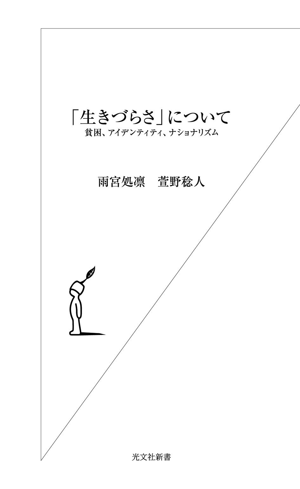
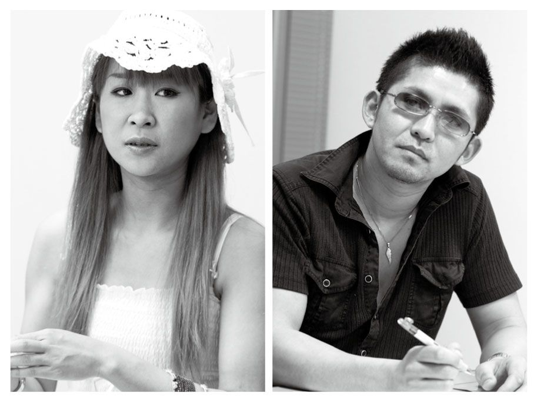
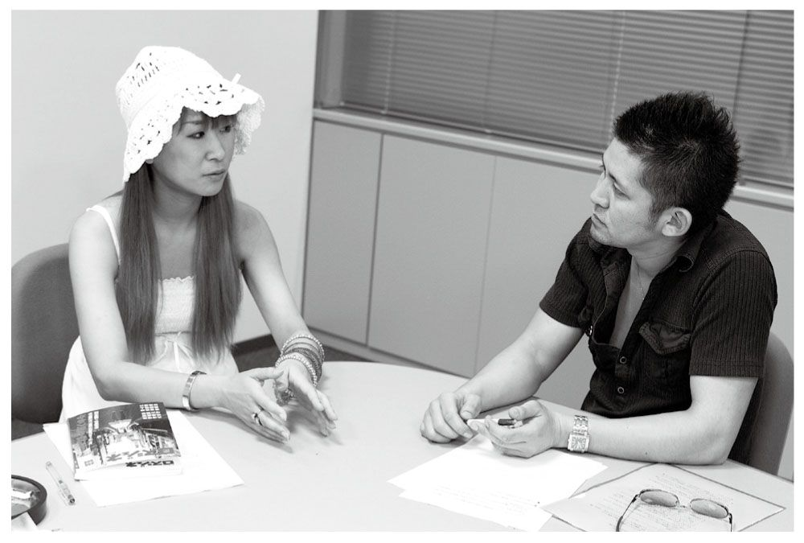
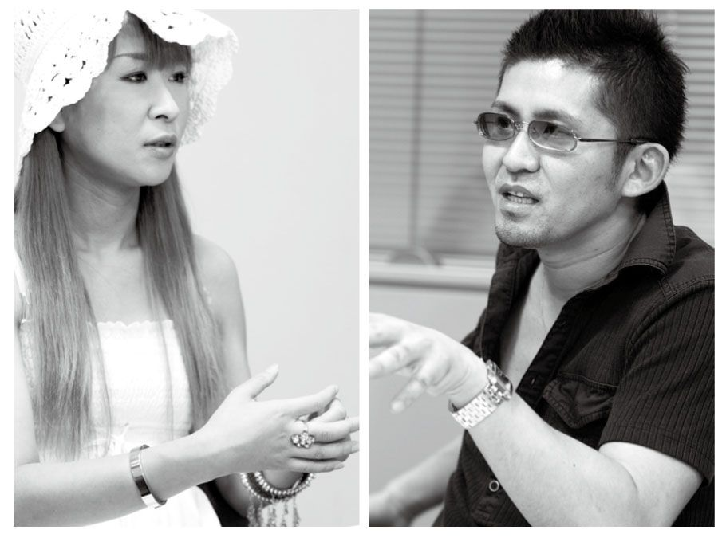
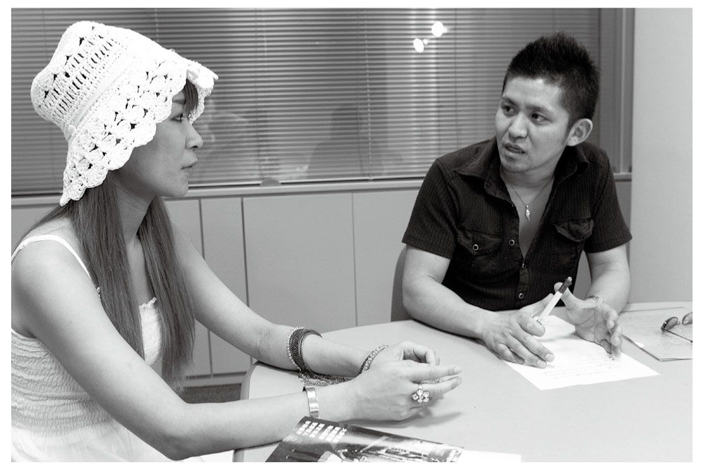

| 「生きづらさ」について～貧困、アイデンティティ、ナショナリズム～ | |
| 雨宮 処凛 & 萱野 稔人 | |
| (2008) | |

「生きづらさ」について 目次

萱野 いま、この社会では多くの人が「生きづらさ」をかかえながら生きています。たとえば、人間関係のなかで精神的な「生きづらさ」をかかえている人もいれば、貧困からなかなか抜けだせなくて経済的に「生きづらい」という人もいる。社会のなかで疎外感や居場所のなさを感じて「生きづらい」という人もいます。そうした現代の「生きづらさ」について、雨宮さんといろいろな角度から対話をしていくというのが本書のテーマです。
雨宮さんは現在、貧困やプレカリアート（不安定労働者）などの問題に取り組んでいる作家として広く知られていますが、もともとは、そういった社会的・経済的な「生きづらさ」ではなく、もっと精神的な「生きづらさ」を問題にしてきた作家ですよね。ですから、ここでも、まずは人間関係における精神的な「生きづらさ」を取り上げることから始めて、そのあと社会的な「生きづらさ」や労働の問題へと議論を広げていくことにしましょう。
雨宮 そうですね。私は、いまのように労働や貧困の問題にかかわるまえは、ずっと精神的な「生きづらさ」の問題にかかわっていました。不安定な労働や貧困といった社会的な問題とはべつに、人間関係や個人的な問題、親との関係などで純粋に生きづらいという問題です。メンヘラー（精神的な病や生きづらさを抱えている人。メンヘル系ともいう）やリストカッター、引きこもりなんかは、その典型的な事例ですね。
萱野 おそらく精神的な「生きづらさ」と社会的・経済的な「生きづらさ」って、どこかで重なっているんですよね。たとえば貧困におかれた人ほど鬱になりやすいとか。もちろん両者は完全に一致するわけではありませんが、でも重なっているところもあるからこそ、雨宮さんは精神的な「生きづらさ」から社会的なものへと問題の範囲を広げてきたわけですよね。
雨宮 じつは私が純粋な「生きづらさ」を取り上げていた当時から、両方重なっている人ってけっこういたんですよ。
たとえば三〇代のＳＥ（システム・エンジニア）をしている人なんですが、その人はちょっと連絡がとれないなあと思っていたら、陸橋から線路に飛び下り自殺を図って、けっきょく命は助かったけど、全身を何カ所も複雑骨折して入院していました。仕事で過労状態になっていて、それが原因で鬱病を患っていたんです。自分でもその自覚はあって病院に通ってたんですが、忙しいから休めない。薬を飲みながらものすごい長時間労働をしている。「そんな状態では死ぬから仕事をやめろ」といっても、「やめたら生活をどうすればいいんだ」といって、大量に薬を飲みながら働いていました。
それから二〇代の正社員の人なんですが、その人は会社のノルマが厳しくて、やはりいつも過労状態にあったそうです。ある日、上司にものすごく厳しく追い込まれ、気がついたら会社を出てホームセンターにいたそうです。で、そのまま無意識に練炭を買って、それを自分の車に入れて火をつけて、意識が戻ったときには病院のベッドの上にいたという。
このように、メンヘル系で明らかに労働の問題と関係のある人もいましたね。
萱野 現代の「生きづらさ」って、それぞれいろんな要因が複雑にからみあってできていますよね。その複雑さを解きほぐしながら、いまの「生きづらさ」の問題を立体的にとらえていくのがこの対談の目標でしょうか。その過程で、現代の「生きづらさ」をなんとか生き延びていくためのヒントのようなものも提示できればいいですね。
雨宮 私は純粋な「生きづらさ」系の人たちと一〇年ぐらい関わってきたんですが、ネット上の知り合いや、メールなんかでやりとりのあった読者の人も含めれば、すでに何十人も自殺して亡くなっています。直接の友人、知人も十数人亡くなっています。
かつて、そういう「生きづらさ」系のイベントをやったら三年後くらいにお客さんの一割が亡くなっていた、ということもありました。
もともとそれは自殺イベントなので、参加者はほぼ一〇〇％自殺志願者なんです。そのうち約一割が〝成功〟してしまったわけですね。そういう人たちの自助グループにもいっていました。
彼らは自分でも何が原因かわからず、完全に生きづらさをこじらせているので、リストカットやオーバードーズ（精神科で処方された薬などを大量に飲むこと）は当たり前でした。実際に会っても、どうやって死ぬかという話がメインだったり。
で、「自分はこんなに切った」と手首の傷を見せ合ったり、「自分は何百錠もオーバードーズして、何日間も閉鎖病棟に入っていた」とか、なんだか生きづらさや病気の深刻さを競いあうようになったりして、不幸が自分の全実存みたいになっていくんです。毎日ネットで「今日はこれだけ切った」とか、「これだけ薬を飲んだ」という写真をアップしているうちに、注目されたいのか反応がほしいのか、どんどんエスカレートしてしまうんですよ。エスカレートすればするほどみんなに心配してもらえるので。
でも、エスカレートしていくと、そのうちまわりの空気も「この人そろそろ死ぬんじゃないかな」となり、もっとエスカレートすると「この人そろそろ死なないのかな」という雰囲気になってくるんです。それがすごく恐ろしかった。
萱野 ここまできたらあとはもう実際に死んでもらうしかないという空気になっちゃうんですね。
注目されたいからオーバードーズしたり、リストカットの跡を見せたりして、どんどんエスカレートしていく。で、最後にはみんなの期待を背負って実際に自殺しないといけないところまでいってしまう。けっこうみんな「注目されたい」とか「認められたい」という願望が強いんですね。
雨宮 強いですね。逆にいうと、自分を定義するものとか、自分が注目をしてもらえる要素が、不幸や病気、傷痕しかない。メンヘル系である自分しかない。それと自分が一ミリのズレもなく重なっている状態なので、リストカットをやめたら自分が自分でなくなってしまう。だからやめられないと本人たちはいうんです。で、最後は、ある意味その自傷コミュニティの「空気を読んで」自殺してしまうような。
雨宮 私のところにきた高校生からの相談でこんなものがありました。親が「いまはすごい格差社会だから」と、分刻みで塾のスケジュールを入れて、本人は親に好かれたいからすごく頑張るんだけど、何のためにこんなに頑張っているのかわからなくなり、リストカットしながら必死で勉強している、もう頑張れない、という相談です。
萱野 じつは子供って、親の期待にけっこう敏感に応えようとするんですよね。でもなかなかうまく応えられなかったりすると、自分を責めてしまう。リストカットって自分を責める行為ですからね。
雨宮 子供って親に好かれるために、親が何もいわなくても表情や態度から気持ちを読んで、先回りしてそれに応えようとするんですよね。学校でも同じです。先生に気に入られるような子供を演じたり、クラスメイトとの関係でも親友のフリをする。つねにそうしていないと、どこにも居場所がなくなってしまうんじゃないかっていう思いが強烈にあるんです。
べつの言い方をすると、極端ですが、親の虐待を受けていたりする人というのは、苦しさの理由がまだわかりやすい、ということがあります。何が原因かわかるので、本人もまわりも了解しやすい。でも、普通の家庭で育って、学校にも普通に通っていて、とくに何か目に見えて問題があるわけでもないのに、なぜか異常に苦しいという人は、とても難しい。でも、じつはそういう人のほうが多数派だと思います。
萱野 いまの話は、本書全体のテーマともつながっていますよね。つまり、生きていくうえで、場の空気を読む必要がものすごくあるわけです。人間関係のなかで要求されることのレベルがとても高い。
いまの社会では、場の空気を読んで、相手の感情や行動を先回りして、互いのコンフリクトがけっしてあらわれないようにふるまえっていう要請がすごくあるじゃないですか。そうしないと、自分のことをまわりから認めてもらえないし、自分の居場所もつくれない。そういうハードルの高い人間関係のかたちがあるから、一度それにつまずいてしまうとなかなか立ち直れない。つまり、コミュニケーションのあり方が生きづらさのもともとの原因にある。
コミュニケーションのなかで要求されるスキルや繊細さって、時代のなかでどんどん高度になっているんですよね。だから勝ち組の年長者は、いまの生きづらさのリアリティがまったくわからなかったりする。いまでは小学生でさえ、相手の期待や場の空気を壊さないようにするにはどうふるまったらいいかを、すごく考えています。でも、要求されるレベルが高いから、それがちょっとでも狂うと――たとえば友達の機嫌をそこねてちょっとでも無視されたりすると――学校へいけなくなる。ささいなことでもつまずいて不登校になってしまうわけです。そして、一度不登校になると、コミュニケーションのハードルが高いから復帰がすごく難しい。引きこもりになりやすいんです。
雨宮 先ほどの「空気を読んで自殺」というのは、ある小さなコミュニティのなかでの空気を読んでのことですが、もっと広げていうと、社会全体の空気を読んで自殺したようなところもあるんですよ。なぜなら「弱い人は生きていなくてもいい」「邪魔なだけだ」っていう空気が、いまの社会には蔓延していますからね。たとえば不登校にしても、「不登校になったら、もう学校に戻ってこなくてもいいです。いろいろ迷惑だし」という空気のなかでは、復帰はきわめて困難です。
仕事が原因で鬱病になった人が社会復帰するのもすごく大変です。鬱病で会社をやめて、しばらく休んで治ったとしても、鬱病歴があるといったら雇ってくれない。鬱病を隠して正社員として就職できても、また長時間労働で鬱病になってしまう。そんなふうに一度つまずいてしまったがために社会に戻れない人からの相談がよくあります。そういう人たちに対する「排除」のメッセージってすごく強いんですよ。
先日、企業のメンタルヘルス問題に詳しいという偉いお医者さんに会いました。その人も、鬱病は企業の大きな負担になるから企業が排除するのは当然だろう、日本全体で何億、何兆円の損失になる、というようなことをいっていました。こういう言い方はひどいと思いますが、当事者は、わざわざいわれなくてもわかっている。そういう空気はものすごく蔓延しているので。
萱野 いま企業の話がでましたが、要求されるコミュニケーション能力がどんどん高くなっている状況って、いまの産業のあり方とすごく対応してますよね。
いまの日本の産業構造をみると、製造業はどんどん人件費の安い海外へと工場を移してしまい、国内にあるのは、マネジメントとか企画、営業や研究といった本社機能的な仕事ばかりになっています。実際に体をつかってモノをつくるというよりは、組織を運営するとか、アイデアをだすとか、プレゼンをする、ディスカッションをする、交渉する、分析をする、戦略を練る、といった仕事がお金を生み出す中心的な基盤になっている。こうした仕事は当然、高いコミュニケーション能力を要求します。工場が中心の社会からコミュニケーションが中心の社会へと大きく移行しているんですね。もちろん、それだけが生きづらさの原因ではありませんが、構造的には完全に対応しています。
萱野 少し、雨宮さん自身の生きづらさの経験について聞かせてください。
雨宮 私の場合、まずいじめですね。中学二年から始まった部活でのいじめが原因で、対人関係にかなり支障をきたすようになり、人をまったく信じることができなくなりました。いじめは小学校のときにも少しあったんですが、そんなに深刻ではなかったんです。
いじめを受けると、ふつう成績が下がりますよね。でも、私は逆にすごく勉強したんですよ。学校で自分が否定されているのに、これで成績が落ちたら親にまで見放されて、家にもいられなくなると思って......。いじめの厳しさと、「家では認められなきゃ」という厳しさの板挟みになっていましたね。いじめのことはもちろん親には隠していました。そんな状況で、だんだんノイローゼ状態になり、夜、ぜんぜん眠れなくなっていったんです。
萱野 中一のときには、いじめはなかったんですか？
雨宮 そうですね。ただ、一年生のときはまわりでいじめが激しかったので、次に自分がターゲットにならないように、つねに空気を読んでいました。すごい緊張感でしたね。強い人が何かをいったらそれに従うとか、この瞬間は笑わなくちゃいけないとか。一瞬も気を抜けない状態で、なんとか身を守っていました。
でも、二年生になって、自分がとうとうターゲットになってしまった。それまで、一人では身を守れないので、三人ぐらいの友達でかばい合っていたんです。
萱野 部活は何をやっていたんですか？
雨宮 バレーボールです。スポーツはまったく好きじゃなかったんですが、先輩におどされて入部しました。そのうえやめると報復があるかもしれないと思って、やめられなくて。
部活では同学年や上の学年のいじめがすごく激しくて、ターゲットにされた人はどんどんやめていくという感じでした。あるとき、ターゲットにされた生徒がひどいいじめを受けていたので、先生に相談にいったんです。しかし、ぜんぜん相手にしてくれない。小さな会議室みたいなところに、いじめっ子といじめられっ子を呼んで、「ここで話し合いなさい」といってそのままどっかにいっちゃったんです。結局、いじめられっ子はその場で罵倒され、精神的にボロボロにされてしまいました。先生のお墨付きの、合法的ないじめの場が与えられてしまったんです。
雨宮 私はそれまで友達とかばい合ってきたつもりだったんですが、自分がターゲットにされたとたん、友達が寝返ったんです。私は、その友達がターゲットにならないよう、すごく巧妙に、空気を読んでフォローしてきたつもりだったんですが。
それで、その友達までいじめる側にまわってしまった。自分の一番身近な人間に裏切られたわけで、それから人間不信の塊になりましたね。ある日突然いじめられるようになって、本当に世界がガラッと反転するような感じでした。
萱野 いじめが社会問題化するようになったのは一九八〇年代からですが、そこでの人間関係ってすごく流動的なんですよね。昨日までは平和だったのに突然いじめが始まったり、いきなりいじめの標的にされたり、いじめられていた側がいじめる側にまわったり、という感じで。
雨宮 いじめが始まる瞬間も、リーダー格の舌打ちひとつで、まわりがその人の気持ちを読んで、いきなり空気がかわるという感じでした。
私のいた部活はすごく弱いチームだったんですが、なぜか朝練（早朝練習）もあって、ぜったいにいかなくちゃいけない。いま思うと、部活をやめればよかったんですが、当時はやめたらもっとひどい目に遭うんじゃないかと思い込んでいたんです。
朝練だと五時頃に起きて学校にいくんですが、ぜんぜん寝なくても平気だったんですよ。寝ても一、二時間で目が覚める。だから深夜一時、二時まで勉強して寝ても、すぐに目が覚めて、また勉強をして朝練にいくという感じでした。成績が落ちるのも怖いし、部活にもいかなくちゃいけないから、目が冴えてぜんぜん寝られないんです。
部活の最中はいじめがあるので、つねに感情を殺していました。ただ脳は大忙しの状態でしたが。部活のあいだは、つねに朦 朧 として、何も考えない、何も感じないように自分の状態をコントロールしていましたね。
萱野 脳が大忙しだったのは、つねに場の空気を読まなくちゃいけなかったからですか？
雨宮 いえ、何も考えないようにずっと頭のなかで九九を唱えたり、うたを歌ったりするために忙しかったんです。
その頃は意識を意図的に朦朧とさせて、つねに「これは自分に起こっていることじゃない」と思い込もうとしていたんです。そうしたら、本当にそうなってくるんですよ。自分のうしろに自分がいるような感じです。
そうなると、何をされても他 人 事 で、痛くも痒くもないし、傷つきもしない。感情を封印している状態なので、そのときは耐えられるんです。でも、家に帰ってちょっと安心すると、抑えこんでいた感情が出てきてしまう。だから、親のまえではすごく明るく、まったく問題なく学校生活を送っているようにふるまっても、部屋で一人になるとコンパスの針で手を刺したりするんです。その頃はまだリストカットのやり方を知りませんでしたから。
雨宮 当時は、明確に自殺したいと考えていたわけではなかったんですが、無意識に、学校帰りに自転車で車道に猛スピードで突っ込んだりしていましたね。あと、逆に、自分はいじめなんか受けていないと思い込もうともしていました。「これはいじめでもなんでもない。ただの悪ふざけなんだ」、と。
でも、現実はぜんぜん違う。
萱野 ときどきいじめ自殺があると、自殺した生徒はいじめのときいつも笑っていたから、まわりはそれをいじめだとは思っていなかった、という話をききますよね。でもそれって、自分の置かれたつらい状況を直視すると、自分をよけいに追い込むことになってしまうから、現実を否認して自分を守るという行為なんですよね。
雨宮 そうなんです。
私も本当はその時点で不登校になっていればよかったんですが、高校受験に向けてのプレッシャーがすごくて、それはぜったいにできなかったですね。私たち団塊ジュニア世代って人口が多いから、いつも「競争、競争」って追いまくられていましたから。
それに当時はまだ「不登校」という言葉もありませんでした。「登校拒否」という言葉があったぐらいで。実際、不登校の人なんてまわりにいなかったので、一日休んだらもう二度といけなくなると思って、必死に毎日登校していましたね。一日休んで学校にいけなくなったら高校にも入れなくなって大学もいけなくなって社会から滑り落ちてしまうと思って、それがものすごい恐怖で、むりやり登校していました。
結局、部活のほうは二年生の終わりぐらいでやめました。ただ、やめても部活の人は同じ学校にいるので、それから卒業までは、ずっと逃げる生活を送っていました。いかに彼女たちの視界に入らないようにするかを最優先課題にして、つねに遠くまで注意を払いながら歩いていましたね。そういう緊張状態が卒業までずっと続きました。
萱野 クラスのほうの人間関係はどうでしたか？
雨宮 クラスに友達はいなかったですね。友達をつくったら、裏切られていじめのターゲットになってしまうと思っていたので。もう友達はつくらないと決めていたわけではないんですが、とにかく人間関係自体が恐怖の対象になっていたので、人と関わらないように生きていました。
雨宮 高校ではいじめっ子とべつの高校になったので、ある意味、解放感はありました。でも、やっぱり友達はつくらないようにしましたね。友達関係がいつ、いじめにつながるかわからなかったので。
高校に通い始めると、中学時代にずっと封印していた感情が爆発して、リストカットをしたり、家出してビジュアル系バンドの追っかけをするようになりました。
萱野 高校の外には友達はいたんですよね？
雨宮 はい。追っかけの友達ができました。当時のビジュアル系ファンって、私のようにいじめられた経験があったり、何かそれぞれ事情を抱えている人が多かったので、そういう人とは仲良くなれました。命がけで好きなバンドや音楽が同じというだけで、「同志」という感じでした。
ただ親からはすごく怒られましたね。それまでは親のいうことをぜんぶ聞いていましたから、「中学時代の良い子だったあなたに戻りなさい」とよくいわれました。でも、親からみて良い子だったときの自分って、かなり頭がおかしい状態でしたから。毎日死のうとしていたのに、それに戻れといわれても困りますよね。それで親と対立して家出して、学校にもあまりいかなくなったんです。
リストカットって、けっこう潜伏期間があるんですよ。つまり、いじめが終わってかなりの時間がたってから、その症状があらわれる。他人からすると「なんでいまさら」という時期になって症状があらわれたりするので、理解されづらいんです。
萱野 そうなんですよね。リストカットをしている時点で、その原因である問題はすでに過去のものだったりするんですよね。
雨宮 そうなんです。自分としては、リストカットをしないと、自分の気持ちをどうおさめればいいかわかりませんでした。
さっきもいいましたが、いじめが終わってしばらくして、やっと悔しさとか怒りの感情がでてきたんです。いじめっ子たちと学校が分かれて安全になってはじめて、感情を封印する必要がなくなり、リストカットを始めるようになったんです。
萱野 復讐したいとは思いませんでしたか？
雨宮 怒りはあったんですが、恐怖のほうが大きかったですね。いまでもそうなので、私、実家に帰ってもぜったい家から出ないんですよ。
ですので、もう少しあとの話になりますが、高校を出て上京したあとのフリーター時代には、どんなに厳しい状況でもぜったい実家には帰れないという気持ちがありましたね。だから、場合によっては「ネットカフェ難民」みたいになっていた可能性もあります。よく難民化した人に対して、「実家がある人は帰ればいいじゃん」みたいなことがいわれますが、実家がそういうトラウマの温床になっていると、そこに帰るという選択肢は最初から存在しない。そういう人はけっこう多いんじゃないでしょうか。
萱野 家にいられなくなったり、帰れなくなったりするのって、一般にはなかなか理解されないんですよね。実際にはそれは難民化の第一歩なんですが。
雨宮 高校時代に、私は完全に症状をこじらせてしまって、普通の人間関係が築けなくなってしまいました。普通の友達は、裏切られるのが怖くてつくれない。唯一つくれたのはやっぱり追っかけ友達です。自分と同じような境遇の子が多かったので。
いまもそうなんですが、ビジュアル系バンドのファンって、なぜか手首に傷があったりするんですよ。やっぱり親との関係が悪かったり家庭が複雑だったり、過酷ないじめに遭っていたりして。だから、彼女たちとは何もいわないでもわかりあえるみたいなところがありました。
何らかの傷を抱えている子たちが避難所のように集まるのが、ビジュアル系のライブだったんです。そういう子たちが多かったので、そこでは人間関係をつくれたんです。
萱野 いまの雨宮さんのゴスロリファッションもその流れですよね？
雨宮 そうですね。ビジュアル系の世界とか、暗い歌詞とか、ゴスロリファッションとか、病んでいる感じはいまでもすごく好きです。そこが一つの精神的な拠り所ですね。
萱野 リストカットと摂食障害、という組み合わせも多いですよね。
雨宮 そうですね。ただ、私は摂食障害にいかなくてよかったなあと思います。摂食障害ってすごくコントロールが難しいんですよ。何十年も摂食障害を抱えている人たちもいます。四〇代や五〇代で摂食障害の女性を知っていますが、彼女たちの話を聞くとやはり壮絶ですね。家で暴れまくって、家族全員が避難して、誰もいなくなった家でずっと一人で食べる・吐くを繰り返していたり......。そんな人がたくさんいます。
萱野 高校卒業後は、美大受験のために上京して浪人生活をするんですよね？
雨宮 そうです。でも、じつは美大受験というのは口実で、ただバンドの追っかけをしたかったから上京したというのが真相です（笑）。それと上京して親から逃げたいという気持ちもありました。
ただ、上京したあと、私は完全に生きづらさをこじらせた状態になりましたね。
浪人しているあいだはまだよかったんです。浪人を途中でやめてフリーターになったときは困り果てました。本当にどうすればいいんだろう、と。一ミリ先の将来もまったくわからない状態でしたから。
浪人のときはまだ一応「浪人生」という言い訳が成り立ちますよね。社会的にも許される立場です。でも、一九歳でフリーターになった瞬間、本当にどうしたらいいのか途方に暮れました。生活の不安がどんどんのしかかってきて、生きづらさをさらにこじらせていきました。
フリーターだと簡単に仕事をクビになりますよね。風邪をひいて「すみません、風邪ひきました」と電話すれば、「もう明日からこなくていいよ」とクビになる。
生きづらさ系の人には、「もうこなくていいよ」という言葉は「死ね」というふうに聞こえるんですよ。だからバイトをクビになるたびにリストカットしたり、オーバードーズをして病院に運ばれて胃洗浄を受けたりしていました。
萱野 オーバードーズは高校時代からですか？
雨宮 いえ。そのときはまだ精神科に通ってませんでしたから。浪人中ですね。親にむりやりカウンセリングに通わされていたんですが、どんどん精神的に不安定になっていって、結局、精神病院に通うようになったんです。
上京したのは追っかけが目的だったので、追っかけ友達とみんなで上京しました。みんなフリーターをしていたんですが、そのうち追っかけ資金のためにみんな風俗とかで働きだしました。私も誘われたんですが、そういう友達が非合法な方のクスリでどんどん壊れていくのを間近で見て、自分もその道に入ると取り返しのつかないことになると思って、距離を置くようになりました。そうしているうちに追っかけ友達との関係も薄くなってしまったんです。
かといって、バイト先でも友達をつくりようがない。友達になっても、自分だけがバイトをクビになったりすると、バツが悪くてその後は会いづらくなってしまう。だから、フリーター同士で競争させられている感じでしたね。結局、どこにもアイデンティティを求めようがなかったんです。
萱野 完全に居場所がないという状態だったんですね。で、その後、右翼団体にいくわけですね？
雨宮 はい。こういう言い方は変かもしれませんが、右翼はすごく居心地がよかったですね。ある意味、いまかかわっている労働組合と似た感じがあります。労働組合に入ってくる人たちも、ここではじめて人間に対する信頼感を取り戻せたというんです。「この人を蹴落とさなきゃ」とか「競争しなきゃ」とかいう感情ぬきで、はじめて人と話すことができた、と。私にとっては、そういう体験をしたのは右翼団体がはじめてだったんです。
営利目的でもないし、競争もしなくていい。ただ、この国を良くしたい。それだけで若者たちがまとまっている。しかも全員私と同じ中卒・高卒のフリーターです。大卒は委員長しかいない。
萱野 雨宮さんの生きづらさの経験を聞いていてとても印象的だったのは、空気を読まないと学校生活をサバイブできなかったという話です。いじめられないためには、空気を読んで、うまくたちまわらないといけない。これってたぶん、いじめだけでなく、いまの社会生活のどこにでも当てはまることですよね。
雨宮 空気を読んでいるときが一番きつかったともいえますね。たとえば中学生のときは、教室内や部活内のいじめがいつ自分にくるんだろう、と日々ビクビクして過ごしていましたから。いつかは自分にくることはわかっていて、そこから逃れるために一日中神経を使うという状況のほうが、いじめられているときよりもある意味できつかったかもしれない。そういう状況って誰にでも経験があると思います。
萱野 そこにあるいじめの構造って、みんなが過剰に空気を読むことで、そこに緊張感やストレスが生じ、それをなんとか緩和するために特定のターゲットにコミュニケーションの負の部分を押し付ける、というものですよね。過酷さのレベルはまったく違いますが、合コンなんかでいじられキャラがいると初対面の緊張感がなごみやすい、というのと同じ原理です。つまり、その場にいる人たちが、必死に空気を読み合うことで生まれる重圧をなんとか解消しようとして、いじめが起こる。
雨宮 自分以外の誰かがターゲットになっていじめが始まったら、一気にその場の緊張感がゆるむというか、やっとみんなホッとする。そういう空気を私も日々感じていましたね。
萱野 よく、いじめの原因について、若者たちの人間関係が希薄になったとか、規律が弱くなったということがいわれますよね。安倍内閣のもとでできた教育再生会議なんかも、そんなような議論をしていましたが。
雨宮 教育再生会議って、教育に精通した立派な人が集まっているはずなんですけれど、いうことがバカというか、何も考えていない。いじめをなくすためには「三〇人三一脚」をやればいいとか、「早寝早起き朝ご飯」とか（笑）。とってつけたようなもののオンパレードですよね。
萱野 何もわかってないんですよね。いじめは、子供や若者たちのコミュニケーション能力が下がって、人間関係が希薄になったから起こっているのではありません。逆に、コミュニケーション能力がここまで要求されて、何らかの緊張緩和がなされないと場を維持することができないから起こっている。そこで実践されているのは、空気を読んで、相手の出方を先回りし、まわりに配慮しながら場を壊さないようにする、という高度なコミュニケーションです。
僕は大学卒業後、フランスに留学して八年ほどパリに住んでいたんですが、日本人がむこうでフランス人と話すと浮くんですよ。どうしてかというと、気を遣い過ぎるからです。たとえば過剰に笑みをたたえていたりとか。「この場の空気はなごやかですよ」ということを演出しようとしたり、場に緊張感やコンフリクトが生まれないよう過剰にまわりに同調したり、相手が不愉快にならないように気を遣い過ぎて、逆に空回りしてしまう。
そうやって気を遣い過ぎたり、空気を維持したりするのは、逆にいえば、他人と対立したときにその処理で傷つきたくないから、結局は自分を守ることでもあるんですよね。それは、恥をかきたくないというような意識ともつながっている。だから、外国人とのコミュニケーションに対して臆病にもなるんです。たとえば、文法をまちがえたらダメだということを過剰に意識して会話ができないとか。
本当は、むこうのコミュニケーションってもっとストレートだから、こちらももっと気軽にやればいいんですよ。でも、それがなかなかできない。空気を過剰に読んで、まわりに過剰に配慮する、というコミュニケーション能力が、それだけこの社会では要求されているってことです。
雨宮 いまの高校生や大学生としゃべっていて、当時の自分と共通しているなと思うのは、核心に触れないような話しかしないところです。それもできるだけ楽しい話しかしない。
私の場合、バンギャ（ビジュアル系バンドが好きな女子の総称。バンドギャルの略）友達とは、好きなバンドのことだけを、夜を徹してしゃべり続けていましたね。家出して野宿していたので、そういう話をずっと路上でしている。おたがい手首に傷があったり、いろいろな事情があるはずなんですけど、そのことについてはまったく触れない。一度も核心に触れる突っ込んだ話をしたことはなくて、たまに人づてに「誰それは親に虐待されてるみたいよ」という話を聞くだけなんです。
でも、現実から目をそらして、楽しい話でごまかすのは、だんだんきつくなってくるんですよ。なんでこんなバカみたいなことしか話さないんだろう、もっと話すべきことがあるはずなのに、という思いが出てきて。
だけど、自分はこんなにきついとか、生きづらいとか、死にたいとか、ぜったいにいえないような雰囲気が、その場にはあるんです。そういうことをいったとたんに、空気が読めないと排除されるんじゃないかと、おびえてしまう。でも本当は相談したいんです。でもできない。
いまの中高生からも同じような話を聞いて、自分のときとコミュニケーションのあり方は変わっていないと思いましたね。
萱野 変わってないだけじゃなく、そういう状態がもっと一般化しているともいえますよね。いまは、その場のノリを最優先にしなきゃいけないという圧力がすごくあるし。そこでもし深刻な話になって、対立点とか相違点がでてきちゃったら、「場を壊しやがって」と白い眼で見られかねない。
雨宮 いまは友達とそういう話ができなくても、インターネットで代用できますよね。だからそこに過剰にはまっていくと思うんです。ネットでは自分のドロドロした部分を一〇〇％出しても、そういうことが許されるサイトだったら普通に受け入れられるから、ものすごくネットに依存してしまう。
萱野 似たような事例として、学校では場を盛り上げるような話しかしなくて、本音の話はメールでしかしない、というのがありますね。会ったときに話せばいいじゃん、とはならない。メールのほうが自分の思いを吐 露 しやすいから、と。これはいまでは大人の世界でもありますよね。
雨宮 私の知ってる子が、インターネットのサイトを六個やっているんです。アニメオタクの自分、ビジュアル系が好きな自分、普通の明るい「女子高生日記」、リストカットしている自分、というふうに使い分けているんですね。本人もヤバイと自覚しているんですが、それをやらないともたないという。
ただ、本人にとっては、使い分けてる自分に対するちょっとしたプライドがあるんですよ。それが、この世界に対する私なりの適応方法だと。
萱野 うまくコミュニケーションをやりくりしているという感覚なんですね。
雨宮 アニメの話をしているところにリストカット系の人格をもち込んだら、みんな迷惑でしょ、という感じで。そこでも空気を読んでるんですよ。
萱野 空気を読む作法としてやっているわけですね。
雨宮 ただ、そうなるとネット上に感情の掃き溜めをもてるので、リアル友達とはますます空虚な話しかしなくなっていきますよね。それはそれで一つのあり方なんでしょうけど、それを使いこなせるほど、人間は器用じゃないんじゃないでしょうか。
萱野 リアルなコミュニケーションが空虚になることに、人ってそんなには耐えられませんからね。「なんで私は生きてるの？」とか「こんな空虚な世界、どうでもいいかも」って気持ちもでてくるでしょうし。
雨宮 ですよね。実際そこでは人格の使い分けになってくるので、ぜったいあとで問題がでてくると思います。どういうかたちでその副作用が出てくるかは、いまのところ想像がつきませんが。
萱野 空気を読んで、まわりに過剰に同調するというコミュニケーションのあり方って、いいかえるなら、それだけ人びとが他者との関係に依存しないと自分を維持できないってことをあらわしていますよね。他者から否定されたら自分の存在を支えられなくなるからこそ、空気を読んで、まわりに自分の存在を受け入れてもらおうとするわけです。自分の存在が他者からの承認に依存している度合いがとても高い。他者とのあいだにズレやコンフリクトが生まれて、他者からうっとうしがられたり見切られたりすることを極度に恐れて、無理にでも他者に同調してしまうんです。
雨宮 私はずっと他人からの評価でしか自分の価値を確立できないと思っていて、いまもそういうところがあるんですが、そういった他者からの承認とか評価なしで、自分の価値を証明できる回路というのはあるんでしょうかね？
萱野 やっぱり、人から認められることが、自分の存在価値を証明する一番の回路だと思いますよ。もともと人間って、自分の存在価値を自分では証明できないから、他者にそれを認めてもらうしかないんです。どうしても他者からの承認を求めてしまうんですよ。
ただ、どれぐらい他者からの承認を必要とするかという度合いは、人によっても時代によっても違ってきます。おそらく、高いコミュニケーション能力が要求されるいまの社会って、その度合いが強い社会なんでしょう。そうした社会では、他者とのコミュニケーションのなかでそのつど自分の能力や価値を認めてもらわないといけないという圧力がものすごくあって、そうした社会の圧力にあわせて、個人のほうも「自分の価値を証明しなきゃいけない」、「他者に認められないといけない」っていう衝動に強く駆られてしまうんです。
雨宮 私も、自分病みたいな状態がすごく長く続いて、自分の存在意義を得られなくては生きていけない、生きている意味がないとずっと思ってきました。それを得ようとして、得られなくて、そこにつまずいて自殺した人というのもすごく多い。この呪縛はいったい何ですかね。
萱野 社会全体のあり方がそういう方向に突き進んでいますよね。みんながみんな有名になりたいって思うのも、モテることがここまで重視されるのも、そのあらわれですよね。いまや、モテないとすべてがダメみたいな勢いですから。
雨宮 小さい頃から、好きなことや、やりたいことを仕事にして、それで自己実現しなさいといわれ続けるのも大きいですよね。そうでない生き方はよくない、そうできない人は負け組だ、みたいな空気がすごく強いような気がします。教育のなかでもそういわれてきたし、テレビなど普段接しているメディアにも、そういう圧力が満ちあふれていますよね。
萱野 教育で個性尊重がいわれはじめたのは、七〇年代以降のことですよね。団塊ジュニア世代はそれをシャワーのように浴びて育ってきましたよね。
雨宮 そのことでいつも矛盾を感じるんですが、個性尊重とか自己実現とかいうんだったら、べつにいい大学にいく必要はないわけですよね。それなのに、「自己実現するためにはいい大学にもいっとけ」みたいにいわれる。そんなにぜんぶ求められても、困るわけですよ。
このことは、やりたいことを見つけるまで働けないという、ニートの問題にもつながってきますよね。
萱野 いまニートの話がでましたが、こうして見てくると、精神的な「生きづらさ」のなかに、すでに社会的な「生きづらさ」の要素が一通りあることがわかります。
たとえば貧困や不安定労働における「生きづらさ」って、たんにお金がないから生きづらい、ということだけにはとどまりませんよね。そこには、社会からまともに扱われないとか、居場所がないといった生きづらさも含まれています。そういった生きづらさの原型は、すでに精神的な生きづらさのなかに見いだされるものです。
もともと、要求されるコミュニケーション能力がどんどん高くなり、他者からの承認を得るためのハードルもどんどん高くなるなかで、多くの人が生きづらさを抱えるという状況があって、さらにそのうえで、ある時期からいきなり就職が厳しくなり、労働条件も厳しくなっていったということでしょう。それによって「生きづらさ」が、もっと社会的な問題のほうまで広がってきたわけです。
雨宮さんはそのメインストリームをずっと生きてきた感じですね。
雨宮 八〇年代以降のあらゆるマイナス要素を経験していますから。現代の病理のデパートです（笑）。

萱野 雨宮さんが二〇〇七年三月に出された『生きさせろ！ 難民化する若者たち』（太田出版）はひじょうに話題になり、「日本ジャーナリスト会議賞」も受賞しました。内容も、厳しい労働や貧困を強いられているいまの若者に焦点をあてた、とてもすばらしいものです。一〇月には『プレカリアート』（洋泉社新書ｙ）を出されました。これは『生きさせろ！』に続く本で、「プレカリアート」、つまり不安定な雇用環境におかれた労働者 ――とくに若年労働者――をテーマにしています。
『生きさせろ！』が出て『プレカリアート』が出るまで、だいたい七カ月ぐらいのあいだがありますよね。そのあいだに生じた新しい現実ってどのようなものでしょうか？
雨宮 状況が変化するのが本当に早くて、三月に『生きさせろ！』を出したときには、「ネットカフェ難民」という言葉はぜんぜん流通していなかったですし、「マック難民」という言葉はありませんでした。「マック難民」という言葉ができたのが、今年（二〇〇七年）の春ですね。
でも、現在（二〇〇七年一一月）、厚生労働省がネットカフェ難民の調査をしています。あと『生きさせろ！』で、いまどういう反撃が起こっているか――「フリーター全般労働組合」という一人でも入れる組合がありますよとか、高円寺ではこういう反撃が起こっていますよという紹介をしたんですが、最近、フリーター労組や派遣ユニオンの人たちなどがかかわって「グッドウィルユニオン」など、いろんな組合がつくられ、実際に集団訴訟を起こしています。
その裁判は、折口（雅博：グッドウィル・グループ会長）に対して、データ装備費（一稼動するたびに、派遣労働者から不当に二〇〇円を賃金から天引きしていた）を返せという要求から始まりました。団体交渉していたのですが、返すといったり返さないといったりはっきりしない。そのうち折口が八〇万人の二年分にあたる三七億円を返すと発表し、大きく報道されました。でも二年分じゃ、ぜんぜん足りない。「一〇年分返せ」ということで、八月に集団訴訟を始めたりしています。
『生きさせろ！』を出したあとの事件としては、二〇〇七年七月に北九州で生活保護を辞退させられた五〇代の元タクシー運転手の男性が「おにぎりを食べたい」という言葉を日記に残して餓死したという事件がありました。その人がミイラ化した死体で発見されたのが七月です。すごくショックを受けて、八月に、生活保護問題で活動している弁護士さんたちと一緒に北九州市の福祉事務所長を刑事告発し、同時に法務局に人権救済の申し立てをしました。
あと、『プレカリアート』では「反貧困ネットワーク」という団体を紹介しています。これは宇都宮健児さんという多重債務問題に関わっている弁護士さんが代表で、事務局長が、ネットカフェ難民の問題なんかをいち早くメディアに発信して警鐘を鳴らしてきたＮＰＯ「もやい」の湯浅誠さん、副代表が私とグッドウィルユニオンの委員長と、「しんぐるまざあずふぉーらむ」というシングルマザーの団体の人です。それ以外にも連合（日本労働組合総連合会）や全労連（全国労働組合総連合）からフリーター労組までのいろんな労働組合や、生活保護裁判に取り組んでいる弁護士さん、ホームレス支援団体や障害者当事者団体の人たちなどが個人で参加し、「反貧困」を合言葉に大同団結して、とにかく貧困をなんとかしようということで「反貧困ネットワーク」が結成されました。これまで、国会院内集会をしたり、政治家に働きかけたり、政策提言などをしています。集会やデモもしています。こういうふうにどんどん状況が変わっていきました。（参照元へ戻る）
もちろんよいことばかりではありません。先ほどいったように、餓死者が出たり、ネットカフェ難民が厚生労働省の調査だけでも五四〇〇人いるという状況もあります。そのあいだにも若い人のホームレス化が進み、たぶん二〇〇七年の三月より一〇月のほうが増えていると思います。
このように、状況が悪くなった部分もあれば、具体的な反撃が始まったということで状況が変わってきた部分もありますね。
萱野 今年（二〇〇七年）は、状況が悪化する一方で、フリーターの労働運動や反貧困の運動が盛り上がったりと、いろいろ大きな展開があったわけですね。たとえばグッドウィルユニオンの結成やデータ装備費の問題は大きなニュースにもなりましたね。
雨宮 そうですね。注目度が大きく変わりました。それに、活動している人たちが動くことによって、社会問題化され、マスコミでも大きく報道されるという図式にもなりつつあると思います。
去年（二〇〇六年）の今頃は、まだ「格差」が「貧困」の問題だという認識はぜんぜんなかったですし。格差社会がここまで進んでいるということも、あまり認識されていなかったんじゃないかな。今年になってから、状況が悪化したのが誰の目から見てもわかるようになったと思います。都内では若いホームレスやマンガ喫茶で寝泊まりする人を、普通に見かけるようになりましたし。
あと「プレカリアート系」――「不安定なプロレタリアート」という意味の言葉ですけど――の人たちの労働運動が本当に力をもってきて、たとえばグッドウィルで労働組合を立ち上げるとなると、たくさんの若い人が一気に押し寄せて加入するという状況が生まれています。これまでは日雇い派遣で働くフリーターなどは怒りをどこにぶつけていいのかわからなかったんだと思います。でも誰かが声をあげることで、普通の若者がバーッと集まってきた。誰かが声をあげるのを待っていたんだなと強く感じました。
しかもそういう人たちの活動が、次の日に新聞のトップを飾ったりする。そして具体的に物事が動いていく。
派遣ユニオンなんかが、厚生労働省に日雇い雇用保険をグッドウィルやフルキャストで働いている日雇い派遣労働者にも適用させろ、とずっといっていたんですが、そうしたらそれが本当に適用されることになったりとか、具体的に成果を出しています。ただ、日雇い雇用保険を使うにはまだまだいろいろな問題があるらしいのですが。
あと、ガテン系連帯というのがあって、これは製造・加工などものづくり現場や土木・建築、運輸の分野で、派遣や請負など非正規で働いている人たちの組合です。この組合を立ち上げたのは、現場で働いている二〇代の男性と元「ブラックエンペラー」の四〇代の男性なんです。
萱野 ブラックエンペラーって暴走族の？
雨宮 そうです。その人が日野自動車の工場で派遣で働いているんですが、正社員との差別的な待遇が許せず、組合を立ち上げました。
組合結成のきっかけは「お花見事件」だそうです。彼らが、正社員といっしょにお花見にいったときに「おまえ、何歳だ？」と聞かれた。二〇代の彼が「二六歳です」と答えたら、「正社員か？」と聞かれて「派遣です」と答えた。そうしたら正社員に「人生終わってるな」といわれた。それを聞いていた四〇代の元ブラックエンペラーの人が殴りかかりそうになった。そんなことがガテン系連帯結成のきっかけになったそうです。
彼ら製造業の派遣労働者って、工場が長い休みになる一月、五月、八月はお金がほんの少ししか稼げない。正月、ゴールデンウィーク、夏休みの時期ですね。ただでさえ月一六万円ぐらいしか稼げないのに、そういう休みが続いたら、八万ぐらいになってしまう。そこで、連休がある月は「連休手当を三万円よこせ」という団体交渉をして、実際に勝ち取りました。
そういう具体的な成果が生まれることで、「やればできるんだ」ということに、この一年ですごく気づかされました。
萱野 二〇〇七年というのは、非正規雇用の労働運動がかなりいろんなことを獲得した一年だったと思います。でもこれって逆にいえば、これまであまりに違法なことがまかり通っていた、ということですよね。もともと相手がムチャクチャなことをやっていたから、ちゃんと法に訴えて運動をやれば勝てるという。
雨宮 本当にそれを痛感しました。労働現場でデタラメなことをされる背景には、企業が違法行為をするなんてみんな端 から思っていないということがあります。とくに若ければ若いほど法律に関しても知らないし、非正規でしか働いたことがない人は、何がおかしい働かされ方だかよくわからない。でも、じつはむこうが違法行為をやっていて、それに対して合法的に反撃すれば、むこうが屈するしかないということが、この一年で本当によくわかりました。
萱野 キヤノンの偽 装 請 負 も大きなニュースになりましたよね。でも、キヤノンの御 手 洗 富士夫会長は、自分たちが非合法なこと――偽装請負――をやっていたにもかかわらず、あたかも法のほうに問題があるかのような発言をしています。日本の経済界のトップがそれでいいのか、と思うんですが（御手洗会長は日本経団連の二代目会長）。
つまり、請負や派遣、あるいはアルバイトでもいいですけど、そういう流動的な労働現場では非合法なやり方がかなり普通になっていたということですね。
雨宮 そうですね。二重派遣、三重派遣なんかも普通にあると聞きますし、「労災隠し」なんかも当たり前にあるといいます。労災の場合、命にもかかわります。本当に「命の格差」があるんですよね。ひどい扱いを受けている派遣の人たちの話を聞くと、つくづくそう思います。
現場にいくと、派遣会社の話とすべて違うという。寮が二人部屋で友達と一緒に入れるといわれていたのに、ぜんぜん知らない人との四人部屋だったり、給料も「平均二七万」と求人誌に書いてあったのに、一二、三万しか稼げないとか。社会保険に入れるといわれていたのにいつまでたっても社会保険に入れてもらえないので病院にもいけないとか。
この一〇年ぐらい、若いというだけですごく足元を見られてきたと思います。不況で仕事がないですから、いくらデータ装備費という名目で給料から天引きされても、どんなに危険な作業でも、「集まってくるだろう」と思われていたんですね。そういう若者を使い捨てにして、グッドウィルやフルキャストが、日雇い派遣の大手として荒稼ぎしている。そんなところしか働く場がない人がたくさん生み出され、足元を見られて、どんどん条件が悪くなっていく。ここ数年、そうした状況で働く人たちがホームレス化しだしてきたというのが、一番象徴的です。
萱野 とくに地方では本当に仕事がないですよね。たとえば東北や北海道なんかだと、多くの派遣会社が出張所をもっていて、新聞なんかに広告を出すわけですよね。「月収三〇万可能」とか......。
雨宮 「寮費無料」とか。ぜったい嘘ですよね。
萱野 実際にいってみたら、ひと月で一二、三万しか稼げない。それでもどんどん人がくる。ほかに仕事がないですから。
雨宮 青森なんか最低賃金が六一九円ですから、そこに「三〇万稼げる」って求人広告をばらまけばすごい効果がありますよね。六一九円で一日八時間、週五日働いても月収一一万にいかないので、仕事がちょっときつくても、たとえば一日一二時間労働で昼夜交代勤務、一週間ごとに昼夜が代わるような勤務形態でも、「三〇万稼げるんだったらいく」という気持ちになりますよね。ほかに地元には仕事がないですし。
最近、東北のフリーターの方からメールがきました。ずっと派遣や請負で工場を転々としているそうなんですが、帰ってきても地元には絶望的に仕事がなく、「ヘルニア覚悟でトヨタか日野自動車か富士重工で派遣で働くくらいしか自分のようなフリーターには生きる道がない」と書いてありました。いまはまだ働けるからいいですが、そんな彼が本当にヘルニアになって働けなくなったらどうなるのか。
私も出身が北海道なんで、北海道がいかに若者の失業率が高くて、いかにろくな仕事がないか、身に染みてわかります。三〇万なんてぜったい稼げない。正社員だって一〇万円いかないこともある。
むかしは出稼ぎで工場なんかにいくと、期間工として働いてそれなりに稼げたんですけどね。いまは期間工の下に派遣がいて、製造業だと派遣は年収二五〇万、期間工は四〇〇万、正社員は五〇〇万という三段階の格差が常識になってしまっています。
萱野 不安定な労働現場のなかでもとくにスポット派遣（携帯電話のメールアドレスを登録しておくと、「明日仕事できませんか？」というメールがきて日雇いの仕事を斡 旋 され、そのつど現場にいく、という派遣形態）に特徴的だと思うんですが、そういう労働現場では賃金などの条件が悪いだけじゃなく、ほとんど人間扱いされないんですよね。そもそも名前で呼ばれないし、いきなり怒鳴られたり罵倒されたりする。『生きさせろ！』では、そのあたりのこともすごくよく書かれていました。
雨宮 私が聞いて一番びっくりしたのは、引っ越し屋のケースです。スタンガンで脅されながら働かされた、と。これは犯罪ですよね。引っ越し屋さんは派遣の人が多くて、現場の正社員の指示で働きますよね。そのときに「おまえら、ぜったいお客さんとしゃべるな」とかいわれるらしいんです。そもそもお客さんとしゃべることを禁じられていたら働く喜びはないですよね。「ぜったいしゃべっちゃいけない」という縛りを与えて、とにかく黙々と俺のいうことだけを聞いて働け、と。しかも、スタンガンで脅されながらというのは......。
萱野 派遣の人たちが荷物を運んでいるところをスタンガンで脅すんですか？ すさまじいですね、それ。
雨宮 最近、私は、二二歳の派遣の男性が、労災の事故で亡くなった裁判にいっています。ジュースの缶の製造工場に派遣でいって、彼一人だけ昼休みに、真夏の猛暑のなかで働かされていた。そして踏み台から転落して頭を打って、三カ月間意識不明のあと亡くなったという事件です。
本来、二人一組でやらなくちゃいけない危険な作業だったそうです。だけど、現場にいる正社員は昼休みをとっていて、彼は一人で危険な作業をやっていて転落した。
現場の正社員は、裁判で「なんで派遣の彼を一人で働かせたのか」と聞かれても、「なんで自分たちが、関係ない、よその会社の人の面倒までみなくちゃいけないんだ」と平然といいました。
派遣で一番怖いのは、受け入れる側（派遣先）のそういった意識ですね。受け入れる側は、派遣の人はよその会社の人だから関係ないと思っているし、派遣会社も人を「商品」として「いくらでも使ってください」とどこかに勝手にぶち込むだけですから。
萱野 派遣会社の人間が現場にいるわけじゃないですからね。
雨宮 受け入れ側の企業は派遣会社にとってはお客さんです。大切な取り引き先にうちの労働力を好きなように使ってくれ、となるでしょう。けっきょくそういうことなので、誰も安全に対しての責任を負おうとしない。派遣ならまだしも、請負になると本当に「誰に安全管理の責任があるのか」があいまいになる。そういう法律の狭間に落ちるようにして、かなりの人が犠牲になっています。
私がもう一人取材しているのは、二三歳の派遣社員の過労自殺裁判で、派遣会社からニコンの工場におくられて、めちゃくちゃな長時間労働をさせられた挙げ句に自殺してしまった男性です。ニコンみたいな大企業は、派遣会社にとって超お得意様です。そうしたお得意様に若い人をおくり込むことは、「ニコン様、うちの労働力をいくらでも好きに使ってください」ということにどうしてもなる。
彼が亡くなった一年後に、おなじ派遣会社からおなじニコンの工場に派遣されて、おなじ働き方をしていた昼夜交代勤務の二六歳の男性が突然死しています。だから「誰がいっても死ぬところなんだな」というのを痛感しました。
萱野 最初の自殺がけっして例外的なものではないわけですね。
雨宮 そうです。派遣という働き方は、とくに製造業だと本当に危ない。
萱野 『プレカリアート』のなかで書かれていますけど、派遣業界では、労働者を派遣することを「弾を込める」っていうんですね。
雨宮 はい。だから彼らの賃金も人件費じゃなくて、「物件費」として管理されています。
萱野 そうなんですよね。受け入れ側の企業は、派遣社員の給料を人件費ではなく「物件費」で処理したりするんですよね。
雨宮 工務部、調達部という、部品を管理する部署が派遣の管理をしているということを聞いて、「本当に部品なんだ」と思いました。なぜ人事部ではなくて、工務部や調達部であつかうのか。本当に不思議というか、ある意味、象徴的ですけどね。なぜこれが「人権問題」としてクローズアップされないのかも不思議です。
萱野 要するに、おなじ人間としてみていないということですよね。だからこそムチャクチャな働かせ方もできる。事務職の派遣でも、尊厳を無視されるようなヒドい扱われ方をされることがけっこうあるみたいだし。
しかも派遣労働は間接雇用なので、どうしても使用者の責任があいまいになりがちです。なにか事故が起こったときに誰が責任をとるのかはっきりしない。先ほどお話のあった缶の製造工場での死亡事故なんてその典型例ですよね。偽装請負というのは、そうした責任回避をより巧妙に、意図的におこなう方法です。
それから、日雇い派遣なんかだと、現場で人間扱いされないというだけでなく、毎回違う現場にいくこと自体がつらいというのもありますよね。やっぱり慣れたところで働くほうが精神的な負担は少ないですから。毎日職場が変わってしまえば、人間関係をつくることもできません。社会との接点とか、居場所とか、もちようがないですよね。
つまり、いまの流動化した労働市場のもとでは、労働条件がますます悪化しているということに加えて、アイデンティティのほうも粉々になりやすい。物質的な不安定さだけでなく、精神的なレベルでの「生きづらさ」もすごく増大しているのです。
ただ、そうしたアイデンティティの問題に敏感な人って、残念ながら左翼のなかにはあんまりいませんよね。これまで左翼のトレンドは「脱アイデンティティ」でしたから。「アイデンティティなんかにこだわるな」というのが左翼からのお決まりの回答だったのです。
少しまえにもこんなことがありました。僕は二〇〇六年の終わりぐらいから「ＭＯＵＲＡ」という講談社のポータルサイトで連載をしているのですが、そこで、「脱アイデンティティという発想はいまの流動化した社会では有効でないどころか、むしろ有害であり、理論的にいっても成り立たない」というようなことを書きました。そうしたら、左翼でいろんな活動にかかわっている知人から、敵意に満ちた、それでいてトンチンカンなコメントが寄せられて、辟 易 したことがあります。
もちろん左翼の人間は、現在の労働問題そのものには敏感です。しかし、社会のなかにまともな居場所がないということが、当事者にとって、たんなる経済的な不安定さということには還元できない、アイデンティティ上の意味をもつということにまで、なかなか目がいかない。若者がここのところナショナリズムに向かっていると嘆く人がよくいますが、もし、日常生活のなかでなかなか居場所を得られない人が「国」というパブリックなものを居場所にしようとして「ナショナリズム」に傾斜しているのであれば、問題は複雑です。その辺りはどうでしょうか？
雨宮 私もフリーターのときに超「愛国」にいったので、よくわかります。
私は一九歳から二四歳までフリーターをしていて、二二歳から二四歳ぐらいまでは某右翼団体に入っていました。当時はすごく生活自体が不安定で、精神的には浮遊しているような感じで、いつも自分だけが社会から五センチくらい浮いているような感覚で、どこにも拠り所がありませんでした。バイト先からはよく「即日解雇」もくらいましたし、学校を出て一応社会に出たわりには、自分のいられる場所がない。役割もなければどこにも必要とされていない。右翼にいったのは、いまから分析すると、「誰にもどこにも必要とされてない」という心情とすごく関係があったと思います。
私が右翼団体に入ったときには、私とおなじ歳ぐらいのフリーター――学歴としては中卒・高卒が多かったです――が、どっとその団体に入りました。オウムのサリン事件から二年後ぐらいだったので、元オウム信者も二人ぐらい入りましたね。オウムを脱会して日本の社会で生きようと思ったけれど、こんな日常には何の意味もない、という感じでうまく着地できない。元オウムなのでなかなか就職もできず、コンビニでバイトをしていたりする。でも、まったくなじめない。それまで「世界を救う」という大きな物語のなかにいた彼らは、結局、戻ってきて単純作業なんかしても、それで満たされるはずもない。「こっちの世界」はまったく魅力がない。とはいえ、またオウムに戻るわけにはいかず、私たちのいた団体に入ってきたわけです。それはもう一〇年前の話です。右傾化第一世代みたいな感じですね。
当時は就職氷河期で、若い人が学校を卒業してスムーズに就職するということができなかった。大多数の人がフリーターをして、すごく浮遊しているなかで、ナショナリズム的なものが浮上してきたというか、こっち側から「発見」したということは、自分でもいま思うと納得がいきます。
あと当時は、日雇い派遣がちょうど出てきた頃で、よく覚えているのは、おなじ団体の人たちが働く現場に中国人や韓国人が多かったということです。そういう話をよく聞きました。自分たちがそういうなかで働いていると、国際競争の最底辺で、日本の最底辺で捨て駒にされているというのをすごく感じるんです。
私自身にもそういう経験はあります。右翼団体にいた頃、時給一三〇〇円くらいでスナックで働いていたのですが、同じ店の女の子が辞めたとき、店のママが「日本人は時給が高いから韓国人を雇いたい」といいました。韓国人は日本人より安く使える上に働き者なのでいい、ということをいわれたとき、すごく自分の存在がおびやかされる感覚がありました。韓国人の女の子が入ってきたら、「時給が高い」日本人である自分なんかはすぐクビになるだろうと思いました。結局、韓国人の女の子は入店しませんでしたが、なんだかそのとき、自分は日本の最底辺で外国人と競争させられているんだな、ということをひしひしと感じました。それと、自分が「日本人」であることが、経営側から見るとひじょうに「マイナス」なんだな、と。何かすごく大きなものが否定された気がして、自分の身に起こっていることがよくわかりませんでしたが、誰にもこのことをいえませんでした。何かいいようのない「バツの悪さ」みたいなものを感じました。
いま、日雇い派遣で働く人に話を聞くと、やはり現場に外国人が多いといいます。中国、韓国、そしてラテンアメリカの人たち。大きな工場だと壁の注意書きが日本語とスペイン語というところもあるようです。
学歴のある人や上の世代の人なんかは、若者が「大いなるものと結びつきたい欲求」によってナショナリズムや愛国に走るんじゃないかと指摘したりします。それもあるとは思うんですが、実際に最底辺の現場で、アジアの人や他の貧しい国の人と働いていると――なぜか日本でそういう「外人部隊」にぶち込まれて働いていると――、日本人であるということしか拠り所がなくなってしまう。
一応、私たちは「頑張ればかならず報われる」という価値観のなかで勉強してきたわけですよね。経済成長の時代だったし、いい学校、いい大学、いい会社という神話がすごく力をもっていた。けれど、社会に出たとたんに「経済成長はもう終わりました。バブルも崩壊しました。もう頑張ってもどうにもなりません」といわれ、梯 子 をはずされたような感じがありました。そういう「ものすごく裏切られた」気持ちがあり、裏切られたなかでそれでも食べるためにやっている労働が本当に単純作業で、しかもそれを他の国の人たちと競争しながらやっている。そのうえ生活は食べていけないほど苦しい。そうなると日本人であるということでしか、彼らと自分たちを差別化できない。そういう心理があったのではないかと、いまになって思います。
萱野 いまのお話、とても本質的だと思います。
底辺の労働現場で他国の人たちと働いていると、どうしても「このままいくと社会から脱落させられてしまうのではないか」という気持ちになって、「自分は、外国人のように社会の外側にいるのではない」ということを何とかして証明したくなりますよね。それを証明するために、日本人というナショナルなアイデンティティが呼びだされる。「自分は日本人なんだから、社会のこちら側にいるはずだ」、と。
実際、そうした労働現場では外国人と底辺の国際競争をさせられるわけですよね。で、雇う側から「おまえなんかより外国人のほうがよっぽど使える」とかいわれながら、小さなパイを外国人と奪い合わないといけない。そんな状況におかれれば、いきおい外国人に対する敵 愾 心 を抱いたり、日本人であることになんとか拠り所を求めたり、「外国人は日本人とどこが違い、どこがダメなのか」を考えたりしてしまうでしょう。
フランスに、ジャン＝マリー・ル・ペンという有名な政治家がいます。「移民はフランスからでていけ」ということを公然と主張している人で、フロン・ナショナル（国民戦線）という極右政党の党首をしています。そのル・ペンが、二〇〇二年のフランス大統領選挙では決選投票まで勝ち残り、世界を騒然とさせたことがありました（フランスの大統領選挙では、第一回投票で過半数の票を獲得した候補者がいない場合、トップ二人で決選投票をおこなう）。
雨宮 そういえば、何年かまえ、ル・ペンと会わないかという話が新右翼団体の一水会の木村三浩さんからありました。木村さんは何度もフランスの「世界愛国者会議」でル・ペンと会ってるそうです。
萱野 へえ、そうなんですね。
二〇〇一年の大統領選挙のとき、僕は留学でフランスに住んでいて、そのときの様子を肌で感じることができたんですが、ル・ペンは実際にテレビなんかで「移民は生活保護が欲しくてフランスにきているだけだ、だから出ていけ」というような主張をしていました。で、それを誰が支持しているのかというと、じつは貧困層なんですよ。
たとえばパリのような大都市というのは、中心部はすごく安全で、ハイソで、文化的にも経済的にもひじょうに豊かなんですが、郊外には貧困地帯が広がっています。そうした貧困地帯で移民たちと隣り合わせで生活している白人たちがル・ペンを支持している。彼らは、仕事で移民たちと底辺での競争をさせられ、また、財政難ということでどんどん切り縮められる社会保障を移民たちと分け合わないといけない。そうした状況が、「あいつらは俺たちから仕事や社会保障を奪いやがって」という感情を生みだしたり、白人フランス人というアイデンティティへのこだわりを強化させたりする。これは完全にいまの話とかぶります。
雨宮 ほんとそのとおりですね。
萱野 フランス人のなかにも、いまのグローバル化した社会のなかで不安定な生活に追いやられている人はたくさんいますからね。彼らが「自分たちは脱落する側にいるんじゃない」ということをなんとかして証明しようとするときに依拠するのが、ナショナル・アイデンティティであり、白人というアイデンティティなんです。「自分たちこそ真のフランス国民であり、社会保障の正当な受給者であり、国家はわれわれのために存在しているのだ」、と。彼らは、移民たちがいかに自分たちとは異質であり、にもかかわらずフランス社会に寄生し、治安をみだし、自分たちの既得権を奪っているのか、ということをどうしても主張したくなってしまう。
雨宮 ただ、今まさに厳しい状態の当事者はどうなんでしょう。そういう心理的な背景があるんじゃないかといわれても、「自分は違う」って否定しますよね。当時の私がいわれたら「ぜったいに違う。自分は純粋な愛国心をもっているんだ」と主張すると思います。当事者にいってもなかなか伝わらないというか。
萱野 そうですね。これは本人にいったからといって、どうにかなることではありませんよね。分析はあくまでも理解のための分析であって、それを説得のために使うことはできません。
雨宮 それしか拠り所がなくて、探しに探してやっと見つけたもの、みたいな感覚が私にはあったので......。
いま靖国に参拝したり、右翼団体に関わったりしている若者がけっこう私のまわりにいるんですけど、ぜったいに私は否定しないようにしています。そこを否定されちゃうと「死んじゃうしかない」という気持ちがすごくわかるので。あるいはもっと頑 なになる。だからそこは否定してもしょうがないなあと。
萱野 おそらく左翼の陥りがちな誤りはそのへんにありますよね。左翼はどうしても「こっちが正しいんだ」という態度で、相手のいうことを否定し、説得することに向かってしまいがちですから。で、相手が直面している実存的な問題やリアリティを見落としてしまう。
ひとりの人間が社会のなかで認められるための、もっとも大きなファクターはやはり「仕事」です。仕事をつうじて、ひとは社会のなかで居場所を獲得し、所属をあたえられ、認められる。もちろん仕事だけがアイデンティティを満たしてくれるものではなくて、たとえば「家族や愛する人たちに囲まれて楽しくやっていれば、べつに仕事で社会に認められなくてもいい」という人もいます。ただ、若者という社会の新規参入者が社会のなかで自分を認めてもらおうとするとき、仕事をつうじて社会と接点をもつということがきわめて大きな回路になる。
しかしプレカリアートのような不安定な雇用状態に追い込まれてしまうと、まったくその回路が働かず、社会のなかで認められる契機がほとんどなくなってしまう。そうした状態でどうやって自分の存在意義を確認したり、社会のなかで自己主張していったらいいのかというときに、「日本人である」ということに依拠してしまうのは、仕方のないことだと思います。
雨宮 私も当時の自分を振り返って、安易だったなとも思います。ただ、ほかに救ってくれる価値観なり、具体的な場があったのかというと、やはりなかった。当時の気持ちとしては、愛国に突っ走りながらも、時々ふと、「どうしてわざわざ自分が愛国心とか国家とかにすがらなくちゃ生きていけないんだ」、と思うこともありました。
私は右翼団体にいくまえに左翼の集会にもいっていたんです。でも、私がいった集会が特別だったのか、左翼一般がそうなのかはわからないですけど、そこにいた人たちが皆めちゃくちゃ高学歴だったんですよ。ものすごく難しいことを語っていて、これは私がきちゃいけないところだという感じでした。まず言葉がぜんぜんわからなくて、私のような高卒フリーターはぜったい入れないと思いました。
そして、今度は右翼のほうにいったら、「こんなに若者が生きづらい社会はまちがっている」といってくれたんです。すごくわかりやすい言葉で。それで戦後日本の物質主義・拝金主義が諸悪の根源で、それはアメリカと戦後民主主義に原因がある、と。
だから、けっきょく私が右翼に入ったのは、愛国的な考えがあったからということではまったくなくて、とにかく自分がこの社会では生きづらいと感じていたから。あと、経済至上主義みたいなものがとても居心地悪くて、それによって自分は日々使い捨てられているし、すごく傷つけられていることも大きかったと思います。
根本的には、私が右翼にいった動機と、いまプレカリアートの問題に関わっている動機は、まったく同じなんです。いまの資本主義の残酷な、人をないがしろにするような在り方は嫌だなという気持ちと、当時、物質主義的・拝金主義的風潮を批判した右翼団体に取り込まれたことと、根本は同じだと自分では思っています。
私たち以前のバブル世代は、たくさん稼いでたくさん使うみたいなことを喜びとする生き方を獲得できた。でも、自分が社会に出た途端にバブルが崩壊して、もうそんな生き方はできなくなった。物やお金に価値を置くと、絶対にそれが手に入らない分、苦しくなるだけだということがわかった。そんなとき、ちょうどオウムのサリン事件が起こり、テレビのなかに毎日のようにオウム信者たちが登場しました。終末思想で武装した彼らがいっていたことは、要約すると「お金とか物なんかより、精神的なもの、たとえば解 脱 のほうが大事だ」というように私には聞こえました。バブル的なものを、彼らはある意味、否定してくれたのです。その途端、目先の利益ばかりを追いかけているような生き方は私にとって否定すべき生き方になりました。それよりも大事なものがあるのではないか、と。そんなとき、当時の風景のなかで「政治運動」とか「宗教」の世界が、急に輝いて見えてきたんです。
雨宮 萱野さんはオウム事件の頃は日本にいましたか？ 萱野さんが留学したのは何年からですか？
萱野 九五年の秋です。ですから地下鉄サリン事件のときは日本にいましたよ。
雨宮 九五年の秋から何年までですか？
萱野 二〇〇三年の夏までです。なので、九〇年代後半以降、日本社会が大きく変わっていく時期には日本にいなかったんですよ。
雨宮 帰ってきたらすごく変わっていた。浦島太郎状態ですね。
萱野 そう。フランスにいたときも、日本でどんなことが起こっているのか、ある程度話には聞いていましたが、やっぱり帰国して実際に目 の当たりにすると、いろいろ発見や驚きがありましたね。僕も大学を出てからフランスにいくまでフリーターをしていたんですが、「もしあのままフリーターを続けていたら、こういう現実が待っていたのか」と、とても感慨深いものがありました。
雨宮 日本に戻ってきて何に一番びっくりしましたか？
萱野 何かな......。フランスにいくまえは、フリーターというものにまだ明るいイメージがちょっとあったんですよ。
雨宮 ちょっと自由みたいな。
萱野 そうそう。フリーターという言葉はフリーアルバイターからきていますよね。自由に働けるということで、僕が学生のときは――九〇年代初めですが――すごく肯定的にとらえられていました。たとえば、日本で半年間アルバイトをして、残りの半年間は稼いだお金で物価の安い外国を旅行してブラブラ生活する、というようなやつが僕のまわりにもいました。海外旅行にいきたいときにいけるし、働きたくないときは働かなくていい。仕事のために好きなことを犠牲にする必要もなければ、夢も追える。そんなポジティブな意味が、二〇〇三年に日本に帰ってくるとほとんど消えていました。その落差がとても印象的でしたね。
雨宮 そうですね。萱野さんがいなかった八年間のあらゆるものの崩れっぷりはすごいですよ。九八年に年間自殺者の三万人超えというのもありましたし。
九五年に「新時代の『日本的経営』」という、意図的に不安定層、貧困層を増やそうとする報告書が日経連（日本経営者団体連盟）から出されます。働く人が勝手に三つのカテゴリーに分けられたんですね。正社員で幹部候補の「長期蓄積能力活用型」、超スペシャリストである「高度専門能力活用型」、そして、激安の使い捨て労働力としての「雇用柔軟型」の三つです。もちろんフリーターをはじめとする非正規雇用層は明確に「雇用柔軟型」に組み込まれています。そういう流れのなかで、どんどん雇用条件も悪くなる。九八年頃から成果主義が導入され、正社員といえどもうかうかできなくなっていきました。フリーターは「使い捨て労働力」と明確化され、正社員は成果主義のなか、ものすごいノルマを課せられ、労働時間が延びていく。その両極端なスパイラルが始まったのが九〇年代後半で、そこで破壊しつくされたところを、小泉純一郎（元首相）がさらにぶっ壊したという流れですね。その八年間、萱野さんが日本にいなかったのはいいことなのか、悪いことなのか......。
萱野 フランスでも同じような雇用破壊が進んでいて、僕が住んでいたアパートの近所にも派遣会社のオフィスがどんどんできていましたよ。
雨宮 フランスの派遣会社？
萱野 そう。フランスでも派遣労働はどんどん広がっています。あと、パリには派遣会社ばかりの通りがあるんですよ。
雨宮 沖縄にもありますよね。那覇のメインストリートはぜんぶ派遣会社らしいんですよ。パリもそんな感じですか？
萱野 パリではさすがにメインストリートではありませんが、でもいろいろと似ているところはあるでしょうね。
聞くところによると、パリの派遣通りでは、もちろん普通の派遣業務もなされてはいるんですが、それ以外にも不法移民の派遣なんかもけっこうおこなわれているらしいです。フランスにも非合法で入国してくる移民はたくさんいますが、彼らはそのままでは正規の雇用では働けませんよね。そんな彼らを別ルートで労働現場に派遣するわけです。
「不法移民」というのは労働市場からいえば「非合法な労働力」ですよね。つまり「合法的に働かせなくてもいい」存在です。哲学者のサルトルもむかし指摘していましたが、そうした「不法移民」をフランスの労働市場自体が必要としているところがある。なぜなら、法で定められた最低賃金や労働条件を守らなくても働かせることができるからです。パリの派遣通りには、そういう「不法移民」をあつかうエージェントがたくさんあるらしい。表向きは普通の派遣会社ですが、じつは不法な労働市場での人材供給もやっているというわけです。
さらには不法入国までセットで斡旋する業者もいます。こうなるともう完全に国際シンジケートによる人身売買ですよね。よくいわれるのは中国からの不法入国です。中国には海外に出稼ぎにいきたいという移民希望者がたくさんいます。日本にくる場合も同じですが、彼らはまずむこうで渡航費用とか必要書類の偽装にかかるお金を借金させられる。そしてフランスに入国したあとは、その借金をカタに、たとえばパリの郊外なんかにある秘密工場で二四時間体制で働かされる。借金の返済が終わるまで、ですね。逃げると現地に残してきた家族を殺す、などと脅されて、逃げるに逃げられない。パリの郊外に住んでいた友人の家の近所にも、どうやら中国人の秘密工場なんじゃないかと思われるところがありました。
雨宮 「非合法な労働力」をどう活用するかという点では、日本での外国人研修生問題とまったく同じですね。
萱野 そのとおりですよね。
雨宮 時給三〇〇円ぐらいで、トイレに立ったら一分につき一五円引かれるとか、本当にひどい話をよく聞きます。
萱野 外国人研修生って、労働者ではないという法的位置づけだから、労働基準法が適用されないんですよね。つまり法の外で働かされる。そういうやり方が日本でもフランスでも横行しているということですよね。
雨宮 ただ、日本は社会保障がぜんぜんないじゃないですか。たとえば、フリーターがいろんな 貧困ビジネス（第四章で後述） に引っかかってホームレス化しても、生活保護しかない。でも若いと生活保護はなかなか受けづらいし、そもそもよほど知識がないと福祉事務所の水際作戦で追い返されて申請もできない。
でも、フランス人と話をすると、フランスには社会保障がいっぱいあるという。実際のところ、どうですか？
萱野 やっぱ日本よりは充実してますよね。たとえば「ＲＭＩ（社会参入最低限所得）」という制度があるんですが、これは八〇年代以降の新しい貧困に対処するために、一九八八年にできた一種の所得手当です。まあ、日本でいうと生活保護に当たるんですが、大きく違うのは、日本では働く能力があるとみなされると生活保護は認められませんよね。でも、ＲＭＩの場合は認められるんですよ。もともとこれは、たとえ働く能力があっても失業や貧困などでどんどん社会から脱落していってしまう人間を、なんとかそこから抜け出させ、社会へとふたたび参入できるようにするために導入された所得手当なので、最低所得基準に達しない人間は基本的に、その差額を受給できるんですよ。それに、社会からの脱落――これをフランスでは「社会的排除」といいますが――を防ぐのが目的なので、所得手当だけではなく、住宅に入居するための援助や医療保障なんかもくっついてくる。もちろん、社会参入というのが最終目標としてありますから、就労支援や自立支援の活動もそこにはくっついてきますが。
それから、労働基準法の内容なんかもみんなよく知っていて、すごく社会に浸透しているという感じですね。最低賃金に対する関心も高いし。労働基準法にかぎりませんが、人びとの権利関係がちゃんと法にもとづいて実現されているというか。
たとえば「喉が渇いた。でもカネがない。どうしよう」というとき、フランスには日本のように公園の水道とか公衆トイレとかがあまりないので、カフェかなんかにいって「水をくれ」というしかない。でも、それを店のほうは断れないんですよ。もちろんイヤな顔はされますけどね。僕も何度かそういう場面を見たことがあります。フランスでは、飲食店が「水をくれ」といわれたら、相手が客じゃなくても水をださないといけないと法律で規定されているんですよ。そういうのをみんなよく知っていて、自分の権利を守っているという感じですね。
雨宮 なんでフランス人ってそういう「人の権利」を当たり前に考えられるんでしょうね。
萱野 なぜなんでしょうね。権利意識の違いがどんなところに由来しているのかっていうのは、なかなか難しい問題です。ただ他方で、フランスもまた、そういう高い権利意識があるにもかかわらず、直面している現実はじつは日本とあまり変わりません。これはこれで重要な認識ですよね。たとえば社会保障も、いまはどんどん縮小されていますし。
雨宮 フランスもそうなんですか？
萱野 僕がフランスにいった九五年に、政府が公的年金の削減をうちだして、それに対するゼネストが起こりました。パリに着いたら、ほぼすべての公共交通機関が一カ月ほど止まっちゃって。
雨宮 いいときに着きましたね（笑）。
萱野 なんだか社会全体がすごく高揚している感じでしたね。麻痺した交通機関や連日のデモなんかをみて、おおぉ、って思いましたよ。で、よく意味もわからずデモに参加したりしていました。
雨宮 二〇〇六年のＣＰＥ（初期雇用契約）もそうですよね。ご存知の方も多いと思いますが、これは二六歳未満の若者を雇った場合、雇って二年以内だったら、理由なくいつクビを切ってもいいという法律です。この法律がいったんは公布されたのですが、若い人たちを中心にデモとか大規模な反対運動が起こり、けっきょく撤回されました。フランスの労働法では、いったん雇うとものすごく解雇しづらいらしいですね。それを何とかしよう、労働市場をもっと流動化させようということで出された法律ですよね。
萱野 そう。解雇しづらいというのは、それだけ労働者の権利が守られているということですが、逆に企業にとっては、人を雇うハードルが高いということですよね。だから、解雇しやすくすることで、企業がもっと手軽に人を雇えるようにして、とりわけ若者の失業率を減らそう、と。こうして出てきたのがＣＰＥです。
しかしこれは雇われる若者のほうからすれば、たとえ正規で雇われても最初の二年間はいつでもクビを切られるということですよね。実際、これが通れば、企業が若者を二年ごとに雇い回すような事態になることは目に見えていました。けっきょく若者にとっては、正規雇用ですら不安定なものになるということです。だから彼らが反対するのも当然ですよね。ただ、若者層（フランスでは二六歳未満）の失業率は、他の世代に比べてかなり高いのも事実ですが。
雨宮 二〇％ぐらい？
萱野 二〇％を大きく超えていますね。四人に一人ぐらいの割合でしょうか。フランス全体の失業率が一〇％ぐらいなので、倍以上ということになります。これが、移民の多く住むパリ郊外なんかだともっと高くなって、若者にかぎれば四〇％を超えるようなところもあります。本当に仕事がない状態です。
雨宮 そういう郊外はスラムっぽくなっているんですか？
萱野 なってますね。そういうところでは、公団住宅が朽ち果てていたり、医者もいなければ満足な公共施設もありません。
フランスでは五〇年代から六〇年代の高度成長期に、工場で働く労働者を大量に受け入れるための安い公団住宅が、大都市の郊外にたくさん建てられました。しかしいまや、産業の空洞化によって仕事がなくなるとともに、街もボロボロの廃墟になり、治安も悪化しているという状態です。
雨宮 でも、フランスには失業者の組合もありますよね。あと、空き家を占拠してそのまま住むと、居住権の問題がでてきてなかなか追い出されないという話も聞いたことがあります。日本だったら強制排除ですよね。空き家に、なんかよくわからない貧乏なフリーターとか、働いてない人が住み着いても、ただちには追い出されないというところが、ぜんぜん違いますよね。
萱野 そうですね。
雨宮 いまの日本だと不法侵入で逮捕されるのがオチです。そういうもともとの権利自体がぜんぜん違う。その違いが、ＣＰＥを覆 すために本気で怒って、それがものすごく大々的な動きになるというところにつながるように思います。
これが日本ではなかなか難しい。もちろんいろいろな運動が始まり、活発に活動していますが、逆に「フリーターは自己責任だ」とか「デモなんかやるぐらいだったら正社員になれ」という当事者からのバッシングも多い。上の世代もあまり協力的じゃなかったりする。
実は、フランスの労働組合の組織率って一〇％以下だそうですね。
萱野 そうです。組織率は日本のほうが高いんですよね（二〇〇六年で一八％強）。ただ戦闘性みたいなところでみるとフランスのほうがすごい。いちど運動が起きるとどんどん大きくなる。
雨宮 ストライキやＣＰＥの問題でも、組合の人たちが何か運動を起こすと、非組合員の人がすごく応援してくれると聞きましたが。
萱野 九五年のゼネストのときもそうでしたが、市民からの支持がけっこうあるんですよ。ゼネストなんて、交通が麻痺して不便になるし、道路だってつねに大渋滞になるしで、日常生活にとっていいことはないんですが、要求が正当だと思えば市民たちは支持しますね。
雨宮 そこがやはり違いますね。
萱野 そうですね。フランスではまだまだ、街頭で意思表明をおこなうという政治文化が根強く残っています。
ただ、いまのサルコジが大統領になってからは、それがちょっと崩れつつあるようです。サルコジってかなりネオリベ色の強い政治家ですよね。八〇年代の中曽根政権で起こったような事態が、サルコジ政権下で進んでいるといえるかもしれません。中曽根政権もネオリベ路線のもとで国鉄を民営化したりして、それまでの労働運動の文化と真っ向から対決しようとしましたから。
象徴的だったのが、二〇〇七年五月のフランス大統領選挙のときです。現地から聞いた話では、サルコジの当選が発表されたあと、それに不満をもつ人たちが、サルコジ新大統領に対する異議を表明しようとバスチーユ広場に集まったんですが、いきなりそこに機動隊が投入され、催涙ガスをどんどん撃ち込んできたそうです。大統領選挙のあとに反対派の人たちが広場に集まるのはフランスでは普通のことだし、このときだって集まってきた人たちは、ただ集まっていただけなのに、機動隊は夜半までガス弾放射をやめなかったらしい。いままでだったら認められていた、異議申し立ての政治文化が、ネオリベ政治の登場とともに崩されてしまう。これはかなり大きな変化だという気がしましたね。
雨宮 最低賃金に関連して、プレカリアート問題を考えると、すごく腑に落ちないことがあるんです。
日本で、扶養家族の主婦がパートをするとしますよね。その人と、一人暮らしで、バイト代で家賃や光熱費、食費、保険料すべてをまかなうフリーターとで、時給や労働条件がまったく同じというのはおかしいと思うんです。片や扶養家族でその人が稼がなくても食べていけるし、片やまったくその人の収入だけで暮らしている。同じく、最低賃金ラインで二つも三つも仕事を掛け持ちしなきゃ自分と子供を養えないシングルマザーの問題もあります。パートの主婦的働き方と自立生活をしている人の働き方の問題は、もっと議論されるべきだと思います。だからといって主婦など扶養家族の人が働くときに不利になるというかたちではなく。そうなると、自宅住まいのフリーターも「扶養家族」だからこのままでいいということになってしまうので。
もちろん最低賃金の設定もおかしい。調べてみると、日本の最低賃金って、生存できる「最低の」賃金ではない。生存とはまったく関係ない、企業の賃金支払い能力が基準のひとつになっている。そんなのを基準にしている国は、先進国では日本だけというのを聞いて、かなりびっくりしました。他の国では支払い能力ではなく、その人が生存していけるかどうか、暮らしていけるかどうかが基準だそうです。
こちらも「最低賃金を一〇〇〇円にしろ」とかよく主張するのですが、そうすると「中小企業がつぶれる」とぜったいにいわれる。でも、人の生存より企業の支払い能力を重く考えていること自体がおかしい。働く側がそんなことまで考えていたら何もいえなくなってしまいます。
実際問題として、現在の最低賃金の設定では食っていけない。生活保護以下ですから。だからワーキングプアが生まれるわけです。「食えない最低賃金」という矛盾をどうするのか。これは市場に任せても解決しません。というか、市場に任せれば任せるほど、食えない人が増えるだけです。競争でどんどん物が安くなれば、そこで働く人の賃金も安くなるのは当然ですから。やはりどこかで歯止めをかけないと。最低賃金の基準に、そこで食べていけるかどうかというのを入れる必要があると思います。けっきょくこれだけ最低賃金が低いと、消費もできず、景気も悪くなる。誰も幸せにならないし、企業にとってもマイナスのはずなんですが。
萱野 先ほど、フリーターというのはフリーアルバイターの略で、もともとそこには「自由」という意味があったのが、最近はまったく違ってきたという話をしました。いま思えば、フリーターの「フリー」って、そもそも「自由」という意味ではなかったと思うんですよ。
雨宮 企業にとっての自由ですよね。
萱野 それもそうなんですが、たとえばフリーランスという言葉がありますよね。特定の組織に「所属せずに」仕事をする人のことです。「フリーでやってます」っていうときの「フリー」ですね。フリーアルバイターの「フリー」も本来はそういう意味なのでしょう。社会のなかで所属する場所をもたないアルバイターということです。
所属のないフリーの状態というのは、要するに、どこにも頼るところがないということですよね。たとえば風邪や怪我で働けなくなったときに、所属しているがゆえに頼りになるようなセーフティネットがまったくない。フリーターの「フリー」って、そういう意味でのフリーなんです。
雨宮 本当にそうですよね。フリーターの親の世代って、終身雇用で働いてきたサラリーマンのほうが多いので、「フリーターは自立していない、甘えてる」というようなことをよくいうんですよね。でも、それは逆で、フリーターは無理やり自立させられています。誰にも甘えられる環境にない。
自分もそうでしたが、フリーターのときって「風邪をひく＝失業」だったんです。「風邪をひいてしまいました。すみません、休みます」と電話すると、「あ、もうこなくていいよ」といわれてしまう。それが当たり前でした。風邪をひくと失業し、失業すると路頭に迷う。そういうのが一直線のものとしてあったんですが、正社員は風邪をひいてもクビにならないと聞いて、最初びっくりしました。
「正社員は怪我や鬱病で入院してもクビにならずにまた復帰できるんだよ。しかも休業補償もあるんだよ」みたいな話を、いま、フリーターの人にすると、本当にびっくりされます。社会保険や福利厚生の問題も大きいですね。フリーターが路上に丸裸で投げ出されているとしたら、正社員は「すごくいっぱい着まくってる」みたいなイメージです。「有給休暇」なんてスペシャルなものもあったり。もちろん現実問題として有給休暇を取りづらいとか、取れないという問題もありますが。
そもそも社会全体が正社員向けに設計されています。たとえば、フリーターに住宅ローンを組ませてくれる銀行って、ぜったいないと思うんですよね。だからフリーターは生涯にわたって、高い家賃を払って生きていかなくてはならない。不利なことが多すぎます。
――なぜアカデミズムはフリーターの問題に対応できないか
萱野 フリーターこそ実は自立させられているという話は、本当にそうだと思います。
ここで「所属」の問題をもう少し考えてみたいのですが、「所属」というのは、一方で、いざというときに頼りになって生活を保障してくれるものであると同時に、他方で、「私はここに所属している」というかたちでアイデンティティを保障するものでもあると思うんですよ。
たとえばフリーターは、どこにも所属していないアルバイターとして、社会的には何者でもありません。これに対し、学生のアルバイトなら、大学という所属する場所があるわけですよね。だから少なくとも社会的には何者かとして認知される。「フリー」の人間にはそれがありません。もちろん有名人なら、どこにも所属していなくても自分の名前だけで社会的に認知してもらえますが、しかし、普通の人にはそれは無理です。実際、有名人だって、自分の名前が知られていないところでは、「日本人」だとか、職業だとか、どこどこの会社（組織）の人間だとか、役職とか、そういうところで認知されるほかありません。要するに、所属というのは、物質的なレベルにおける生活の保障と、精神的なレベルにおけるアイデンティティの保障の、両方にかかわっているのです。
僕が属しているアカデミックな思想の世界では、これまでずっと「所属がないことはいいことだ」といわれてきました。「あらゆる所属をふりはらって、所属先のさまざまなしがらみとか、共同体的な縛りから逃れるのが自由なんだ」、と。ラディカルぶりたい研究者ほど、そういうことを得意げにいっていたわけです。でも、自分は大学の研究者として確固とした所属先をもっているのに、口先では「所属やアイデンティティをふりはらえ」なんていうのは、ちょっとおかしいですよね。実際、彼らはいまの流動化した社会の状況やフリーターの問題にはぜんぜん対応できていません。
雨宮 そのとおりですね。
私は所属がなかったから所属先を求めて、いきなり国家にいきました。右翼団体というのはたしかな居場所でした。顔が見えて、自分の共同体になると思えて、人間関係が結べて、しかもフリーターのようにぶちぶち切られない。要 らなくなったら捨てられるという関係ではない。目的を一緒にした若者が集まり、しかも自分を必要としてくれる居場所が、当時の自分にはぜったいに必要でしたね。
萱野 何らかの共同体に所属し、そのなかで認められたり必要とされたりするというのは、いまのコミュニケーション重視型の社会のなかでは一種のアジール（避難所）としての役割をもっていますよね。
たとえば親子という共同体のなかでは、子供は何か特別な能力があったり、他の子供よりすぐれているから、親から認められたり必要とされたりするわけではありません。その親の子供であるという関係そのものが、子供に「無条件に認めてくれる居場所」というのを与えてくれる。共同体というのは、そうした「無条件に認めてくれる居場所」を、所属によって与えてくれるものなんです。
これと対極にあるのが、いまのコミュニケーション重視型の社会です。そこでは、流動化した人間関係のなかでそのつど他人から認められるよう努力しなくてはいけない。流動化した人間関係のなかで他人から承認されるためには、たとえばイケメンだったりキレイだったり、トークが冴えていたり、あるいは他人にアピールできるような特別な能力や資格、ステイタスをもっていないといけません。つまり、最近よくいわれるコミュニケーション能力や人間力というものが備わることで、初めて人は他人から認めてもらえる可能性を手にするわけです。
こうしたコミュニケーション重視型の社会と、共同体的な承認のあり方を比べたとき、どっちがいいのかというのはたしかに難しい問題です。たとえば共同体というのは、人びとに安定的な承認をもたらしてはくれますが、同時に排他的だったり、ややこしい共同体のルールやしがらみを押し付けたりもします。だから流動化した社会のほうを「解放だ」と考える人がいるのもわからなくはありません。
ただ、確実にいえるのは、まったく共同体的な承認なしにコミュニケーション重視型の社会を生きていくのは相当キツイということです。人間、誰だって失敗するし、うまくいかないことだってあります。そんなときに「それでいいんだ」とか「大丈夫だよ」って無条件に受け入れてくれるような居場所があるとないとでは大違いですよね。そうした居場所があるからこそ、いまのコミュニケーション重視型の社会で失敗を恐れずにやっていこうという気にもなるわけですし。
それから、コミュニケーション重視型の社会では、承認される人とされない人のあいだの格差も広がっていきますよね。というのも、認められた経験のある人は、その経験をリソースにしてさらに場数を踏んで、認められるためのスキルや能力をアップさせることができるからです。たとえばモテた経験のある人ほど、どうしたらモテるのかを学ぶ機会に恵まれ、もっとモテるようになっていきますよね。
逆にいうと、そうした承認の上昇回路に乗れなかったりすると、いまの社会では、自分の存在を認めてもらえる機会をなかなかもてずに、結果的にコミュニケーションの荒波にもまれていく自信もつかなくなってしまう。コミュニケーションをおこなうこと自体がかなりハードルの高いものになってしまうのです。こういった承認不足は、このコミュニケーション重視型の社会ではかなりツライですよね。
雨宮 承認してもらえるのは、一番大きかったですね。やはり不安定で貧乏で、明日の生活も知れないような状況で働いていると、なかなか承認は得られないですから。仕事では承認が得られないので、他に求めるしかない。もちろんお金にも求められないですよね。たくさんお金を稼ぐなんて、フリーターにはまず無理ですし。
仕事の内容も単純作業で、誰にでもできます。取り替え可能で「おまえじゃなくてもいい」といわれるので、そんなものにアイデンティティなんかをもてません。そういう状況なので、フリーターをやればやるほど承認に飢えるという逆説的な部分がある。それがキツかったですね。
萱野 「おまえなんていてもいなくても同じ」という立場に置かれるのは、ひじょうにつらいことです。人は誰でも自分の存在価値を認めてもらいたいですから。「おまえじゃないとダメだ」とか「おまえのおかげだ」って誰でもいってほしいものですよね。自分が存在している価値なんてないんじゃないかという状況に人間は耐えられません。
でもフリーターは、仕事のなかで「おまえなんかいなくたって取り替えがいくらでもきくんだ」という立場に日常的に置かれるわけですよね。そうなると、その承認不足をおぎなうために、何らかのかたちで承認の回復をしないといけない。みずからの存在価値をどこかべつの場所で認めてもらわないといけない。けれども、そういう場所をコミュニケーション重視型の社会で見つけるのはなかなか難しいことです。
雨宮 そうですね。
萱野 ネットカフェ難民やマック難民といったように、難民化しやすい若者の条件として、何らかのトラウマ（精神的外傷）をもつということがよく挙げられます。たとえば両親の仲が悪かったとか、昔いじめられたという人たちが難民になりやすい、と。つまり、何らかのトラウマが原因となって、人とうまくコミュニケートできなかったり、そもそも他人とのコミュニケーションに踏み出せなかったりして、社会に適合できずに、また家族などの関係からもこぼれ落ちて、難民化してしまう。
雨宮 ネットカフェ難民の人って、どこにつまずきがあったのかなと思って聞くと、やはりまず家庭ですよね。親から虐待を受けたりして、承認を得られなかった。家庭が貧しくて中卒で働きだしたという人もけっこういます。それから学校でのいじめ。中学校でいじめに遭って不登校になり、ドロップアウトしてしまうと、そのまま高校にも大学にもいかず、職歴もないということになる。そのまま二〇代になってフリーターとして働き始めても、やはり職場での人間関係がうまくいかないので、放り出されてしまう。そのとき、すでに実家を出ていたり、頼れる友達もいなかったりするとネットカフェにいかざるをえない。
最近、大阪で二〇代の男性の話を聞いてびっくりしました。製造業の派遣で全国を転々とするような働き方をしているんですが、派遣と派遣のあいだに――通常一、二カ月でクビを切られますから――普通にホームレスをやってるんです。
でも、彼はけっこう社交的なので、派遣先が東京みたいな都市なら学生時代の友達がいて、その家に転がり込むことができる。だけど、派遣先が長野の山奥みたいなところだと、コンビニへいくのにも何時間もかかるし、知り合いもいないので、駅前で寝るというんです。
ほかにもう一人の男性の話では、女性のヒモになるというんです。その子はけっこうカッコイイので、現地で女性に声をかけてその家に転がり込んで、派遣と派遣のあいだの数日をしのぐそうです。
そういうコミュニケーション能力の高さや顔面偏差値の高さ、あるいは女性を口説くスキルがあるんですね。一歩まちがえば、自分もネットカフェ難民やホームレスになっていただろうと彼らはいっていました。格差の問題って、経済だけじゃなくて顔面格差やコミュニケーション格差など、いろいろあるんですよね。それによって生き延びられるか、生き延びられないかが決まる。お金がなくても人間関係で生き延びられることってありますよね。
萱野 そうなんですよね。たとえば早い段階で学校教育からドロップアウトしても、コミュニケーション能力があれば、なんだかんだやっていけたりする。たとえばヤンキーとかで、地元の先輩・後輩の絆 が強い人は、それほど職能的なものを身につけていなくても生きていけたりするんですよね。
雨宮 でも、それさえ崩壊していると思ったのが、最初にお話したガテン系連帯の元ブラックエンペラーの人のケースなんですよ。その方は新潟の人なんですが、新潟でブラックエンペラーをやっていれば、昔だったら製造派遣にいかずとも食えたと思うんです。
萱野 たしかにそうですね。
雨宮 先輩・後輩のつながりがあって、あそこの建築現場で人が足りないからとか、あそこでトラックの運転手が足りないからというので、やっていけるはずなんですよ。困ったらあの人に聞けばいいとか、少しまえまではそういうコミュニティが成立していた。彼はずっとトラック運転手をやっていたんですが、それでは食えなくなって、丸一年以上仕事がなくて、製造業の派遣で東京の工場にくることになったんですよ。
だから、ヤンキー的な地元の強固なつながりがあっても生きられなくなるほどに貧困が進んでいるというのが、いまの日本の状況だということが、彼のケースでわかります。相互扶助の集まりみたいなところのあるブラックエンペラーでも食えないのかと。小泉構造改革は、新潟のブラックエンペラーのコミュニティまで破壊したといえるかもしれません。
萱野 暴走族って、学校教育に適応できなかった人たちがべつの共同体をつくり、その絆のもとで助け合うというシステムのひとつのかたちですよね。いまは、そういった、所属することによって生活や承認が保障されるシステムが形骸化してきています。もちろん、まったくなくなったわけではありませんが。家族だって完全に機能不全に陥っているわけではないですしね。しかし、全体としてはやはりそうした共同体的なものは経済競争の激化や社会関係の流動化によってどんどん縮小しています。
そうなると、みんな裸で社会にポンと放り出されて、流動化する社会のなかで自分だけで何とかしていくしかないという状況になるわけですよね。
雨宮 ネオリベ化した社会では、物理的に集まるところがなくなるとよくいわれますよね。それは本当で、まずタダで溜まれる場所がなくなるんです。どこにいっても金をとられる。場合によってはいるだけで通報される。先日、福生 市に住む中学生の子供をもつ女性と話したんですけど、彼女の子供たちが福生の公園で一〇人ぐらいで待ち合わせをしていたら、怪しげな中学生が公園に溜まっていると通報されたそうなんですよ。中学生が一〇人溜まっているだけで犯罪予備軍に見られるというのを聞いて、びっくりしました。
その人の住んでいるマンションの軒下に、ラジカセで音楽を聴きながら若い人たちが何人か溜まったりしていたら、それも通報されたそうです。そして「この場所にぜったい溜まらないでください。通報します」と貼り紙がされ、鎖がかけられてしまった。そこにいるだけですぐ通報される世の中って、どうなんでしょうか。これでは居場所を探したくても探せない。
萱野 そうですね。
雨宮 そうなると、逆に田舎であればあるほど生きづらい。
萱野 仕事はないし、周りからの目も厳しいのでべつの居場所も見つけにくいし。
雨宮 居場所があったとしても、村の偉い人しか入れないようなところだったり。下手に文句をいうと村八分とかにもなっちゃいそうです。
萱野 いまの話から、たぶん二つの問題がでてくると思います。
一つは、承認が得られず自分の存在価値をなかなか見いだせない人たちが、それによって自分の評価をどんどん下げてしまい、けっきょく「自己責任」という考えに深く陥ってしまうという問題です。他人から認められたり必要とされたりすることがほとんどないから、自分はダメだと思い込み、「自己責任」の考えを強く内面化してしまう。よく、職場で罵倒されたりヒドい扱いをうけすぎて「やっぱ自分はダメなんだ」とか「自分はこんなにダメなんだから、仕事があるだけでもありがたい」とかいうふうに、どんなに自分の置かれた状況が厳しくてもそれに甘んじてしまうという話を聞きますよね。社会のなかでなかなか承認が得られなかったり、評価されなかったり、不安定な生活に追いやられたりするほど、自分自身を疎外していくという回路があると思います。
もう一つは、先ほども話にあったように、認められない、居場所がないという状況に置かれた人が、その埋め合わせとして、自分の存在意義が保証されるような、より大きなアイデンティティへと向かうということがあります。それが、日本人というアイデンティティの主張や、ナショナリズムへとつながっていく。
おそらくこうした二つの回路があると思うんです。
で、まずは自己責任の話からいきたいのですが、雨宮さんは、自己責任の発想を捨てろ、自己責任の呪縛から自分を解かないとダメだ、と著書のなかでもおっしゃっていますよね。
雨宮 厳しい状態であればあるほど、自己責任ということを思いがちですけど、それを突き詰めていくと最終的には自分を殺すしかなくなります。自分では手に負えない責任のすべて――時代背景や、この一〇年の不況の問題とか――を自分のせいにして死ぬしかなくなる。自分の努力が足りなかったということで。
最終的に自殺するしかないという答えが明確に見えるのが、まずいと思います。
萱野 なかなか難しいのは、自分を肯定できるためには、まずは他人から肯定されないとダメだってことですよね。他人から認められないと、自分を肯定できない。これはアイデンティティが他者からやってくることと関係しています。他人から肯定されることがあまりない人は、いつまでたっても自分を肯定できなくて、けっきょく自己評価を上げられず、自己責任の呪縛から逃れられない。自分を肯定できなければ、他者とのコミュニケーションに踏み出す自信もなくなりますから、社会的にも活動の幅がどんどん狭くなっていって、頼れる人間関係も狭くなり、不安定な生活条件に追い込まれていく。こういう悪循環の状況をどうすればいいのかって、すごく難しい......。
雨宮 自己責任にいくのと、ナショナリズムにいくのと、どっちがマシですかね（笑）。
萱野 僕はナショナリズムにいくほうが断然いいと思います。
雨宮 ですよね。
私も、右翼団体に入る二一歳ぐらいまでは、何でも自分のせいにしていました。自分のせいにして、死のうと思ってリストカットばかりしていたし、バイトをクビになるたびに「おまえはこの社会に必要とされていない」といわれてる気がして、ダメな自分を責めて、オーバードーズして救急車で運ばれたりしていました。でも、右翼団体に入って、全部アメリカと戦後民主主義が悪いんだ、とアメリカのせいにしたら治ったんです。ある意味、つねにクスリが効いてる状態というか、一発決めているような状態だったんですね。でも、その過程は自分に必要だったし、必要だったからこそそっちにいったわけで、そのおかげで生きやすくなった部分は確実にありました。ある意味、そのときに自分の生きづらさと社会の問題をからめて考える、ということを学びました。
いま、とくに若ければ若いほど、社会への視点を閉ざされていて、そのうえで「自己責任」という言葉を強烈に刷り込まれていますよね。それは本当に危険だと思います。苦しい当事者自身が「社会のせいにするのはいけないこと、全部自分が悪い」といっている。その人自身にもダメなところはあるでしょう。だけど、すべて「個人の責任」ではない。私もずっと自分を責めてばかりいたら、最終的には自殺するしかなかったと思うので、右翼団体との出会いは大きなことでした。だけど、やっぱり長続きしないんですね。要は自分の生きづらさをごまかしているわけですから。途中で、そのごまかしに気づきました。自分の本当の問題から目をそらすために、思想に依存しているんじゃないか、と。深い考えもなしに右的なことをいっている自分がすごくひどいことをしているように思えてきて。やはりそれは苦しいんです。罪悪感も生じるし。よく知りもしないのに戦争のこととか歴史観的なことを偉そうに演説している自分が、すごく空回りしているような気がして、結局二年後には辞めました。
そんなふうに、駅前かなんかでマイクもってガンガン演説するようになれば、また違った考えや疑問がでてくると思うんですけど、たとえばネットで怒りながら「こいつをいい負かしてやろう」みたいな気持ちで右的なことを書き込んでいるかぎり、安全だし誰にも怒られないので、あまり変わりようがない。「何やってんだろう俺」ってなかなか気づけない。でもそんなことやってても、ぜったいに未来は開けないと思います。何か本当の問題を先送りしてしまうだけで、もったいないなと思います。
萱野 すごく含蓄のあるお話ですね。
「アメリカのせい」というのは、半分ぐらいは当たっていると思いますよ。八〇年代後半以降、自分たちに都合のいいルールで日本の社会構造を変えようとしてきたのはアメリカですから。それによって日本の社会や経済はズタズタになりました。
もちろん、アメリカが一方的に日本社会を変えようとしたというのは間違いで、そうしたアメリカからの構造改革の要求に呼応しようという流れも日本にはありました。そのなかには、アメリカからの圧力に乗じて利益を得ようとする人たちもみられます。オリックス株式会社の宮内義彦会長はその典型ですよね。
構造改革や規制緩和によってカネを儲けるということでいえば、派遣業もそうですよね。労働市場の規制緩和によって彼らのビジネスは成り立っているわけですから。これについては奥谷禮 子 さんがわかりやすい例でしょう。彼女は、厚生労働大臣の諮問機関である労働政策審議会の分科会（労働条件分科会）で委員をしながら、人材派遣会社の社長をしていますから。
つまり、構造改革を要求するアメリカからの圧力と、それによって利益を得ようとする日本側の流れが結びついて、いまのような不安定な労働環境ができてきました。そういう意味で「アメリカのせい」というのもあながち間違いではないと思います。
萱野 先ほど、自己責任に向かうのとナショナリズムに向かうのとどちらがマシかという話がありました。ナショナリズムにいくほうがいいのではないか、というのは、すごく重要な論点だと思うんですよ。
少しまえに社会学者の本田由紀さんや北田暁 大 さんと話す機会があったんですが、そのときにこんなことが話題になりました。いま若い人たちが右傾化している、とくにフリーターなどの不安定雇用の若者が右傾化している、という話をよく聞くけれども、じつは、本当に不安定で、ネットカフェ難民と呼ばれるような人たちは右傾化すらしていない、と。
つまり、難民化してしまうぐらい不安定な生活状況に置かれている人というのは、そもそも社会との回路をほとんどもっていないのです。さっき、何らかのトラウマをもっている人ほど難民化しやすいという話がありました。つまり、難民化する時点で社会とのコミュニケーションの回路はかなりなくなっているわけですよね。で、そのうえで実際に難民化すると、今日はいくらあるから弁当が食えるとか、今日はこの仕事があったからネットカフェに泊まれるとかいった状態になってしまい、社会化の回路自体が完全になくなってしまう。
雨宮 本当にそう思います。
萱野 これが自己責任の病にかかって深刻化していくと、最後は自分の存在を抹消するというかたちにならざるをえない。それなら、まだナショナリストでいたほうが本人のためだし、社会化の回路を保っているという点でも健全だと思うんです。
ただ、さっきもいったように、左派的な考えだとナショナリズムというのは頭からダメだということになっています。アカデミックな思想業界でも、ラディカルな人たちは反ナショナリズムです。共同体的なものからどんどん逃れていき、所属から自由になるのが人間の目指すべき方向である、ということがこれまでさんざんいわれてきました。
しかし、そういう教条的な反ナショナリズムって、もう通用しないんじゃないでしょうか。実際、いまの状況というのは、あらゆる所属から締め出されて、ナショナリズムに向かうような社会化の回路すらない人たちが、左派のいうように自由になるどころか、逆にすごく過酷な状態に置かれている、というものですからね。所属やアイデンティティをまったく無しにするなんて、ぜんぜん目指すべき方向じゃないですよ。そもそもそんなの不可能だし。
だから、自分の帰属とか存在価値を求めてナショナリズムにいく人について、僕は、そこにはそれなりの内的な必然性があると思っています。こんなことをいうと、「萱野は左翼をやめたのか？」なんてまたいわれそうですが......。
でも、そういう帰属不安、アイデンティティ不安からなんとか脱却しようとナショナリズムに向かう人に対して、もしそれをやめさせようと思うのなら、べつのかたちで社会から承認されたり、アイデンティティをもつことができる回路をつくる必要がある。それを用意しないで、ナショナリズムは他者の排除につながるからダメなんだというだけでは、まったく効き目はないし、逆にその人を追い込むことになるでしょう。それこそ「自殺しろ」という話になる。
雨宮 本当にそうです。私がもし当時そういわれたら、本当に自分が死ぬか、むこうを刺すかしていました。なぜなら、かけがえのないものを保つためにやっているという意識がすごくあったからです。それはべつに靖国とかじゃない。自分のなかにある、いかんともしがたい、どこにもいきようのないものが、ナショナリズムの方向に向かっていたんです。そこを否定されたら、自分が殺されるに等しいと思っていました。
だから、そこは奪っちゃいけないし、誰にも奪う権利はない。むしろ、こちらから何を与えられるかですよね。
萱野 極端な言い方をすると、ナショナリズムを抑えることができるのは、反ナショナリズムではなく、べつのかたちのナショナリズムです。このことはちゃんと考えておいたほうがいいと思います。
萱野 雨宮さんにお聞きしたいことがあります。雨宮さんは『右翼と左翼はどうちがう？』（河出書房新社）という本を出されましたよね。雨宮さんは、最初に左翼の集会へいったものの、ここは自分のくるところではないと思って、右にいった。しかしその後「プレカリアート」という言葉に出会って、フリーターの労働運動や反貧困の運動にどんどんコミットするようになった。このように、左右両方の世界に身をおいた人間から見ると、右と左はどう違うんですか？
雨宮 「ミニスカ右翼からゴスロリ左翼へ」とよくいわれるんですが（笑）、自分としてはあまり変わっていません。『右翼と左翼はどうちがう？』という本にも書きましたが、右翼と左翼の人たち何人かにお話を聞いた結果、違いは、憲法と天皇しかないように思いました。その二つ以外は、ものすごく入り組んでいる。その団体によってまったく違うし、極左と極右が同じことをいっていたりする。憲法と天皇以外で違いは見つけられませんでした。
あとはファッションセンスの違いでしょうか（笑）。右翼はベルサーチとかが好きで、左翼はラフなというか、貧乏くさい格好をしていますよね（笑）。だから、憲法、天皇、あとちょっと服も違うみたいな。
いまの若い右っぽい人――団体に入らないで靖国へいくだけみたいな人は、右にいっても左にいってもおかしくないというか、どっちにもいく人たちだと思います。明らかにどっちにもいっている層というのが存在しますから。自分もそうだったように、そういうことに興味があってどっちのいうことも聞きたいという人たちですね。
逆に、プレカリアート系のデモにネット右翼の人たちがきますし、私のところにもいわゆる右の団体から、若者の雇用問題について聞きたいという話がきたりします。そのあたりは、最近すごく近づいているような感じがありますね。というか、右傾化している若者は大抵ワーキングプアなので、普通にフリーターのデモとかにきてくれます。そういう現象がとてもおもしろい。
でも、本来右翼であれば、この格差社会や若者の貧困に対して真っ先に取り組まなきゃいけないのではないかとも思います。
萱野 ファッションセンスの違いですか（笑）。それはたしかにあるかもしれませんね。
憲法と天皇ということでいうと、最近、「天皇不在のナショナリズム」ということがよくいわれますよね。若者にかぎらず、いまナショナリズムに傾斜している人たちは、必ずしも天皇を特権的な参照軸にしているわけではない。その一方で、小林よしのりさんなんかが典型だと思うんですが、憲法改正に反対する右派もいます。九条をかえてもアメリカにいいように利用されるだけだから「憲法改正はしないほうがいい」という立場ですね。
こうなると、右と左を分ける指標というのがますますボヤけてきますよね。その意味でも、右と左は近づいているというか、溶解しあっています。
戦後史をみると、ナショナリズムってべつに右だけの専売特許ではないんですよ。たとえば共産党はずっと「愛国の党 日本共産党」を標榜していました。アメリカ帝国主義から日本国民の生活を守る、というね。昔はポスターに富士山なんかもよく使っていましたし。
憲法改正論議の歴史をみても、共産党が九条の改正をめざす改憲派だったこともあります。だから、ナショナリズムや憲法という点でも、つねに左右の境界線が一定だったわけではないんですよね。
そうなると、やはり最後はファッションセンスの違いでしょうか（笑）。そうなると自分はむしろ右に近いような気がしますね（笑）。
最近、おまえはなぜ左翼なのか、そもそも本当に左翼なのか、と問われることが多いので、右と左はどこが違うのかということをよく考えるんですが、正直なところまだはっきり答えはでていません。
社会学者の宮台真司さんは、むかし援助交際の問題をやっていたとき、よく「モラル主義で彼女たちの行動を責めても仕方がない」というようなことをいっていました。これは、いまのフリーターやニートの問題についてもいえるかもしれません。道徳的に、たとえば「フリーターは怠けているから自己責任だ」とか「がんばれば何とか道は開けるんだ」とかいっても仕方ないですよね。そうしたモラル主義は問題をごまかしてしまうだけです。
要するに、何らかの問題に対して道徳を先に立てるのか、立てないのか。いいかえるなら、人びとの道徳や意識が変われば問題が解決したり、社会が変わると考えるのか、それとも人間の道徳や意識以外のところに問題の根をみるのか。このあたりが、おそらく右と左の大きな違いなのかな、という気がしています。が、まだまだ断言できるまでにはいっていません。
雨宮 いまのお話を聞いていて、生き延びるためだったら思想でも何でも使いまくればいいと思いましたね。自分が少しでも生きやすくなるために、あえてナショナリズムに乗るというのは生きる作法というか......。もう手段としてそれぐらいしかないですし。道徳なんていってられない次元に入っていますよね。
自分自身も、生きるためにそれをすごく使ってきたと思います。でも本気のナショナリストからすると、それはとんでもない使い方で、ものすごく不敬で許せないことかもしれない。ただ、そうやって怒る側に、「生きるために」という気持ちが一ミリもなかったのかということも問いたいところです。だって、人が生きていくために役に立たなきゃ、思想なんて何の意味もないじゃないですか。そう思うと、いま右傾化といわれていることも、ある意味、ひとつの思想の使い方なのかもしれません。
会場からの質問１
いまの国家、あるいは権力側が、意図的に共同体的なものを壊したり、アイデンティティ不安をかきたてたりしてナショナリストを増やし、自分たちのやりやすい方向にもっていこうとしている可能性はあるでしょうか？
萱野 一般論として、権力のポジションにいる人間というのはつねに、世論をいかにして都合のいい方向に誘導するか、ということを考えています。ナショナリズムをどう煽 るか、ということも含めてです。
ただ、今日の対談で話題になった近年の右傾化やナショナリズムの盛り上がりについては、意図的なものというより、むしろ構造的なものだと考えたほうがいいと思います。なぜかというと、いまの不安定な労働環境とか、そこからくる承認不足やアイデンティティ不安は、広くみればネオリベ的なグローバリゼーションに起因しているからです。労働市場の規制緩和もそうしたネオリベ的なグローバリゼーションに対応するかたちででてきました。
こうした構造的なナショナリズムの盛り上がりをうまく利用したのが小泉元首相ですね。彼は構造改革や規制緩和を強力に推し進めながら、それによって不安定な生活に追いやられた人たちのナショナリズムをうまくすくい上げ、それをみずからの支持基盤にしていきました。構造改革や規制緩和の犠牲者が、なぜか彼の政策を支持してしまう、という逆説がここから生まれました。
二〇〇五年の郵政民営化選挙なんて、その逆説がもっともよくあらわれた出来事でしたね。このとき小泉自民党を支持した人たちは、「自分たちは厳しい競争社会のなかで苦労しているのに、郵政公社の職員たちは保護された労働環境のなかでのうのうと生きている」とか、「自分たちが郵便局に預けたお金や税金が郵政事業のもとでムダにつかわれている」といった理由から、郵政民営化というネオリベ政策に賛成しました（ただし実際には、このときすでに郵政事業は独立採算でなされていたので、職員の人件費に税金は使われていませんでしたが）。ここには、ポピュリズム的ナショナリズムのひとつのかたちがあります。
とはいえ、こうしたポピュリズム的ナショナリズムは、つねに政権に有利に働くとはかぎりません。実際、つぎの安倍政権は、教育基本法の改正や憲法改正といった、かなり右よりの政策をかかげたにもかかわらず、小泉政権のもとで盛り上がったナショナリズムを完全にもてあまして、自滅していきました。そこでは、安倍首相が選んだ閣僚がことごとくスキャンダルにまみれてしまい、「国家を私物化して、甘い汁を吸っているやつは許さない」というポピュリズム的ナショナリズムの批判の的にされたわけです。
つまりナショナリズムというのは権力の側にとってもつねに両義的なものなんです。それを権力が利用しようとしても、意に反してマイナスに作用してしまうこともある。なので、近年のナショナリズムにかんして、ご質問にあったような陰謀的なものはないと思いますよ。
雨宮さんは、どうですか？
雨宮 そうですね。一〇年前に私がバリバリに右傾化していたときは、入っていた団体も自分も、反権力で反体制だったんです。体制を補完するものではなかったし、権力にとってはすごく都合の悪いものだったはずです。当時の橋本龍太郎政権をいかに倒すかみたいなことが重要でしたし、もちろん反自民党でした。自分のいた団体でいえば、堕落した権力に強烈なナショナリズムで立ち向かうという感じだったと思います。「愛国心のない政治家」を何よりも批判していました。
でも、いまの右傾化といわれる現象は、その質が違ってきていると強く感じます。小泉政権の郵政民営化選挙のときは、すごくそうした意図を感じました。
それと、権力側の意図ということでいえば、貧困層を意図的に増やしているように見えます。ただ、それがどういう作用をもたらすかはわかりません。とくに若い人がこの一〇年ぐらいで相当不安定になり、貧困層として定着しました。それがどっちに転がっていくのか。転がっていった先がはっきりしたときに、もしそれを一〇年前から計算してやっていたなら、ある意味本当にすごいことだと思います。
あと、年収三〇〇万円以下の、派遣労働で全国を転々としている人たち――たとえば製造業の派遣請負の人は一〇〇万人といわれています――、ネットカフェ難民、ゲストハウスに住んでいる人たちに共通するのは、選挙権を行使できないということです。それは住民票を移していないからなんです。つまり、派遣法の改正によって、派遣労働で全国を転々とする人たちが増大し、選挙権を行使できない人が、特定の世代、特定の年収の人たちに明確に現れている。これが派遣法の改正によって意図的につくられたのだったら、とんでもないことであると同時に、ある種すごいことだなと思います。
会場からの質問２
お二人ともフリーターから、いまの社会的・安定的な地位を獲得されたと思うのですが、そこに至るまでに一番勇気づけられたこととか、支えになったものについて、お答えできる範囲でお話ししていただけますか。
雨宮 私は安定してないと思うけど（笑）。ある意味フリーターより不安定ですよ。萱野さんは安定してますよね。大学の准教授だし。
たぶん、私のはあまり人の参考にならない。キャリアアップの過程が右翼団体に入会というのは、普通の人にとっては、人生を棒にふることになるかもしれないじゃないですか。
政治運動については、かかわりたいと思ってかかわったというきっかけのみです。ものを書くようになったのも偶然です。だから、本当に偶然としかいいようがないんですよ。意図的に何かこうしてこうしようという計画はまったくなかったんです。
ただ、私は頭は悪いけど、カンはいいと思っていて、なんか時代より少し早くおかしなことを始めているというか。人からいまになって「炭鉱のカナリア」とよくいわれます。なんとなくそういうところがあるっぽいので、自分のカンに正直に生きてきたという感じですかね。その時々のカンをすごく信じるという感じです。何か支えになったとか、こういう人がいたというのはあまりないですね。萱野さんは？
萱野 僕は、あげるとするなら両親ですね。
雨宮 きれいにまとめますね（笑）。
萱野 いやいや（笑）。実際、両親の理解と援助がなければ、フリーターの身から留学なんてできなかったですから。
ときどき「留学なんかして、さぞかし金持ちの家の出なんだろう」みたいなことをいわれるんですが、僕の父親はトラックの運ちゃんをしていた労働者で、けっこうつつましいほうの家庭だったと思います。だから留学の支援といっても微々たるもので、あとは自分でアルバイトをしていました。でも、その支援と理解があったからこそ最後まで留学ができたわけで、大学をでてフラフラしている状態でいきなり「留学する」といったときに、ちゃんとそれを認めてくれて、支援までしてくれたという点で、やはり親だと思います。感謝しています。
雨宮 いい話ですね。
会場からの質問３
今後、海外から移民がどんどん日本にくることになりますよね。いまでも愛知県の豊田市に、トヨタの工場で働くブラジル人が大勢住む地域があって、そこでは日本語が通じないと聞きます。そういった事態がこれから拡大していくことになると思うのですが、いまの難民化した若者たちにとって、それはどういうことを意味するのでしょうか？ いっそう事態がひどくなるのでしょうか？
萱野 現在、看護師を近隣諸国から調達しようという動きがありますよね。日本人があまりやらなくなった仕事や、人手の足りない仕事を、海外からの移民によってまかなおう、と。そうなると、日本の労働者はますます外国人労働者と競争させられていくことになるでしょう。
ただ、実際に今後どれぐらい移民が増えるかはべつにして、いまの不安定雇用に置かれている若者たちは、すでに労働市場における国際的な競争にさらされています。グローバリゼーションというのは、労働市場の国際的な統合をもたらしますからね。具体的には、企業が生産拠点を海外に移転させたりして、労働力を世界中から調達するようになるということです。海外の労働市場には日本よりも劣悪なところがいっぱいありますよね。労働市場が国際的に統合されていくことによって、これからは、日本にいるから日本の労働市場に守られるということがなくなり、日本にいるのに他国の労働者とじかに競争しなきゃいけないという状況になるでしょう。だから、日本に移民労働者が増えるかどうかにかかわりなく、日本の労働環境はどんどん厳しくなっていく可能性があります。その意味では、いまの不安定で劣悪な労働事情を、日本だけの問題としてではなく、国際的な労働市場の問題としてとらえることが必要だと思います。
雨宮 すでに、日本の不安定雇用の貧しい若者と、外国人労働者の区別ってぜんぜんないんですよ。このまえ、ある大学教授の人と話をしていたら、日本は大々的に移民を入れることはないだろうといっていました。なぜなら、移民を日本人のフリーターと同じ待遇で働かせたら、暴動を起こすからだそうです。彼らは暴動の起こし方も知っているから。
逆にいえば、いまは日本人の若いフリーターしかいないから暴動が起きない。本当にそうだなと思いました。
いま、フリーターの労働組合の人は、外国人労働者の組合と一緒に行動したりしています。私はフリーターと外国人労働者がいっしょに闘うのは、すごく意味があると思います。それプラス、移民の労働者が入ってきて、いろんなノウハウを教えてもらえば――あえて暴動を起こせとはいいませんが――おもしろいかたちで、これまでと違う運動ができるんじゃないかなと思っています。
日本人だ、外国人だ、と区別してもしょうがない。同じ権利を求めよう、と。とにかく自分たちは同じ労働条件で働く貧困層であると認識すれば、一緒に運動できると思うんですよ。そういうなかに移民が入ってくるなら、すごく可能性を感じます。
萱野 僕は愛知県の出身で、豊田市の隣にずっと住んでいました。ご質問にあったように、いま豊田市では、トヨタの下請け、孫請けなんかで日系ブラジル人が労働者としてたくさん働いています。九〇年代に労働力の不足をおぎなうために移住を促進した結果で、「日系ブラジル人の町」というのができています。
聞くところによると、そうした地域では、移民の子供たちが日本社会になじめず、また地域住民との齟 齬 や差別などもあり、彼らだけで固まってしまうそうです。そして、たとえば地元の暴走族と対立し、衝突したりする。これは、イギリスやフランス、ドイツなんかで、極右の若者グループと移民の若者グループが衝突する光景とまったく一緒です。
日系人の移民ならヨーロッパでみられたような移民と地元住民との摩擦もあまりないだろうといわれたこともありますが、けっきょくそれでも、移民の日本社会への統合をどうするのかという問題がでてきているんですよね。そうした問題も労働市場の国際化のなかで無視できません。
会場からの質問４
雨宮さんにおうかがいします。これまでいろんな運動をされて、ある程度成果があがっているということでしたが、労働環境はそれでもまだ悪い方向に進んでいると感じていますか？
雨宮 そうですね。やはり歯止めがきかないので。
いまの状況――派遣労働の全面解禁――が続けば、今後、法的に規制がゆるくならなくても、労働環境はどんどん悪くなって、若者のホームレス化も進むと思います。「現状維持」イコール「当事者にとっては状況が悪くなる」なんです。なぜなら年もとるし、体にもガタがきますから。怪我をしたり、風邪をひいたりしたらすぐ家を失うような状況にいる人たちが多いので、「何もしない」イコール「状況はどんどん悪くなっていく」です。
なので、そこにセーフティネットを入れていったり、「登録型派遣を禁止しろ」という要求をしたり、「日雇い派遣に雇用保険を適用させろ」ということを認めさせたりと、状況に歯止めをかけつついろんな要求をしていくことで、かろうじて事態の悪化を食い止めているというところだと思います。本当はもっと根っこから変えなくちゃいけない。
ですので、悪くなっているというよりは、悪くなるような制度が先につくられて、そのまま流れにまかせて放置していたら、自動的にみんなザルからこぼれ落ちるように路上生活者になっていくという状況です。まず、その穴をふさぐところからやっていかないとダメですね。

萱野 雨宮さんは、いまのプレカリアートの運動にかかわるまえは、精神的な「生きづらさ」をテーマにずっと執筆をされてきましたよね。
雨宮 そうですね。純粋な「生きづらさ」というか、その背景の社会状況などにはあまり迫らず、「心の問題」や精神的な病の問題に焦点をあわせて書いてきました。だけど、取材するなかで本当に「出口がない」と感じてきました。なにか構造的な問題や社会の問題が「心の問題」にあえて矮小化されている、というような印象がずっとありました。だけど、それがなんなのかわからない。うまく説明もできない。そうして書きながらも、まわりの人たちは自殺していくし、死にたいという人はまったく減らない。
あと、私にとっては、「ネット心中」の登場が衝撃でした。あれは「死に向かう連帯」ですよね。
萱野 ネット心中が最初に登場したのって何年くらいでしたっけ？
雨宮 二〇〇二年ぐらいでしょうか。
萱野 それに衝撃を受けたと？
雨宮 そうですね。いまかかわっているプレカリアート運動は、連帯して生き延びようというものですが、そのまえまでは、もうどうにもならないからと「連帯」して死んでいた。それがネット心中だったわけです。それくらいしか「出口」がなかった。ネット心中は、私にとってすごく大きなことでした。ここまできたか、と。もう、どん詰まりというか底が抜けた状態でしたね。
萱野 雨宮さんは、ご自身も含めて、生きづらさを抱えた人たちが右翼のほうにいったということを著書のなかでよく書かれています。それに関連して、「赤木論争」の話から始めたいのですが、この論争、正確にはどう呼べばいいんでしょうかね。
雨宮 「希望は戦争」論争ですかね。
萱野 そうですね。まずはその内容を簡単に振り返っておきましょう。
赤木智弘さんという三一歳のフリーターが、『論座』（朝日新聞社）という月刊誌に「『丸山眞男』をひっぱたきたい 31 歳フリーター。希望は、戦争。」という文章を書きました（二〇〇七年一月号）。
赤木さんは一九七五年生まれの三一歳（当時）。雨宮さんと同じ歳ですね。学校を卒業したのが九〇年代後半の就職氷河期、いわゆる「失われた一〇年」のまっただなかで、うまく就職できなかった。それ以降ずっとフリーターをしています。北関東のある地方都市で、両親のもとで暮らしながら、深夜のコンビニでアルバイトをして生計をたてています。
北関東の地方都市なので、時間をつぶせるのはジャスコのような郊外型のショッピング・センターしかない。昼間、仕事のない時間にそういうところにいくと、「不審な人に気をつけてください」というようなアナウンスがよく流れる。で、不審な人というのは、自分のような人間のことなんだろう！ と気づくわけです。三〇代の男が昼間からそういうところをうろちょろしているというのは、社会からみれば明らかに不審なんだろう......と。そんなことから、赤木さんは社会からの疎外感をひしひしと感じるようになっていく。
僕も昼間に主婦しかいないスーパーで買い物なんかをすると、自分はかなり浮いているんじゃないかと自覚させられることがときどきあるんですが、この赤木さんの疎外感は「希望は戦争」という意識と直接つながっています。だって、ショッピング・センターでの買い物という平和な日常のなかで、自分だけが不審者として疎外されているわけですから。平和な生活が恨めしくもなるでしょう。
でも、深夜のコンビニでアルバイトをしている赤木さんからすれば、ジャスコにいくのが昼間になるのはしょうがないですよね。それに、そもそもフリーターという生き方じたい、自分でやりたくて選んだわけじゃない。就職氷河期という時代状況のなかでやむをえずフリーターになっただけです。にもかかわらず、平和な日常のなかでは不審者として扱われる。
自分が社会から見捨てられ、不審がられる存在であることを、赤木さんは平和のなかでひしひしと感じるわけです。かといってフリーター生活から抜け出せるかといえば、現実はそんな生やさしいものではない。もし平和というものが、いま自分が置かれている状況を指すのなら、こんな平和はいらない。平和が続くかぎり、自分はフリーターのまま社会から不審がられ、疎外され続けるだけだろう。ならば、いっそのこと戦争でもおこれば、社会も流動化し、自分もいまの境遇から抜け出せるかもしれない。いまの平和のなかで生活を享受できている人にとっては、戦争は悲惨なものかもしれないが、自分のようなフリーターにとっては希望なのだ――。
これが「希望は戦争」と主張する、赤木さんの論拠です。この文章が『論座』に載って、かなり大きな反響がありました。二〇〇七年の左派系の論壇は、この話題でもちきりだったといってもいいぐらいです。
ところで雨宮さんは、赤木さんと何度も対談されていますよね。
雨宮 はい。
萱野 僕はまだ会ったことはないんですが、（二〇〇七年）一二月におこなわれた「反戦と抵抗の祭〈フェスタ〉」にも、赤木さんがきて、いろいろお話をされたようですね。
雨宮 ええ。「戦争は貧者を求める。貧者は戦争を求めるか」というテーマで討論しようと思ったんですが、なんかメチャクチャになってしまいました。
萱野 メチャクチャに？
雨宮 収拾がつかなくなったというか、もっといろいろ話したかったんですが。
萱野 あまり議論がまとまらなかったんですか？
雨宮 好き勝手にみんながしゃべって、あまり会話のキャッチボールがなかったように感じましたね。もともと答えなんて出ないテーマだっていうのはわかるんですが。
ただ、赤木さんが偉いなと思ったのは、ああいう敵だらけのところで、ちゃんとしゃべったということです。ある意味すごい。
萱野 そうですね。
「敵だらけ」というのは、なぜフリーターの赤木さんが『論座』にいきなり登場することになったのか、という経緯にもかかわっていますので、少し説明しておきましょう。
もともと赤木さんは「深夜のシマネコ」というブログをずっとやっていて、そこで、いかに左翼が偽善的でダメなのかということを書いていました。なぜ左翼がダメなのかといえば、たとえば労働組合は、正規雇用である自分たちの既得権しか守ろうとせず、非正規雇用であるフリーターの問題をぜんぜん考えていないからです。労働者の権利とかいっているけど、そこで念頭に置かれているのは正規雇用の労働者だけであって、フリーターはまともな労働者としてみなされていない――。こういう批判をブログでガンガンやっていたところ、それが『論座』の編集者の目にとまって、あの文章を書くことになったというわけです。
いま雨宮さんが「敵だらけ」といったのは、フェスタの会場に彼がずっと批判してきた左翼がいっぱいいたからですね。
雨宮 そうですね。ただ、赤木さんの脳内の「左派」――彼は「左翼」という言葉は使わず、「左派」といっているそうです――とはいったい誰のことか、気になりますよね。それを聞いたら「福島みずほ」っていってました。彼女が、赤木さんの脳内左翼の象徴的な存在みたいです。
でもフェスタにいる人たちって、いわゆる「左翼」とはいえ、またぜんぜん違う人たちなんですよ。
萱野 そうですよね。赤木さんの脳内左派って、たぶんもっともらしいことばかりいっていて、実際にはなにが問題なのかをまったく理解してくれない人、という感じなのでしょう。
雨宮 そのフェスタで赤木さんは「みなさんのことはぜんぜん敵だと思っていない。あなたたちのいっていることはすごく正しくて、やっていることも正しいと思っている」と、最初にいいましたね。それはフリーター労組やグッドウィルユニオンなどの活動についてです。
萱野 できた方ですね（笑）。
雨宮 ある意味そうですね。
萱野 赤木論文のタイトルには「丸山眞男をひっぱたきたい」とありますよね。このタイトルは『論座』の編集者がつけたものらしいですが、「希望は戦争」の理由をよくあらわしています。
なぜ「希望は戦争」で「丸山眞男をひっぱたきたい」のか。それは赤木さんによれば、戦時には平時の身分関係や社会関係が流動化して、場合によっては逆転するからです。第二次世界大戦中、丸山眞男は東京帝国大学の政治学の先生でしたが、徴兵されて平 壌 に送られました。そこで丸山は、中学もでていないであろう一等兵にいびられまくる。日本国内ではものすごいエリートである丸山が、徴兵先の平壌では、平時には明らかに社会序列的に「下」の人間にひっぱたかれるわけです。
赤木さんは、このエピソードを読んで「これだ」と思った。こんなふうに社会関係がひっくり返る戦争こそ、生涯フリーターであることを余儀なくされた人間が希望すべきものだ、と。だから「丸山眞男をひっぱたきたい」であり「希望は戦争」なのです。
この論文が二〇〇七年一月号の『論座』に載ったあと、今度はそれに対する応答文が同じ『論座』の四月号に寄せられます。応答文を寄せたのは、福島みずほさんや森達也さん、若松孝二さん、鎌田慧 さん、斎藤貴男さんなど、いわゆる「左派」系の著名人たちです。
雨宮 応答した人たちは、みなさんすごく批判されていますね。私が会った、赤木論文に応答した人たちは、まわりからボロクソにいわれて、落ち込んでいました（笑）。
萱野 気の毒ですよね、真 摯 に応答したのに。
たしかに僕も応答文を読んだとき、全体的にちょっとピントを外してるな、とは思いましたが。
雨宮 でも、あの応答文でいいという人、いますかね。
萱野 いいっていうと？
雨宮 読むに値するというか、ちゃんと応答しているという意味で。
萱野 若松孝二さんの文章なんて、けっこういいと思いましたよ。よく読むと、社会につながりをもっていない若者のことをちゃんと理解しているのがわかるし。懐 の深さを感じる文章でした。
僕は、講談社のＭＯＵＲＡというポータルサイトの連載のなかで、赤木論文とそれへの応答文について論じたことがあります。
応答した人たちのほとんどは、赤木論文に対して〝まとも〟なことばかり述べているんですよね。たとえば、「希望は戦争というけれど、戦争になって一番犠牲を強いられるのはあなた方のような不安定で貧しい若者である」とか、「戦争ではけっして格差問題や不安定雇用の問題は解決されない」とか。
でも、赤木論文に対して正面から反論したり、諭 したりするのは、じつは的を射たやり方じゃない。逆に、日本社会が不況から脱するための踏み台として社会から見捨てられつつある、という感情を「希望は戦争」のなかに読み取るのでなければ、どんな「正論」を述べても、それは赤木さんには単なる説教にしか聞こえないだろう。そんなことを書きました。
おそらく僕は、応答文がでたあと、わりと早い時期にこの論争についてコメントした人間ですが、もしそれが応答者への批判を強めることに一役買ったとするなら、なんか申し訳ないですね。
萱野 国際基督 教大学の教授で八代尚宏という経済学者がいますよね。彼は、内閣府の経済財政諮問会議のメンバーでもあり、政府の労働政策に大きな影響力をもっています。その彼が、正社員の労働条件をフリーターに合わせてもっと下げるべきだということを提言している。正社員と非正規社員の格差を是正するためには、下に合わせて賃金水準を均質化すべきだ、と。まあ、いってみれば「みんなフリーターにしてしまえ」くらいの勢いなんですが、赤木さんはこれを支持するんですよ。これこそ本気でフリーターのことを考えた提言だ、と。これは、応答文が出たあと、赤木さんが二度目に『論座』に書いた文章のなかでいわれていることです。
外から見ると、正社員の労働条件を非正規社員なみに下げてしまうなら、非正規社員にとっては、いくらがんばったって上がないという、まったく出口のない絶望的な状況になると思うのですが、赤木さんからすればそうではない。彼にとっては、一部の人間だけが万年フリーターとして苦しみ続けなくてはならない状況よりは、いっそのことすべての人間がフリーターとなって苦しむ状況のほうが、よっぽど平等でいい。一部の人間だけが時代の犠牲者となる不平等より、全員が苦しむ平等を、ということです。「希望は戦争」もそうした平等意識の延長にあります。
ただ、赤木さんは、全員が苦しむ平等を望みながらも、特権的な富裕層や権力者についてはその対象外だという。社会が流動化し、多くの人間が低賃金で不安定な生活環境におかれることで得をするのはもちろんそうした特権層ですが、彼らに対しては赤木さんは平等を求めないんです。実際、赤木さんは『論座』に書いた二回目の文章のなかで、そういっています。
赤木さんにとっては、能力や家柄の点でとりたてて自分と変わりのない普通の人が、たまたま正社員になれたというだけで、うまい汁を吸って安楽に生活していることが許せないのであり、金持ちや権力者についてはそうした比較の範囲外にいるから問題にはならないんです。
ここにあるのは、典型的なルサンチマンのかたちですよね。同じようなルサンチマンは、小泉政権における郵政民営化選挙のときにも見られました。あのときは、「俺たちは厳しい市場競争のもとで苦労しているのに、郵便局の職員たちは保護された環境のもとでのうのうと生きている。民営化して、こちら側に引きずりおろせ」という感情から、多くの人が郵政民営化を支持しました。でも、そんなふうにして公共セクターの労働条件を下げれば、必然的にそれは民間の労働条件にも反映されて、結果的に社会全体の労働条件が悪化するのは明らかです。
でも、やっぱり自分とたいして違わないような「普通の人」がたまたま郵便局の職員だというだけで甘い汁を吸っていることが、多くの人にとっては許せないんですね。その一方で、郵政民営化によって本当に利益を得る層とか、新しく生まれる利権の構造のほうには、ほとんど目がいかない。なぜアメリカが自分のところは郵政事業を民営化していないのに日本には郵政民営化を要求してきていたのか、とか、郵政事業が民営になることで日本社会は何を失うのか、といったことは、そうしたルサンチマンのまえではどうでもいいことになってしまう。
結局、赤木さんの場合も、郵政民営化選挙の場合も、ルサンチマンによって自分で自分のクビを絞めてしまうという構造がある。特定の範囲の人間へと狭められた平等意識によって、互いの足を引っぱりあってしまうんですね。これは人間の卑小な本性を考えると仕方のない行動パターンなので、逆に問題の根は深いと思います。
雨宮 そうですね。
少し話は飛びますが、本田由紀さんの『若者の労働と生活世界』（大月書店）という本のなかにある湯浅誠さんの文章を読んで、なるほどと思ったことがあります。それは、いまの社会では正社員向けにしかさまざまな制度が設計されていない、ということです。
たとえばフリーターが鬱病になったり、怪我をしたりすると、多くの場合はすぐに仕事をクビになります。失業しやすいのに、雇用保険にも入っていないので失業保険ももらえないし、正社員のように休業補償などもない。病気や怪我で働けなくなったらその日から収入を絶たれ、お金がなくなれば家賃が払えなくなり、ガスも電気も水道もぜんぶ止まる。そういう状況に追い込まれたら餓死がリアルに迫ってきます。実際、そんな状況でさらに精神的に追い詰められて自殺したというような例も見ました。餓死のような自殺です。もしその人が正社員で、休業補償なんかがあってゆっくり休めたら、あるいは正社員じゃなくても、この国にそういう状況のときに頼れる生活保障のようなものがあれば死なずにすんだはずです。
そんな実態があるので、正社員向けにしか制度が設計されていないという問題にも食い込んでいくべきかなと思っています。一番典型的な例として湯浅さんが出していたのは「住宅ローン」でした。まずフリーターは住宅ローンが組めない。雇用形態によって人生のさまざまな選択肢が狭まるということは大きな問題だと思います。
萱野 まったくそうですよね。
ただ、その場合も、制度上の格差をなくすために、正社員なみにフリーターの状況を底上げすることをめざすのか、非正規労働者のレベルにすべてを引き下げるのか、というところはハッキリさせておく必要がありますよね。
雨宮 そうですね。
萱野 下へ下へと向かう圧力については、フランスにも似たような現象があります。
たとえば、まえにもお話しましたが、フランスで移民排斥を唱える極右政党の支持者の多くは、移民と同じ地域に住み、同じような生活環境のもとで暮らしている貧困層です。
貧困層にとってみれば、生活保護などの社会保障は唯一の頼みの綱ですよね。でも、日本と同じようにフランスでも福祉や社会保障の予算はどんどん削減される傾向にあって、年々、受給資格は厳しくなるし、受給額も少なくなっています。貧困層にとっては厳しい現実です。しかし彼らは、そうした現実を移民のせいだと考えてしまう。自分たちがもらうべき社会保障を、本来はもらう権利のない外国人の移民たちが不当に横取りしている、だから自分たちがもらう分が減っているんだ、と。
つまり彼らは、自分たちの生活を守るために、移民という、より不利な立場におかれている人たちを排除することに向かうわけです。
ちなみにフランスの場合、いまの時代をよくあらわしていると思うのは、そうした移民排斥が「セキュリティをむしばむ外国人」というイメージとむすびついているところです。日本でもしばしば「治安が悪化したのは外国人犯罪の増加のせいだ」というようなことがいわれますが、フランスではそれが社会保障の問題にもかかわっているのです。
その理由は社会保障という概念そのもののなかにあります。「社会保障」はフランス語で「セキュリテ・ソシアル（sécurité sociale ）」といいます。英語でいうと「ソーシャル・セキュリティ」ですね。つまり社会保障というのは、「社会的なセキュリティ（安全保障）」として、たとえば失業しても食べていけたり、ケガをしたり病気になってもちゃんと医療をうけられたり、というように、人びとを生活上の不慮の事態から守るものなんですね。セキュリティという点で、社会保障は治安とつながっているわけです。
こうした背景があるので、「社会保障を不当に食いつぶす外国人」というイメージは「治安を破壊する外国人」というイメージへと簡単に横滑りしてしまう。その結果、いまの社会で不安定な生活に追い込まれている人ほど、「もっと治安管理をちゃんとしろ」と国家に要求することにもなるんです。
二〇〇五年の秋にフランスで大規模な暴動が起こりましたよね。そのとき車がたくさん燃やされました。でも、あの燃やされた車のもち主って、隣に住んでいる貧困層なんですよ。
雨宮 ベンツとかの高級車ではなく。
萱野 そう。中古の中古みたいなものを何年ものローンでやっと買ったのに、それが暴動で燃やされてしまった。
雨宮 そこの町全体が貧困地域ということですね。
萱野 そうです。燃やされてしまったほうは、いきおい移民に反感をもちますよね。で、治安（セキュリティ）を守るために移民を排除せよ、という声が貧困層からさらに強く出されるようになる。
ただ、これはちゃんと確認しておいたほうがいいのですが、あのときの暴動って、フランス全体で見ると白人系のフランス人もかなりそこに参加していて、「移民の暴動」と考えるのは本当はまちがいなんですよ。でも現実には「移民の暴動」というイメージが流 布 し、それが貧困地域における「白人」対「移民」という人種的な対立へと帰着してしまった。
雨宮 それはどう乗り越えればいいんですか？ それを乗り越えた国はありますか？ あるいは乗り越え方の名案とか。
萱野 うーん......。
雨宮 じゃあ、フランスはいまの状態が続く？
萱野 いまのサルコジ大統領は暴動があったとき内務大臣をしていましたが、彼はそのとき、暴動に参加したのは非白人系の若者であるというレトリックを多用しながら、移民に対する治安管理の強化を打ち出しました。それが彼の人気をさらに押し上げて、いまの大統領の地位に彼を近づけた。同様に、このときは極右政党の支持率も上がりました。
おそらく日本でもセキュリティをめぐって同じような構造があるんじゃないかという気がします。
雨宮 そうですね。まさにそうだと思います。
雨宮 これは『生きさせろ！』にも書いたことですが、『ネオリベ現代生活批判序説』（新評論）という本の編者である白石嘉 治 さんという人が「犠牲の累進性」ということをいっています。
「犠牲の累進性」というのは、たとえば、正社員の過酷な長時間労働より非正規雇用の不安定な生活のほうが大変だし、その非正規雇用の人よりもホームレスの人の状況のほうが大変だし、そのホームレスの人よりも第三世界の貧民のほうが大変であるというかたちで、我慢を強 いるやり方のことです。フリーターの生活が厳しいというと、ホームレスよりはマシだというような言われ方がよくされます。そうやって、つねに下に発散させられていくやり方はひじょうによくない。
私が典型的な経験をしたのが、石原慎太郎都知事と対談をしたときです。彼のいる都庁は新宿にあるけれど、彼には新宿の街がまったく見えていない。都知事室に入ったんですが、そこからは本当にぜんぜん見えないんです。そして、フリーターがいかに大変かという話やネットカフェ難民の話をしたら、彼はウガンダの話を始めたんです。それがまさに犠牲の累進性です。
萱野 もっとヒドいところがあるんだから甘えるな、と。
雨宮 ウガンダのほうが大変だ、みたいな。よくこういうやり方をやるなと思いました。
ただ私も、ナショナリズムに走っていた一〇年前は、「第三世界の貧民」みたいな存在にどこかで癒 されていたんですよ。いま思い返すとものすごくいやらしいことですが......。でも、フリーターで本当に貧乏で、自分の状況が国内で最低だという意識があったので。そのとき、同じ右翼団体の人やフリーターの人とかと、自分たちは厳しい状況にいるけれども、アフリカで餓死してる人なんかと比べると自分たちはすごく幸せで、日本に生まれて本当によかったと、互いの気持ちを高揚させていたんです。日本に生まれた自分たちは幸せだということを、つねにいい聞かせ合っていましたね。フリーターで貧乏といっても、それに比べれば大したことはない、日本は「豊か」だといわれているし、自分たちの境遇で「苦しい」と声を上げることなんかおこがましいんじゃないか、「恵まれてる」といわれるし、そうなんじゃないか、というふうに。
萱野 その点をもう少し聞かせてください。当時、雨宮さん自身がフリーターという状況で、生きづらさに直面していたわけですよね。それが、日本人であるというアイデンティティにすがることで癒されていたわけですか？
雨宮 そうですね。だって、自分について幸運だったと思えることが、日本人だということしかなかったですから。それ以外何もなかったんです。
萱野 日本人であること以外に、自分を肯定できるものがなかった。
雨宮 なかったですね。
萱野 赤木さんの主張のなかにも、実は同じような意識がありますよね。赤木さんは『論座』に書いた二回目の論文のなかでこんなことをいっています。
仕事という点で社会から排除されているフリーターの人間でも、ナショナリズムのもとでは、男で日本人であれば、社会的に優位になれるし、言うことに耳を傾けてももらえる、つまり自分の存在が肯定されるんだ、と。
いまのように生きづらさが蔓延している状況のなかで、日本人であるというアイデンティティが呼びだされる一つのロジックが、ここに示されています。それはたぶん、雨宮さんが当時感じていたものにひじょうに近いのではないでしょうか？
雨宮 そうなんですよ。だから、赤木さんの論文を読んで、自分の一〇年前の気持ちをいい当てられたような気分はすごくありました。歳も同じだし。
萱野 雨宮さんは、赤木さんのかなりの理解者ですよね。
雨宮 そうですかね。
萱野 そうでもないんですか？
雨宮 いや、というか、赤木さんの論文のなかで、私は「希望は戦争」にいき着くまえの段階がすばらしいと思っているんですよ。フリーターというか非正規雇用層の厳しい状況を本当に細かく、当事者の生活実感とともに書いている。
これは私のまわりで実際にあった反応なんですが、右傾化していた人があの論文を読んで逆に左傾化したという例もありました。その理由は、自分の置かれた状況が、赤木さんの文章を読んではっきりわかってしまったからなんです。
萱野 なるほど。いわば、左派批判の文章が読者を左傾化させるという、逆説的なことが起こったんですね。
雨宮 ちょっと右っぽい人ですが、彼はいままで愛国でごまかしていたけれども――愛国にすがればなんとかなると思っていたけれども――、赤木さんの本や論文を読んで、自分が使い捨ての労働力であるという現実を認めざるをえなかった、という感想を送ってくれたことがありました。
たぶん赤木さんがまったく望んでいない逆説的な効果があって、たとえば右傾化まっただ中のワーキングプアの人なんかが読むと、「自分たちのこれだけひどい状況は政治的な思惑によって仕組まれたものだったのか」とひしひしと感じる。それで「待てよ、その果てに自分たちは戦争まで望まなくちゃいけないのかよ」って、なんか萎えるというか、ガクッときたという意見があります。
その一方で、三〇代後半や四〇代のフリーターからは、毎日ひどい目に遭っている状況で、やっといってくれたという共感の声や、戦争が起こってほしいということをいいやすくなったという声もありました。でもそのまえから、自殺願望のような「戦争待望論」はありました。たまに読者の方から「みんな死ね、俺も死ね」というようなメールが届きますから。
赤木さんはだから、ある種、確信犯的ですよね。
萱野 そうですね。いまの雨宮さんのお話には、重要なことが二つ指摘されていたと思います。一つは、左派を批判し、戦争こそが希望だと唱える本が、逆に、みずからの状況だとかナショナリズムにむかうロジックだとかをさらけだすことで、遂行的にそうしたロジックを無効にしてしまった、という点。赤木さんの『若者を見殺しにする国』（双風舎）を読むと、自分のヒドい状況を、日本人であるというアイデンティティにしがみつくことでいかにごまかしていたのかが見えてしまって興ざめしてしまう。
雨宮 客観的に見えちゃう。バレバレになっちゃうんですよね。自分がなぜ「愛国」というスタンスをとらなきゃやってられないのかが。
萱野 もう一つは、三〇代後半や四〇代のフリーターが、それでもなお「希望は戦争」に共感してしまうことの深刻さです。三〇代後半や四〇代になって、今後本当に先が見えないということになれば、社会が一度崩壊して状況がガラッと劇的に変わってほしいという気分になるのも仕方のないことです。年齢による深刻さというのも、一方であるわけですね。
雨宮 「希望は戦争」に関連しますが、ここ数年、厳しい状況におかれた若者が靖国で盛り上がっていたり、思想的に右にいったりしているのに、なんで右の人って何もしないんですかね。私にはこれがすごく不思議なんです。
萱野 少なくとも赤木さんの発言については、右派系の論壇誌はまったく無視というか、ほとんど興味がないようでしたね。
雨宮 フランスの状況はどうなんですか？
萱野 まさに極右政党が不安定な貧困層の若者なんかをすくい上げています。
雨宮 フランスの極右政党は、格差を解消するような政策は出したりしているんですか？
萱野 けっこう出していますよ。
雨宮 移民を排除するとかの方法ですか？
萱野 それもありますが、ほかにも、たとえば新自由主義を批判して保護主義を唱えたり、九〇年代半ば頃からは貧困層のための炊き出しもやっています。まえにも話にでたフロン・ナショナルという極右政党ですね。もちろんフランスでは左派系の団体やチャリティ系の団体も貧困層への炊き出しをおこなっていますが、フロン・ナショナルもおこなっている。
フロン・ナショナルのやり方が「うまいな」と思うのは、自分たちを「しいたげられた存在」にみせる演出をしているところです。実際、フランスでは左派だけでなく、極右じゃない右派政党もこぞって、移民排斥をとなえるフロン・ナショナルを批判します。「人権の国」を標 榜 しているフランスのことですから、それも当然なんですが。それからマスコミもつねに批判的な論調でフロン・ナショナルのことを取り上げるので、フロン・ナショナルは社会全体から総スカンを食らっている状態になっている。それを逆手にとって、フロン・ナショナルは「しいたげられた存在」という演出をするわけです。
これが貧困層に響くんですね。貧困層は、自分たちが社会のなかで弱者として排除されつつあり、誰も自分たちの厳しい状況をわかってくれない、という思いをもっている。つまり社会から「しいたげられている」と感じているので、フロン・ナショナルの「しいたげられた存在」というイメージにみずからを重ねやすいんです。
フロン・ナショナルはまた、エリート批判や人権批判もよくするんですが、それが説得力をもつのも同じような理由からです。フロン・ナショナルが社会から批判されるとき、人権がよくもち出されます。これは左からの批判でも右からの批判でもかわりません。フロン・ナショナルはそれに対して、「エリートのキレイごと」と反論するんですよ。移民排斥を唱えなくてはならないようなわれわれの切迫した状況をわかっていないから、人権のようなキレイごとがいえるんだ、と。フロン・ナショナルによれば、フランスの国家や世論は、そうしたキレイごとばかりいうエリートたちに牛 耳 られており、自分たちはフランス社会でいかなる発言の場もない。つまり、この点でもわれわれは「しいたげられた存在」なんだ、というわけです。
日本でも九〇年代後半に右から「新しい歴史教科書をつくる会」なんかがでてきたときに、人権批判ってすごくなされましたよね。そうしたやり方はどこも似ているのかもしれません。
雨宮 萱野さんはよく国家や権力について書いていますよね。いまのような状況で日本は今後どうなっていくと思いますか？
萱野 どうなっていくんでしょうね。もしルサンチマンによる足の引っぱりあいがこのまま続くなら、日本の社会はどんどん窮屈に、そして生きづらいものになっていくでしょう。で、誰も異議を唱えられないようなクリーンな道徳意識だけがひとり歩きしていくのではないでしょうか。そういう道徳は他人をバッシングし、足を引っぱるのに便利ですからね。
そうした全体的な社会の圧力にくらべれば、右傾化なんて一時的な現象にすぎないといえるかもしれません。実際、この一、二年で靖国神社の参拝者は減っています。とくに若い人の参拝者が減っている。これについては、靖国神社もすごく危機感をもっているようですね。靖国の盛り上がりって、けっきょく小泉（純一郎）人気に便乗しただけのものだったのかもしれません。
つまり、私たちはここまで、貧困や不安定な生活にさらされた人たちがナショナリズムにむかうロジックをずっと考えてきたのですが、実はそれもそんなに長続きするものではない可能性もあるわけです。そろそろ熱は冷めてきているのではないか、と。
雨宮 安倍（晋三）首相があんな辞め方をして、ガックリという感じもありますね。あれで完璧に萎えた。
萱野 そうなんですよね。だから、ナショナリズムの問題はむしろ過ぎ去りつつあるものという気もしないではない。逆にいえば、プレカリアートの問題がナショナリズムではカバーできないほど深刻になってきたということでもあります。では、そこに何を対峙させていくのか。連帯しながらみんなで考えていくべきでしょう。もちろん、だからといってそれでアイデンティティの問題がすべて解消するわけではありませんが、やはりナショナリズムに代わるものをどう対峙させていくのかが重要になると思います。
雨宮 赤木さんは、連帯とか、集団で何かをやるのがすごく嫌みたいなことをいっています。一方ではそういう問題もあると思うんですよね。
萱野 そうですね。ただ、それだと、集団主義が極限までおしすすめられる戦争を希望するのも無理がでてきますよね。
雨宮 だから、いっしょに労働運動をやるという感じではないですよね。
萱野 そうなるとやっぱりネット上で意見を述べたり、ということになるんでしょうか。
萱野 「生きづらさ」って、つねに二つのレベルで生じるものですよね。一つはもちろん物質的なレベル。つまりカネがないということです。カネがないと何をするにも不自由だし、まともな衣食住を確保することだってむずかしくなる。先々の生活に対する不安をつねにかかえて生きなくてはいけません。
もう一つはアイデンティティのレベルですね。つまり、社会からまともに扱われない、自分の存在を認めてもらえない、居場所がない、といった状態です。こちらのほうも相当つらいですよね。社会のなかで自分の存在価値をなかなか見いだせないということですから。そうなると、いきおい、自分をまともに扱ってくれない社会をうらんだり、さらには、自分の存在そのものを否定することに向かってしまう。
ひとは自分ひとりではなかなか自分の存在価値を確立できないものです。まわりから認められたり、受け入れられたり、自分のいっていることをちゃんと聞いてもらったりして、はじめて自分の存在を支えることができる。
こうしたアイデンティティのレベルと物質的なレベルがつねに混在しながら、「生きづらさ」がうまれてくるんですよね。
雨宮 私もそう思います。
私は九三年に高校を出て大学を二浪して、九四年くらいに一九歳でフリーターになりました。しかも時代は超就職氷河期。そういう境遇じゃなければ、絶対に政治運動や右翼とかにいかなかったと思いますもん。フリーターをやっていても承認されない。どこにも属していないし、どこからも必要とされていないし、どこに何を求めていいのかもわからない。本当におまえは必要とされていないという扱いだったので。アイデンティティや居場所というものに飢えていました。
萱野 フリーター、とくに日雇い派遣なんかは、基本的に使い捨てで、「おまえの代わりなんていくらでもいる」というメッセージをつねに浴びさせられるわけですよね。いてもいなくてもいいということは、つまり存在そのものが否定されているということです。
雨宮 フリーターは所属がなく不安定だというのがありますが、さらにいまは正社員のほうも、「代わりはいくらでもいる」と脅しをかけられて過酷なノルマを課せられ、ひどい状況なのに文句をいえなくさせられている。
私は、大阪のヤマダ電機の研修について、二〇代の女の子から話を聞いたことがあります。彼女は正社員ですが、あまりにも厳しい研修で、その時点で体重が三〇キロ台に減ってしまった。研修が終わって仕事が始まったら、上司に蹴られたり殴られたり革靴で顔を踏まれたりというのが当たり前にあったそうです。
同僚にノルマが達成できず、とくにひどい扱いを受けている男の子がいた。彼女が「毎日ボコボコにされているのに、なんで辞めないの？」って男の子に聞いたら、「自分のようなダメな人間を使ってくれるのはここしかない。雇ってくれるのはここしかない」って答えたっていうんです。本当に洗脳されている。
萱野 体重が三〇キロ台になったなんてヤバすぎますね。たとえフリーターじゃなくて正社員だとしても、「おまえはダメなやつだ」というメッセージをつねに与えられることで、自己否定の感情がどんどん植えつけられていくわけですね。で、自己評価を下げてしまい、何にでも従順になってしまう。
萱野 社会からまともに扱われなかったり、承認されなかったりする人が、日本人であるというナショナル・アイデンティティに向かうのは仕方のないことです。もちろん、そういう人が統計的にたくさんいるということでは必ずしもありませんが。
でも、社会のなかでそれほど認められておらず、発言力もない人が、日本人であるということに依拠して社会的に自己主張したり、国民的な道徳にもとづいて何かを要求したりするのは、当然といえば当然ですよね。
雨宮 そうですね。ただ、自然発生的にそうなっているのか、それとも誰かが仕組んでいるのかは大きな違いですね。そこはどうなんでしょうか。
萱野 仕組まれたわけではなく、ナショナル・アイデンティティの構造がそうなっているんだと思いますよ。ナショナリズムのもとでは、その人が「日本人である」ということだけで存在が認められますからね。その人がどんな職業についているかとか、金持ちかどうかとか、影響力や権力をどれだけもっているかということは、とりあえずそこでは無化される。
ただ、そうしたアイデンティティの主張にむかってしまう社会的な承認不足の状況は、ネオリベ的な政策のもとである程度つくられてきたものだと思います。
雨宮 『若者を見殺しにする国』で書かれていたことですが、実は赤木さんは一〇年以上、左派的なことを自分のブログにつづっていたそうです。そうしているうちに、自分の貧困が決定的なものになっていった。ところが、左派の言説のなかに、自分の貧困や自分の生活を救ってくれるものがまったくないことに気がついた。それで左派的なものから離れたそうです。
私は、逆にいまの右派にも同じようなことを感じています。愛国的なものをもち続けたら、右派は生きづらさを何とかしてくれるんですかね？
萱野 反体制的な右翼のなかには生きづらさの問題にけっこう敏感な人たちもいるんじゃないでしょうか。でも、もっと広い意味での体制的な右派はそういう問題には冷たいですよね。
雨宮 ですよね。
萱野 体制的な右派というのはどちらかといえば、「フリーターはなまけているからダメだ」とか説教するほうですから。
ただ、そうした右派の無関心とはべつに、生きづらさに直面した人が、愛国的なものやナショナル・アイデンティティにむかうことで実存的な欠如を補うということはある。そのときに大事なのは、ナショナリズムを危険視して、やめるように説得してもあまり意味がないということですね。意味がないだけでなく、逆効果でもある。
雨宮 それは私もぜったいしないようにしています。私ももともとそういう団体にいたので、読者のなかにもそういう人が多いんですよ。どこかの団体に属しているわけではないけれど思想的には右翼で靖国にいってきましたみたいな人が。でも私はそれをぜったい否定しないようにしています。
彼らの話をじっくり聞くと、それぞれの「生きづらさ」をかなり抱えている。たとえば、就職活動中のある学生は、一〇〇社くらいに落ちて本当に絶望して、自殺も考えたけど、靖国にいったら、特攻隊とか戦争で死んだ人が祀 られていて、その人たちのことを思えば、自分のいまの悲惨な状況もなんとか耐えられるという。靖国に励まされたり、癒されたりしている。平和な時代に生まれた自分はまだ幸せなのだ、と。そこを否定したら、それこそ自殺しそうな勢いです。私自身、その気持ちがよくわかるので、否定的なことはいえない。
問題は、なぜ彼が「戦時中」と比べることでしか自分のいまの状況をみずから肯定できないのか、あるいは過去の私がなぜアフリカで餓死している子供と比べることでしか当時の自分を肯定できなかったのか、というところにある気がします。
萱野 そうですね。
「希望は戦争」ということに関しても、「実際に戦争が起きたら、あなたのような不安定で貧しい若者がまっさきに犠牲者になるんですよ」と諭すことはもちろんできるんです。できるんですけど、でも、そこで本当に要求されているのはそうした応答ではありません。社会のなかで不当に扱われていることとか、いまの厳しい状況からなんとか逃れて実存を回復したいということがそこでは主張されている。それを見ずに説教するだけなら、彼らを追い込むことになるだけですよね。
彼らからすれば、「そんなふうにいうんだったら、あなたは俺にまともな飯の種をくれるのか」という話になる。だから赤木さんのいっていることはひじょうにロジカルです。
雨宮 本のなかでも「三〇〇万円くれ」と書いていましたからね。
萱野 「こちらの生活も保障してくれないのに、こちらのいうことだけ否定して説教たれるな」ということですね。
雨宮 いまの状態から、どう生き延びていけばいいんですかね。
萱野 まえにも議論にのぼりましたが、本当に社会から排除され、社会化の回路をもっていない人は、ナショナリズムにすらいきません。たとえば、その日を生きるのが精一杯のネットカフェ難民は、ナショナリズムによって現状を批判したり承認を回復しようというところまで、なかなかいきません。
雨宮 今日食べるもの、今日泊まるところ、明日の仕事、これらをいかに確保するか、だけで終わりですもんね。
萱野 そうなんですよね。そういう生活が続けば、自分を肯定したいという意志もなくなってくるでしょうし、社会の一員として何かを発言しようとか、社会に対して働きかけをしようとかいう気持ちもなくなってしまうでしょうね。
雨宮 そんな暇もないですし。ネットカフェにいったら疲れてすぐ寝ちゃいます。
萱野 だからむしろ、いまは「赤木以前」という状況がかなり広がりつつある。つまり、ナショナリズムにすらいかないぐらい脱社会化されてしまった底辺層がいるわけです。本田由紀さんもおっしゃっていました。むしろ問題はそちらのほうじゃないか、と。現状を不満に思ってナショナリズムにいくのは、まだ可能性があるというか、社会化の回路がまだ保たれている。
雨宮 そうですね。
萱野 それにすら乗れない人たちがけっこういるという事態が、いまの状況の深刻さを物語っているような気がします。
雨宮 近い将来、日本でもスラム化がおこるだろうみたいなことがいわれていますが、本当に脱社会化された、ナショナリズムにすらいかない人たちが、スラムの中核を占める可能性が高いですよね。
雨宮 じつは去年あたりからデモやフェスタに、新右翼の団体にかかわっていた若い人がきてくれています。ネット右翼の人もきます。ただ、そのことを嫌がる人もいます。「右翼がくるなんて」みたいな感じで。
このまえのフェスタにもきていたので、「どうしてきてるの？」って聞いたんです。そうしたら、「自分もフリーターだから格差の問題だけはぜったいに許せなくて、プレカリアート系の運動にすごく期待してる」といっていました。
やはり彼らも実態はワーキングプアなので、思想や信条とはべつに生活の問題として動かざるをえないわけです。私は、それはすごくいいことだと思います。そこで一緒に闘っていかなきゃ仕方ないですから。
萱野 そこから始めていくしかないですよね。
雨宮 萱野さんは、左翼的な労働運動に右の人たちがきていることについて、どう思いますか。
萱野 いいと思いますよ。もちろん実際の共闘の場面ではいろいろと難しいこともでてくるかもしれませんが。でも、できるだけ左翼はふところの深い存在になることを目指すべきです。
個人的には、ナショナリズムの視点から格差や貧困を問題にするのは、最初の一歩としてありだと思っています。「同じ日本人なのに、こんなに格差があっていいのか」とか、「日本社会における貧困の問題を、日本人として放っておいていいのか」というふうにです。
あるいは、ナショナリズムによって、いまの政府や経済界のあり方を批判することだってできると思います。たとえば、「こんなに格差を放置しておいて、それも格差を助長するような政策をしておいて、『美しい国へ』（安倍前首相の本のタイトル。文春新書）もクソもあるか」という批判の論法ですね。
実はこうした批判の論法ってすごく強いんですよ。やっぱ、ナショナリズムに勝てるのは反ナショナリズムではなく、べつのかたちのナショナリズムですから。
ただ、これには限界もあります。というのも、日本にいる労働者って、日本人だけではないですからね。たとえば日本にも外国人研修生の問題なんかがある。日本社会にかぎってみても、プレカリアートの問題は日本人だけの問題ではありません。
いまは労働市場がどんどんグローバル化されているので、一国内で生じる格差や貧困の問題も、世界的な労働の問題としてとらえることが必要になってきています。でも、入り口として、それから政府を批判したり動かしたりする論法として、ナショナリズムから問題をたててもいいと思っています。
雨宮 そうそう、そうなんです。格差とか労働の問題について、右の人からも話を聞かせてほしいといわれるようになりました。ですので、右のほうもこういう問題に真剣に取り組もうとしているのかなという感じをもっています。純粋に労働問題のみに取り組んでくれるのなら、それはそれでいいことだと思います。それだけ無視できない問題になっていますし。
右翼のなかでも、規制緩和に反対したり、ワーキングプアを生み出すこの国の政治はとんでもないということをいってくれる人もいます。そのへんはおもしろい。
萱野 そうですね。
雨宮 右の人も、本来はぜったいそうあるべきだと思います。この国で多くの人がワーキングプアやホームレス、ネットカフェ難民になっているのをもっと怒るべきですし、それについてもっと発言すべきだと、ずっと感じていました。
萱野 先ほど、社会のなかで存在をなかなか認めてもらえない人が愛国的なアイデンティティに向かうことで存在を回復する、という話がありました。しかし他方で、同じような状況に置かれた人が労働運動にかかわることで存在を回復する、という話もよく聞きます。たとえば、職場で「おまえはダメだ」といじめられたり解雇されたりした人が、自分を支えてくれる仲間を見つけて立ち上がり、連帯し、会社と交渉したりする過程で、自己否定の意識から脱却していく、というような話です。
これは要するに、愛国的なものにいくのとは異なる、社会的承認の回路もあるということですよね。雨宮さんが実際に歩んできたのも、まさにこれら二つの異なる回路なのかなという気がします。
雨宮 そうですね。私は不安定労働者として普通に生きていけなかったので、まず愛国的なものにいって、いまはいろいろな運動にかかわっています。
私には、日常をただ生きていくというのは無理なんですよ。無理というか、日常を生きて承認されるというすごく幸せなパターンもあるはずですが、それは自分もふくめて一定数の人にとってはありえないことだと思うんです。だから、何らかのかたちで社会的な承認を得るためのアクションをおこさないと生きていけない気がする。
そういう観点からも労働運動をお勧めしたいのですが（笑）、右にいくというのも否定できません。自分も一時期、そこで承認を得ることができましたから。自分の経験があるので、右にいくのを頭ごなしにダメとはいえない。
でも、ただ日常のなかで承認されれば満足な人ってどれぐらいいるんですかね。ただ生きているだけで承認されるべきだとは思いますが、それだけで自分を肯定できる人はなかなかいないんじゃないでしょうか。それだけじゃダメ、それだけじゃ足りないと、つねに思わされているというか。
萱野 これは根源的な問題ですよね。それこそ宗教やナショナリズムは、そういった日常的ではない、超越的な価値のもとで存在を支えてくれるものですから。「人類のため」とか「革命のため」というところに自分の実存を賭けようとするのも、構造は同じですよね。どこまで人は超越的な価値なしで自分の存在に意味や根拠を見いだせるか、というのは、とても深い問題だと思います。
萱野 ところで雨宮さんは、なぜいまこれほどまでに「生きづらさ」が広がっていると思いますか？
雨宮 それは連帯できないからですよね。連帯というか、人を信じる、信頼する、ということができない、といいかえてもいいと思います。
いまは学校でも職場でも、誰かと出会うとき、「最悪の出会い方」をしていると思うんです。どこかで人と会っても、それは競争相手であり敵でありライバルであり、そいつを蹴落として自分が上にいかなくてはいけないというのが、人間関係のベースとしてたたき込まれています。つながって一緒に生きていこうというのは、まずない。信頼どころか、不信感からスタートする。出会う相手が、出し抜いたり出し抜かれたりする対象でしかない。それが一番の不幸だと思います。
萱野 つねにシノギを削り、そのつどのコミュニケーションをつうじて自分の能力や価値を認めさせる、というのが、いまの人間関係の基礎になっているんですよね。なかなか安住できる人間関係がない。
雨宮 やはり最悪の出会い方しかできないのが、生きづらさの根本問題だと思いますね。
萱野 これは社会の流動化と完全に重なった問題ですよね。というのも、社会が流動化することによって、これまでは無条件に人が承認されてきた共同体的な人間関係がどんどん弱体化していますので。
たとえば家族という共同体では、親は子供を、ただ自分の子供だからということで、無条件で受け入れる。べつに勉強がよくできるからとか、他の子供よりすぐれているからということで、子供を受け入れるわけではありません。もちろん自分の子供が勉強ができれば親は喜ぶでしょうが、勉強ができないからといって受け入れないわけではない。
でも、社会が流動化すると、人はそのつどのコミュニケーションのなかで競争的に承認を獲得しなければならなくなる。そして、これまでの共同体的な人間関係においても、無条件で人が受け入れられるということが少なくなってきます。家族のなかですら外での評価の基準がどんどん重要視されるようになったりする。過酷な承認のゲームが社会全体に広がっているんですね。
雨宮 いまふと思ったんですが、リストカットすることと靖国にいくことは、何か近いものがあるのかもしれません。
私もリストカットをしていましたが、いまリストカットをしている一〇代の子たちの話を聞くと、やはり無条件の承認が得られないということが根本にあるんです。でも私は靖国にいったり、右翼の団体に入ったりしたとたんに、リストカットが治ったんですよ。うーん、靖国とリストカットのつながりって言語化するのが難しいですが、靖国参拝する人のなかにはメンヘラーの女の子なんかも多いんですよね。それで、「日本はダメだ」「侵略国家だ」というような歴史観に対して、「日本はいい国だ」「すばらしい」と日本を肯定することによって、自分を肯定する回路を取り戻す、というような部分がすごく垣間見えます。そう、自分を肯定したいから、まずは自分の生まれた国を肯定する、というやり方なのかもしれません。何かを「否定する言葉」への拒絶感としての靖国なのかもしれません。
いまのこの国には「否定する言葉」は溢れていますが「肯定する」言葉はあまりにも少ない。そこで多くの人が傷つき、疲弊している。そんななか、「日本全肯定」の靖国があらわれた、という図式として見ることもできるかもしれません。
萱野 リストカットをしている子に話を聞くと、やっぱり自分を責めているんですよね。自分を責めて、否定して、その結果として自傷行為に走る。たとえば自分への罰としてリストカットをして、罪滅ぼしをするという子がいました。自分の手首から流れる血を見ていると、罪悪感が消え、心が安らぐ、と。
自分を責めたり否定したりすることの背景には、かつていじめられたとか、親から虐待されたとかいうふうに、人からなかなか認められない、受け入れられない、という経験がある。やっぱ、人から受け入れられたり認められたりすることで、はじめて人は自己肯定感をもつことができますから。
いまの流動化した社会のなかで、無条件に存在が承認されるような居場所をどのようにつくっていくか、というのはとても難しい課題です。しかし、少なくとも、自分を責めたり否定したりしなくてもすむような人間関係のかたちはもっと模索されるべきですよね。
雨宮 自分を責めるということに関連してなんですが、聞くところによると、いまの労働現場で起こっているのは労働者の自営業化という事態だそうです。企業は労働者を雇うんじゃなくて、労働者と請負契約し、仕事を労働者にアウトソーシングするというかたちですね。そうなると、仕事中に事故とかが起こっても、あるいは、質の高い仕事をバリバリできなくてその結果ワーキングプアになっても、完全に労働者の自己責任ということになる。私もフリーター時代、自己責任という考えをすごく強くもっていたのでよくわかるんですが。
萱野 労働者の自営業化というのは、いまの社会の流動化の問題を考えるうえで、すごく本質的な現象ですよね。
会社が個人を雇って仕事をさせれば、そこには雇用関係が発生しますから、労働者の権利はとりあえず法的には確保されるし、会社のほうもさまざまな雇用者責任を負うことになります。しかし、会社が個人と業務請負契約をむすんで仕事をさせるなら、会社はそうした責任から逃れることができるし、仕事で生じるあらゆることは、請け負った個人のほうの責任になる。
こうした流れを突き詰めていけば、最終的にはすべての労働者がフリーランスで働くという事態になっていきますよね。つまり、労働者はすべて独立して、それぞれの仕事を請け負う。で、その仕事ができなければ、すべて自己責任ということで、契約を打ち切られたり、報酬をもらえなかったりという不利益を個人で背負いこまなくてはならない。そういう事態です。
これって究極の社会の流動化であり、「フリー化」ですよね。もちろんそのときの「フリー」というのは、「自由な」という意味での「フリー」ではありません。「どこにも所属しない」という意味での「フリー」です。フリーターの「フリー」も同じ意味ですよね。所属というのは個人にとって、いざというときに頼りになったり、自分のアイデンティティを支えてくれる土台となるものですが、それがどんどん剥奪されていくわけです。そうなるとあとは、自分のもっている能力や人脈、カネといったものだけで自分の存在やアイデンティティを支えていかなくてはならない。
雨宮さんがよく指摘していますが、フリーターで厳しい状況に置かれれば置かれるほど、自己責任の論理を内面化してしまう。これはじつは構造的にそうなっているんですよね。フリーであればあるほどすべてを自己責任でやらなくてはならないからです。しかもそれは、所属がないという点でアイデンティティの不安にもつながっている。不安定な生活と自己責任、承認不安がぜんぶつながっているんですよね。
同じことは、流動化した社会のなかで、精神的な生きづらさを抱えている人にもいえることですよね。存在を受け入れてくれるような居場所がない人ほど、自分を責めたり、否定したりしてしまうわけですから。
萱野 雨宮さんは、『月刊オルタ』（発行：アジア太平洋資料センター）という雑誌のなかで赤木さんと対談されていますよね。そのときの赤木さんの発言で、おもしろいと思ったことがあるんです。先ほど話題になった、赤木論文への応答文が掲載された『論座』の同じ号（二〇〇七年四月号）に、「素人の乱」の運動が紹介されているんですが、赤木さんは、それが自分に対する一番の批判だと思ったといっているんです。
もちろん、素人の乱は「希望は戦争」への批判として紹介されていたわけではありません。にもかかわらず、「希望は戦争」に直接応答してきた文章よりも、その運動のほうがよっぽど自分への批判になっていると赤木さんはいう。
素人の乱というのは、いわゆるまともな仕事に就いていなかったりして、なかなか社会的承認を得られるような立場にない若者たちが、カフェをやったり、リサイクル・ショップをしたり、ラジオをやったりしながら、自分たちの存在空間を創造している集団です。そうした彼らの活動が、同じような社会的立場にありながら「希望は戦争」といっている自分への最大の批判なのではないか、と赤木さんは考える。
おそらくここに問題の核心があるんじゃないでしょうか。不安定な生活にさらされた若者たちが、みずからの生存を支え、かつ存在を肯定できるような空間を自分たちの手でつくりだしていくような実践に、「希望は戦争」とは違う希望のかたちがあるんじゃないか、と。
雨宮 赤木さんが、素人の乱が自分に対する一番の批判だといっていたのは、私も直接聞いていて、すごく象徴的だと思いました。ただ、赤木さんは、もし素人の乱が自分の家のまわりにきても、入っていけないという。それはよくわかります。あと赤木さんは、普通に結婚して子供をつくって、仕事をつうじて社会とかかわっていきたい、普通に生きたいっていっています。
萱野 素人の乱は普通じゃないですからね。むかしのだめ連もそうでしたけど。
雨宮 普通の人生を捨てなきゃ、なかなか素人の乱には入れないですよね（笑）。
素人の乱のような生き方はすごく大きな希望ではあるんですが、赤木さんは普通にコンビニの仕事でいいっていっていますから。コンビニの仕事も必要な仕事だし、誰かがやらなくちゃいけない。ただ、いまのように、差別やバッシングを受け、年収一〇〇万円台の低賃金で結婚もできないようなコンビニ夜勤ではなく、年収が三〇〇万くらいあって結婚もできるなら、一生コンビニ夜勤でもいいといっています。そういう「普通に生きたい」という気持ちはぜったい尊重されるべきだと思いますが、実はそれが一番難しい。そこにこそフリーターの労働運動の課題もあるわけですからね。

萱野 じつは本書の対談は、第一章を除くと時系列になっています。第二章の対談がおこなわれたのは二〇〇七年一一月二日、第三章の対談は同年一二月五日、そしてこの第四章の対談が二〇〇八年五月二三日です。つまり、この章の対談は前回の対談から半年以上たっていることになります。そのあいだに雨宮さんがかかわっている運動ではどのような新しい動きがありましたか？
雨宮 そうですね。今年に入ってからは、ずっとインディーズ系（独立系）メーデーの準備にかかりきりでした。
今年のインディーズ系メーデーは、四月二七日の名古屋から始まって、札幌、熊本、福岡、広島、京都、仙台、東京、岐阜など、全国一四カ所で開催され、五月一八日に大阪で終わりました。私は札幌、福岡、岐阜、東京、大阪にいって、東京の実行委員会の「全国キャラバン隊」は熊本、名古屋、広島、東京、仙台をまわりました。
今回、各地のインディーズ系メーデーをまわったんですが、じつはそれまで現地の人たちとはほとんどが知り合いじゃなかったんですよ。ところが、「ＹｏｕＴｕｂｅ」（インターネットの巨大動画投稿サイト）なんかで去年（二〇〇七年）の「自由と生存のメーデー」の映像を見て、自分のところでもメーデーをやりたいと、各地のフリーターや障害者問題に取り組む団体などから電話がかかってきたそうです。それでフリーター労組の組合員が現地にいってサウンドデモのノウハウを教えたりして、去年四カ所くらいだったのがいっきに一四カ所に増えました。そんなふうに全国的なつながりができたんですね。
もともとメーデーには「正規の労働者」という枠があったように思います。でも、非正規雇用だからこそ生活が厳しいわけで、正規雇用という枠から、あるいは労働者という枠からこぼれ落ちる人たちが自分たちのメーデーをできないかということで、四年くらいまえからこうした動きが始まりました。
二〇〇四年にフリーター労組が「フリーターに一人前の賃金を！」というスローガンを掲げて「新宿フリーター・メーデー」を開催したのがこの手のメーデーの始まりだと思います。同じ頃、長野で「ダメーデー」という「ダメと貶められた人たちのメーデー」が始まりました。二〇〇六年にはフリーター労組が呼びかけるメーデーに初めて「プレカリアート」という言葉が登場し、翌年、福岡でも「五月病祭」が開催されています。二〇〇七年には大阪でも「明るいビンボーメーデー」がおこなわれました。そうやってインディーズ系ともいうべきメーデーが知らないうちに各地で始まり、それが横のつながりをもって、今年は全国一四カ所で開催された。これはすごいことです。
東京では一〇〇〇人以上の人がデモをし、四〇年ぶりに新宿アルタ前でのデモ解散を認めさせました。出発時点では五五〇人ほどだったのですが、サウンドデモなのでみんな踊りまくって、どんどん沿道から人が飛び入り参加して一〇〇〇人以上に増えたんです。これは去年の倍以上の人数です。全国の動きを合わせると、今年は何千人もの人がインディーズ系メーデーに参加したことになります。
仙台と東京からは、ミラノとベルリンに仲間が派遣されました。ヨーロッパの運動と連帯し、韓国の非正規労働センターからもメッセージをもらったりしました。
参加者は、もちろんフリーターやニート、引きこもりの人が多いんですが、正社員もいる。野宿者もいれば障害をもつ人たちもいる。メンヘラーと呼ばれる人たちも多い。さらに、広島メーデーの実行委員は公務員です。未知の人たちのあいだにメーデーが広がり、毎回どこにいっても知らない人との出会いばかりで、おもしろかったですね。
萱野 公務員がインディーズ系メーデーに参加するというのもすごいけど、引きこもりの人たちが参加するというのも新しいですね。社会にでていない引きこもりたちがメーデーに参加するなんて、何か感じるものがあるんですね。
雨宮 最近のワーキングプアや貧乏人の反撃系の本を読んだりして、共感してくれたのではないでしょうか。インディーズ系労組のニート・引きこもり率ってけっこう高いんですよ。働いていない人のほうが多い組合みたいなところもある（笑）。
萱野 そこのところのつながりって、どんなふうになっているんですか？
雨宮 インディーズ系労組って、ニートや引きこもりの居場所として機能しているところもあるんですが、その一方で、「ニートや引きこもりは労働問題だ」という問題意識も当事者から出てきて、お互いニーズが一致したというか。
これまでニートや引きこもりの現象は心の問題のみに矮 小 化されて、やる気がないとか、能力がないとか、個人の領域の問題に回収されてきましたが、じつはニートの人が働こうと思ったって、未経験ＯＫとなると、製造派遣の時給一〇〇〇円のライン労働くらいしかない。しかも、それは一カ月とか二カ月の契約で、最悪の場合すぐにネットカフェ難民になってしまう。なので、自宅にいたほうがまだホームレスにならないですむ。こういう問題意識が、二年ぐらいまえからかなり共有されてきているんです。
あと、ニート支援などのトライアル雇用が「搾取」の温床になっているという指摘も当事者からよくあります。支援を謳いながら、残業代なしで徹底的に働かせたり、という。
それに、「引きこもりは立てこもりだ」、と彼らは自分たちでいってますからね。労働という問題に目覚めた引きこもりの人たちは、「正社員になったら過労死、フリーターになったらネットカフェ難民が前提のような、いびつな働き方はぜったいにしないぞ」とか、「労働を拒否して立てこもってるんだ」、といっています。同じように、「ニートはストライキだ」という人もいます。
インディーズ系労組やメーデーが、ニートや引きこもりたちにとっても声をあげる場になっているのが、すごくおもしろいですね。
雨宮 熊本のメーデーは「ＫＹメーデー」というタイトルでした。「ＫＹ」というのは、「空気読めない」という意味ではなく、「くまもと よわいもの」の略だそうです。ここの実行委員は、ほとんどが女の子で、ニートやメンヘラー、引きこもりなんです。
彼女たちは引きこもりを「自宅警備員」と呼んだり、ニートのことを「青年失業家」と呼んだりしています。そういった人たちや、フリーター、正社員、「名ばかり管理職」といった「弱い者」たちが集まって、「強い者（経団連や政府）」に使い捨てられたり見捨てられたりすることに、黙ってないで声をあげようというメーデーです。
その実行委員の女の子たちは、それぞれの生きづらさを、これまでずっと精神医学の領域で分析されたりしてきた。しかし、社会的な回路をもつことで、「生きづらいのは自分たちのせいじゃない」ということがわかり、水を得た魚のように元気になったといってました。
萱野 メンヘラーの子たちが社会的な回路をもつようになったというのは、でかいニュースですよ。それはぜったい雨宮さんの貢献です。普通の労働運動ではそういう回路ってなかなか生まれないですから。労働運動を長年やっているからといって、メンヘラーの問題に対応できるわけではないし。
雨宮 それは本当に喜ぶべきことだと思います。これまでは、そういう人たちはネット上で競い合って自傷したりオーバードーズしたり、本当に自殺したり、ネット心中したりしていたわけですから。
これまで日本では、どんなに虐げられても、若者は立ちあがったり闘ったりせずに、自分を責めて死んでいっていたわけですよね。こうなったのは自己責任であり、自分の心の問題だと思い込まされて......。怒りや憤りや不条理感はすごくあるのに、それをどこにぶつけたらいいのかわからない。せいぜい自分や母親への暴力で終わってしまうだけ。そのことにすごく出口のなさを感じていたら、こういう意外なかたちでメンヘラーの人々と再会できたんです。まさかここで出会うとは！ という感じで。労働組合ですからね。これは、私にはすごく嬉しいことでした。
ただ、こうした方法は誰にでも効くわけではありません。労働の問題などに関わることで、「社会ってこんなに汚いんだ」とかえって落ち込んだりする可能性もありますから。あるいは、社会を変えるのはとても難しいのに、「社会を変えなくちゃいけない病」になって病状が悪化しちゃうんじゃないか、という当事者の声もあります。
萱野 よけいに精神的な負担がかかってしまうわけですね。
雨宮 なので、私は誰にでも労働運動を勧めるということはしないようにしています。
ただその一方で、明らかにポジティブな効果もあります。私は二年前のメーデーで「引きこもりにも生きる権利を」という旗を自分でつくって参加したんですが、そういう写真や動画を見たりして、「メーデーといいながら、引きこもりの問題もやってるらしいぞ」というのがなんとなく広がっている。そうやってきてくれた人たちもいて、どんどん元気になっているんですね。そして、「バカにするな」とか「自分たちはここで生きているぞ」と主張しながら、デモのあとは「いままで生きてきたなかで一番楽しかった」といってくれるんです。
今回は、メンヘル系のイベントでしか会っていなかった一〇代の女の子たちが自主的にメーデーにきてくれて、しかもそんな感想をいってくれたので、嬉しいと同時にびっくりしました。彼女たちはリストカットするぐらいだから、かなりの怒りをため込んでるんですよ。それがデモだと路上で爆発する。「バカにすんなー！」と叫びまくる。「メンヘラーだって生きてるぞ」と主張を始める。自分たちが心を病んだのはこんな生きづらい社会のせいだ、競争ばっかり煽るな、という感じです。原始的で本当にすばらしい叫びでした。
熊本では商店街でデモをやったそうなんですが、その動画を見ると、マクドナルドのまえで「時給二〇〇〇円にしろ！」って叫びながら店内に乱入したり（笑）、線路のうえに寝転がったりと、本当にキレたときはすごい。そういうめちゃくちゃなことをしだすので、すごくおもしろかったですね。
萱野 これまでもメンヘル系の人たちが運動に参加することはあったんですか？
雨宮 ポツポツいました。ただ、私がはじめて参加した二年前（二〇〇六年）には、メンヘラーはあまりいなかったように思います。もちろん、運動にかかわりながらもメンヘラー的な部分をもつ人たちはいたでしょうけど、運動や社会という文脈とまったく切り離されている人たちが参加しだしたのは去年くらいからだと思います。ポツポツと。そして今年は、逆にメンヘラーの子たちがメーデーでの交流の中心にいるという光景が生まれていたのです。
雨宮 今年のメーデー・ツアーそのものが、「自分たちを肯定する言葉を取り戻す旅」という感じがしましたね。引きこもり系の人もインディーズ系労組にどんどん入っています。そしてそこで、自分の言葉や自己肯定感を取り戻しているんです。
今年、私が最初にいった札幌では、「世界メーデーのための札幌宣言」がデモ終了後に採択されました。その内容がすばらしい。
「（前略）わたしたちは、孤独で不安定な日々を生きることを強いられている。／そしてときには、その中で死にゆくことさえも強いられているのだ。／だからわたしたちは、つながりの中で生きることを求める。（中略）連帯を壊す企て、競争へと駆り立てる力、つくられる格差や貧困、あらゆる戦争や差別......／わたしたちを力でねじ伏せ、支配しようとする一切のものを恐れてはならない。／わたしたち一人ひとりは、何にもましてすばらしい。／さあ、喜ぼう。大いに喜ぼう。／新しい社会は、すでに私たちのものである。」
本当に感動的でしたね。自分たちが「すばらしい」なんて、もうずっと誰にもいわれてこなかった。それどころか、だらしがないとかやる気がないとか、バッシングばかりされて、生きること自体が許されないような雰囲気にあったわけです。そんななかで、自分たちを全肯定する言葉を取り戻したことの意味は本当に大きい。
このメーデーの実行委員のなかには、性的マイノリティで精神障害をもつ仲間がいた。その人が「障害者自立支援法」が施行された頃、札幌の区役所の駐輪場で自殺をしてしまったそうです。その自殺には抗議の意味が含まれていることから、自分たちでも何かできないかということで障害者やマイノリティの問題を考える団体がつくられ、その人たちが今年の札幌メーデーを担った。みんなそういう背景をもっているんです。
インディーズ系メーデーの最後には、大阪で五月一八日に「Ｐ８――貧困者末端会議」が開催されました。もちろん「Ｇ８（主要国首脳会議）」にかけたものです。そこで出されたＰ８宣言（大輪祭り版）もすばらしかった。
「（前略）これまで私たちは、どなられたり、無視されたり、誤解されたりする対象だった。／言い返せずに黙り込んだりしてきた。自分の声なんて誰も聞いてくれないし、自分なんていなくても同じだと感じてきた。／でも、今は違う。／今年、私たちはお互いのことを認め合い、話せる人たちと出会うことができた。／それも、ただ話すだけでなく、解決に向けて一緒にやっていける人たちと出会うことができたのだ。／私たちは、このつながりを絶対に手放さない。／このことを伝えたい人がいる。伝えたかった人がいる。／だから、ここで叫びたい。／もう少し生きるぞ！／何とかするぞ！／何とかならなくても、とりあえず生きるぞ！」
こんな宣言文で、やはり「自分たちを肯定する言葉を獲得／奪還する旅」という感じがしましたね。
萱野 それまでは行政管理や社会政策の対象でしかなかった人たちが、みずから言葉を回復して主張しだしたということですね。それがひとつの自己回復になっているということですね。
雨宮 そうです。へたしたらネット心中に向かうような人たちが、自分の言葉を取り戻しながら、全国でバカ騒ぎしながらつながっていく。とんでもなくすばらしく、感動的でしたね。
雨宮 もともとフリーターの労働運動であるフリーター・メーデーに、なぜニートや引きこもりが合流してきたかというと、まず彼らが「これは自分たちの問題だ」と気づきはじめたことがあると思います。そしてもう一つ、フリーターも引きこもりも、「このままでは餓死するんじゃないか」という同じ危機感、貧困という共通の問題にたどりついたということもあると思うんです。
二〇〇一年に、宮城県で「引きこもり兄弟の餓死」という事件が起きました。両親を失った引きこもりの兄弟（死亡当時三二歳と二六歳）が餓死したのですが、その頃から、引きこもりの当事者、あるいはその親たちのあいだで、「いかに生きるか」から「いかに死なないか」にテーマが変わったといわれています。
私のところにも、かなりまえから「親が死んだら自殺するしかない」「親が死んだら、たぶん餓死するだろう」という相談がきています。
あと最近、引きこもりの人から「自分たちはあと数年したら、生存をかけて福祉事務所の職員と壮絶な闘いを繰り広げることになるだろう」というメールもきました。親が死んだあとのことを彼らも考えざるをえない状況になっている。「そのときに備えて、いまから法律や制度を勉強しておかなくちゃいけない。ぜったいにそういう日がくるから」と危機意識がかなりみなぎっています。引きこもりは三〇代が一番多いですし、すでに四〇代もいる。このままだと野垂れ死ぬしかないという危機感が本当に強まっています。
貧困や餓死といった問題が引きこもりやニートにとってもリアルになってきて、自分たちも生存要求をしなくてはというところで、すでに活動を始めていたフリーターたちの運動に合流したというかたちに見えます。フリーターとニートを繰り返していたり、ときには引きこもったりと、お互いそんなに違いはない現状もありますからね。
萱野 彼らは自責の念がすごく強いといわれていますよね。自己評価もすごく低い。なぜかといえば、自分でもこんな生活をずっとは続けていられないということがわかっているからです。親がいなくなったら生きていけないことがわかっていて、なんとかしようとするが、でも、どうしようもできない。追い詰められた気持ちはとても強いんだと思います。
雨宮 私の友達に三〇歳のニートの男性がいます。鬱病なんですが、ちゃんと働く気はある。だけど、職安にいっても、「鬱病のフリーターに紹介する仕事はない、タウンワークで探せ」と追い返されて、働けない状態が続いている。
あるとき、精神障害を抱える彼の兄弟が借金をつくってしまった。親もお金がなくて返済できずパニックになって、一家心中を考えたそうです。あわてた彼は「もやい」（さまざまな生活困窮者の自立をサポートするＮＰＯ）に生活保護を受けられないか相談にいきました。でも、彼は実家に住んでいたから、すぐに生活保護を受けるのは難しいという話になった。すごくショックだったらしいんですけど、あきらめきれずに翌日一人で福祉事務所に生活保護の申請にいったら、案の定断られて、しかも説教までされた。ただでさえ追い詰められているのに、説教までされたらどうしようもないですよね。彼は役所のおじさんをぶん殴って、ウイスキーを買って一気飲みして、「みんな殺してやる」と叫びながら街のなかを自転車で走り回って、そのまま近くのマンションの屋上にのぼって飛び下りようとしたそうです。でも、どうしてもできなかった。死ねなくてくやしくて、また「みんな殺してやる」と泣き叫んで自転車で走り回った。で、そのあとに私に電話がかかってきたんです。
このとき、もし刃物をもっていたら、本当に人を殺したんじゃないかと思いました。自暴自棄で無差別殺人をやってもおかしくなかった。それくらい錯乱していた。普段はものすごく温厚で、ぜったいに暴力をふるうような人じゃないんです。福祉事務所のおじさんを殴ってしまいましたが、生まれて初めて人を殴ったといってました。でも、彼が無差別殺人でも起こしたら、おかしなニートが暴れたというだけの話になり、大バッシングされて終わりでしょう。でも、その場合、そこまで彼を追い詰めたものをやはり考えないといけないと思いましたね。
萱野 いまのお話にあったような相談の連絡がきたとき、雨宮さんはどうするんですか？
雨宮 死にそうな場合は対処します。いまのようなケースや、本当に遺書みたいなメールがきたときですね。
「ちょっと状況を聞かせて」といったら、いまネットカフェにいて、もう四週間お風呂にも入ってなくて、所持金が一〇〇〇円しかない、今日ネットカフェを出たら、あと数百円しか残らないので死にます、ということもありました。携帯代も払えなくて電話も止まっているので、日雇いの仕事もできない、と。
あと、ずっとバイトを転々としている四〇代のフリーターで、彼のある意味被害妄想的なものなのか事実なのかはわからないんですが、バイト先でいつもいじめに遭うそうです。そして「みんな自分をバカにしている。この歳でフリーターだし、お金もない。とにかくもう生きられない。みんなが死ねというので死にます」という。
こういった相談がきたときは「もやい」の連絡先を教えます。いまは「もやい」があるから対応のしようもあるんですが、それ以前はなすすべもなく、おろおろしているうちに本当に亡くなってしまったという経験もありました。
「死ぬ」というメールがきたときに、精神論で相談にのっても何の解決にもならないことを痛感しました。もちろん、話を聞くだけで自殺願望が収まることもあるんでしょうが、手もちのお金がぜんぜんないとか、家がないとか、明日借金の返済日でどうしてもお金がないという状況のときには本当に意味がない。「もやい」のような、ここに電話したらとりあえず生きられるという場所を知っているだけでぜんぜん違います。生存確率が違いますから。なので「もやい」にはお世話になりっぱなしで感謝してもしたりないくらいです。
萱野 精神論が解決にならないというのは重要なポイントですよね。これはあらゆる生きづらさの問題にいえることです。「がんばれば何とかなる」とか「もっと努力しろ」とかいうのは、当事者を追い詰めるだけで、事態を悪化させることにしかならない。
雨宮 ただ「もやい」にはどこか申し訳ないというか。「もやい」の活動も本当にギリギリでやっていると思うので。
でも、「もやい」を知っているか知らないかで、生死がわかれるって、明らかに問題だと思います。
あと、「もやい」の話をするだけで、実際に「もやい」にいかなくても立ち直れるという人もいるんですよ。「こういうところがあるのなら、本当に困ったときにいきます。もうちょっと頑張ってみます」という効果もあるので。
でも、なんでこれをＮＰＯ（非営利団体）でやらなくちゃいけないのか？ なんで国でやらないんだ？ と強く思います。有名になればなるほど人が殺到するけど、営利目的じゃないから儲かるわけでもなく、スタッフは過労状態でしょう。これは完全に国の怠慢だと思います。
萱野 「もやい」というのは、いわば生きづらさに対する相互扶助の運動ですよね。そうした運動がいかに潜在的に必要とされているのか、ということですよね。
雨宮 ですね。「もやい」のような相互扶助の運動がここまで認知されてきたのは、とても意義があると思います。それによって当事者の状況は少しは改善されたのかな、と。生きやすくなったとまではいわないけど、死ななくてすむような具体的な方策がわかった。でも、「もやい」にこられるのはやはり首都圏の人なんですよね。
萱野 たしかに。地方の人には何か方途はありますか？
雨宮 「反貧困ネットワーク」（第二章参照） のメーリングリストで、「いま、沖縄でこういう相談がきています」といった情報を流して、各地の知り合いのネットワークをつうじて地元の弁護士さんに対応を頼んだり、といったことがありました。でも、それは特にシステムとして確立されているものではありません。そういうネットワークが全国津々浦々に広まっていればいいと思うんですが、つくるのはものすごく大変だし、時間もかかると思います。
そういう活動をまったく無償でやっている人たちがいる一方、なぜ国は餓死とかホームレスを放置しているんでしょうか。憤りを感じます。けっきょくは「自己責任」なんでしょうか。
流動化した労働市場はどのように生みだされるのか――過去と現在
雨宮 いまのプレカリアートやネットカフェ難民の話をすると、よく年長者から「貧困は昔からあった」みたいなことをいわれます。「だからいまの生きづらさの問題なんてぜんぜん新しくないんだ」、と。
もちろん、昔から貧困の問題があったのはそのとおりだと思います。『蟹工船』もそうですが、昔も本当にひどい話がいっぱいありますから。でも、そういうふうにいう年長者って、だいたい「かつては貧困でもみんながんばっていた、だからおまえらも甘えるな」みたいなことをいうんですよ。けっきょく、現在の問題を打ち消して、精神論をもちだして終わりなんです。うんざりしますが。
萱野 たしかに貧困は昔からあったし、不安定な労働者が生みだされる構造も昔から変わってませんよね。つまり、共同体からほうりだされたり、地域にまともな食い扶 持 がなかったりする人が、仕事を求めて流動化する一方で、そうした流動化した労働力を集めて、現場に送り込む人間たちというのがいて、彼らは仕事を斡旋する代わりに、マージンをとったり賃金をピンはねしたりする、という構造です。
もちろん違うところもあります。昔はそういった労務供給は、おもに寄せ場で、ヤクザの支配する手配師によっておこなわれていました。しかしいまはネット上で、合法的な派遣会社によっておこなわれている。あと、労働力が送り込まれる現場も違ってきていますよね。かつてなら炭鉱や港湾荷役、土木建築というのがそういった現場の典型でしたが、いまでは一部の例外を除いて、あらゆる業種・現場へと労働者は派遣されているからです。
とはいえ、構造そのものはいまも昔も変わっていません。もともと資本主義そのものが、農村を追い出されて都市部に流出してきた人間たちを労働力にすることで成立してきましたからね。資本主義そのものが流動化した労働力を必要としているところがある。まあ、そこまでいわなくても、何らかの理由で居場所のなくなった人たちが流動的な労働市場をつくり、労務供給業がそうした労働力を管理しながら利益を搾り取る、という構造はずっと同じです。不安定な労働者というのはいつの時代も悲惨だと思います。
雨宮 そういった労働力を供給する地域も昔から変わっていませんよね。派遣会社の営業所は、北海道や東北、沖縄に多い。私がはじめて出会ったネットカフェ難民も、やはり沖縄の人でした。昔の出稼ぎとまったく変わらない構造がある。
萱野 ある意味、労務供給の担い手がヤクザから派遣会社へと移ることで、いまや流動的な労働市場が社会に全面化したともいえますよね。
雨宮 いまの派遣や請負の状況って、かつての寄せ場が全面化したみたいなところがありますからね。製造派遣の現実なんて、まさにタコ部屋です。部屋に外から鍵がかけられているわけじゃないけど逃げられない。派遣会社の社員が合鍵で勝手に入ってきて逃げてないかチェックしますから、事実上、鍵がかけられているのと一緒ですね。
萱野 その全面化というところが、いまと昔の違うところですね。いまでは労働市場そのものが全体として流動化しています。
それからほかにも、いまの状況が昔と違うのは、やっぱり社会のあり方がコミュニケーション重視型になっているというところでしょう。現代では、仕事でも人間関係でも、高いコミュニケーション能力が要求され、流動的な社会関係のなかでそのつど自己の能力や存在価値を示せと迫られる。そうしたすべてをひっくるめて、いまの「生きづらさ」の問題があるんですよね。
萱野 さっきも触れたように、もともと派遣のような間接雇用って、法的には認められていなかったんですよね。これは戦後、ＧＨＱがファシズムの温床だということで労務供給業を禁止したのが理由です。しかし、八六年に労働者派遣法が施行されてから、労働市場はどんどん規制緩和されていき、いまでは原則的にすべての業態で派遣が認められるようになっています。
雨宮 でも、なぜ国家はそんな規制緩和をするんでしょうか。それによって労働者が不安定になるのは目に見えていますよね。そもそも国家として、いまのような不安定な状態をつくっていいんでしょうか？
萱野 やっぱ大きいのは、企業側が労働コストを削減できるということですよね。人件費を抑制できるというだけじゃなく、正規雇用であれば負わないといけないさまざまな雇用者責任から企業側は逃れられるので。
それからもう一つ、規制緩和の狙いとして大きいのは、労働市場を流動化させて、必要なところに効率よく労働力を配置できるようにするということです。
もともと非正規の労働力って、雇う側にとっては、必要なときに必要なだけ雇えるという「利便性」をもっていますよね。忙しいときにはたくさん雇って、そうじゃないときは雇わなければいいわけですから。正社員だとこうはいきません。仕事があまり忙しくないからといってなかなかクビにすることはできない。いわば、非正規の流動的な労働力って、企業にとってクッションの役目を果たしているんです。
こうした「利便性」をもっと横断的に活用しようとしたのが、労働市場の規制緩和です。たとえば、建設業界の景気がいいときはそこにたくさんの労働力が必要になりますが、建設業界の景気が悪くなって、その代わりにＩＴ業界の景気がよくなった場合、建設業界で余った労働力をＩＴ業界へ移すことができたら、効率がいい。それを可能にしたのが、労働市場のさらなる流動化であり、派遣業の規制緩和なんです。
雨宮 「雇用柔軟型」という労働者の分類がまさにそれですよね。これは、いろんなところで触れてきましたが、一九九五年に日経連が「新時代の『日本的経営』」というレポートのなかで提起した分類です。要するに、景気や企業の競争力のために使い捨てにできる労働者、ということです。しかも激安の賃金で。
萱野 この、無理やり「柔軟」にさせられた労働者の層って、いくら働いても、スキルアップすることはできないし、熟練化することもできないし、キャリアアップもできないんですよね。だっていろんな現場や業界に、そのつど必要なときに配置されて働くだけですから。
ここには働く希望はありません。この層にとっては、たとえブルーカラーの労働者として出発しても、熟練化することで親方や工場長になれる、といったキャリアアップのコースはもう望めないんですよね。
雨宮 まさに「棄民」ですよね。
雨宮 ただ疑問に思うのは、その結果、貧困層が増えて、結婚もできず、子供も産めず、消費もできなくなったら、内需拡大という点でも、税収アップという点でも、ぜったい国家は損をするんじゃないかということです。生活保護費の負担だって増えるだろうし。そのあたりは国家としてどう考えているんでしょうかね？
萱野 おそらくそうした問題は、これまではあんまり考えてなかったんじゃないでしょうか。バブル経済崩壊後の不景気のなか、企業の国際競争力や収益率をあげることに急で。
ただ、短期的にはそれでもなんとかうまくいきました。ポイントは借金です。貧乏になった不安定層には借金をさせて消費させるわけです。非正規雇用が広がっていったときに、いかに消費者金融（サラ金）がボロ儲けしたか。
アメリカでも同じです。政策金利を低くして、お金を借りやすくし、貧乏人にもどんどん借金をさせる。それで買い物をさせて消費を維持するわけです。ちょっとまえに世界的な問題になったサブプライムローン（低所得者や信用力のない人に貸し出す住宅ローン）はまさにその典型ですね。
雨宮 非正規雇用と借金のつながりでいえば、露骨なのが「フルキャストファイナンス」ですよね。
萱野 まさに派遣業者自身がサラ金をやっている。
雨宮 フルキャストで働くには登録カードをつくる必要があるんですが、なんとその登録カードがサラ金（フルキャストファイナンス）のカードにもなっている（笑）。これは果たして合法なのかと思ってしまうほど、恐ろしいシステムです。しかも、フルキャストで働くと、日払いの給与明細の裏にフルキャストファイナンスの広告が入っていて、「いつでもお気軽に」みたいなコピーが躍っている（笑）。なぜこういうのが野放しになっていて規制されないのか不思議です。
萱野 それは完全に昔の飯場（土木建築の現場近くに仮設された労働者の合宿所）と同じ構造になっていますよね。
飯場では、流動化した不安定労働者を集めて、働かせて、仕事が終わると賭博をさせる。その賭博を開帳しているのは、もちろん飯場を管理している労務供給業者です。で、労働者が賭博で負けるとカネを貸す。その結果、労働者は借金のせいで、いくら仕事が厳しくてもやめられなくなる。
さらにいえば、どんなギャンブルや宝くじでも、一番儲けるのは、賭けをしているプレーヤーではなく、それを開帳してテラ銭（賭け金のなかに含まれる参加料、主催者の開催手数料）を手にする主催者です。つまり賭博をすればするほど、労働者は――誰が勝とうが――トータルとしてどんどんお金を吸い上げられていく。飯場で稼いだお金よりも、借金のほうが膨らんでしまうことだって珍しくありません。
雨宮 今年（二〇〇八年）のメーデーのアフターパーティでも、一緒に司会をした三三歳の駐車監視員の人からそういう話が出ました。
彼の友達や同僚たちのリアルな世界というのは、職場の近くにパチンコがあって、そのとなりにサラ金があるというものです。で、仕事が終わったらすぐパチンコにいって、お金がなくなったらサラ金で借りて、またパチンコに戻り、時間になったら家に帰って寝て、翌朝また仕事へいく。借金のために働き続ける。そういうサイクルのなかで完結してしまっている。
パチンコとサラ金は、全国の国道沿いの風景です。これは経済的に元気のない地方でも変わりません。仕事と借金とギャンブルの循環のなかに閉じ込められたような生活は日本中にある。
萱野 いま「フルキャストファイナンス」やパチンコの話がでましたが、これらはすべて「貧困ビジネス」として位置づけられるものですよね。
「貧困ビジネス」というのは、「もやい」の事務局長をしている湯浅誠さんの造語で、「誰にも頼れなくなった存在の、その寄る辺なさにつけ込んで、利潤を上げるビジネス」を指しています。具体的には、消費者金融、人材派遣会社、ギャンブル、ネットカフェ、フリーター向けドヤ・飯場、敷金・礼金・仲介料不要物件、保証人ビジネスの七つです。
消費者金融、いわゆる「サラ金」についていうと、八〇年代というのはサラ金にとって停滞期でした。七〇年代の終わり頃から「サラ金地獄」がマスコミに取り上げられ社会問題化するようになったため、大蔵省（当時）が通達をだして、銀行によるサラ金業者への出資を抑制したからです。ところが、そうやって抑制されてきたサラ金業界が、九〇年代の不況以降、急成長してきます。なぜかというと、これは完全に構造的な問題で、貧困化していく人たちの購買力を維持するためにです。同じことは、中小企業の事業者に高金利で資金を貸し付ける商工ローンにも当てはまります。
これは構造をみると本当にわかりやすい。町の商店や工場にお金を貸していた銀行は、バブル経済が崩壊すると、一転して貸し渋ったり、貸しはがしをするようになりました。不良債権がふくらんだ銀行はリスクを取るのをいやがるようになり、中小企業や自営業者など、信用度の低いところには貸さなくなったのです。
で、銀行はそのお金をサラ金や商工ローンに出資したんですね。そして、今度はサラ金や商工ローンが、銀行に見放された相手に高金利でお金を貸す。銀行はただ出資するだけでリスクをとらない。ハイリスク・ハイリターンな融資はサラ金や商工ローンに任せるんです。
そうなると、いままで銀行からお金を借りていた人たちも、サラ金の高い金利でしかお金を借りられなくなる。僕が聞いた話でも、自営業者がそれまで取引のあった銀行に融資の申し込みをしにいったら、「うちではできません」といわれて、代わりにその銀行が出資している商工ローンを紹介されたそうです。
でも、事業者は資金がないと商売できませんから、銀行が貸してくれなければ、商工ローンから借りざるをえない。そして、金利が高いからなかなか返済できず、借金が雪だるま式に増えていく。金利のせいで多重債務者にもなりやすい。さらに、サラ金からも借りられなくなった人は、もっと金利の高い闇金から借りることになる。その過程で、厳しい取り立てにあって、一家心中や夜逃げをするまでに追い詰められてしまう人も少なくない。サラ金や商工ローンも、ちょっとまえまでは相当厳しい取り立てをしていましたから。
そうやってお金のない個人を借金漬けにして、消費や内需を支えたわけです。典型的な貧困ビジネスです。
雨宮 銀行は税金をバンバン投入してもらって立ち直っているけれど、サラ金から借りた人たちはどんどん自殺しているわけですからね。お金のない人ほど金利の高いところで借りざるをえないですし。
フランスではサラ金は規制されているんですか？ こんなに大々的にやっている国はないと、湯浅誠さんから聞いたことがあるのですが。
萱野 日本ほど大々的ではないけれど、フランスにもありますよ。テレビＣＭもやっています。僕が覚えているのは、スティービー・ワンダーの「You are the Sunshine of My Life 」がＢＧＭに使われていた、さわやかなイメージのＣＭ。といっても、スティービー・ワンダーが歌っているわけではなくて、どっかのおっさんが口ずさんでいるんですが（笑）。それも変なフランス語の替え歌にして（笑）。
おそらく、先ほどの雨宮さんの疑問に対する答えの一つがここにありますよね。つまり、いまみたいに貧困層を増やす政策を実施しても、必ずしも経済は停滞するわけではなく、貧困層が増えてこそ成りたつビジネスもある。貧困ビジネスが貧困層からどんどんお金を吸い上げてくれるから、全体として経済は維持されるし、逆に資本として回せるお金も増えることになるんです。
萱野 サラ金の話をしましたが、じつは派遣業が一番大きな貧困ビジネスですよね。労働市場を流動化すると、流動化した労働力を管理するビジネスが必要になる。それが派遣業です。
雨宮 「エム・クルー」という会社があります。会社のホームページでは「『フリーター・求職者』『ホームレス・出所者』がステップアップして安定的な職業に就けるまでの期間、仕事探しや自己研鑽できるような衣・住の環境を与え、社会に羽ばたくチャンスの場を（中略）提供しております」とうたっていますが、早い話「フリーター向けのドヤ・飯場」です。
エム・クルーが経営する「レストボックス」という宿泊施設が都内に約二〇カ所あり、一泊一八〇〇円程度で泊まれます。そして、そこに泊まっている人に仕事を斡旋する。派遣と宿泊施設の経営が一体化しているんですね。
レストボックスは二段ベッドがならんだ相部屋で、「寄宿舎」という位置づけになっています。それで宿泊者をおもに建築関係の仕事に派遣するわけですが、作業服を買わせたり、「安全協力費」「福利厚生費」という名目で給料から毎回五〇〇円をピンハネするんです。しかも違法派遣を繰り返している。貧乏人の弱みにつけ込んだ、究極の貧困ビジネスです。
あまりにもひどいということで、労働組合「エム・クルーユニオン」が結成され、団体交渉をおこなっています。最初からフリーターを食い物にすることを狙った、本当に悪質な会社ですね。
萱野 エム・クルーの社長は、ホームレスの経験があって、そこから起業して「成功」した人ですよね。『ぼく、路上系社長』（亜紀書房）という本を出しています。なのに、ホームレスになりかけている人たちから、お金を吸い上げている。
雨宮 年商がなんと七億円だそうです。それだけ不安定な人がいるんだなと驚きますよね。そういう人たちを、アパートが借りられない程度に、そして死なない程度に働かせて搾り取るわけです。
アパートといえば、現在「スマイルサービス」の公開相談会が企画されています。スマイルサービスというのは、敷金・礼金ゼロをうたう不動産会社なのですが、法律上は通常の賃貸借契約ではなく、「鍵の一時使用契約」などという怪しげな契約を入居希望者と結びます。で、家賃を一日でも滞納したら高額の違約金を支払わせたり、鍵を開けて勝手に侵入したりする。これも究極の貧困ビジネスですね。レオパレスも同じような構造です。
いま、普通の賃貸物件は、派遣社員やフリーターが入居するのをすごくいやがります。雇用形態の違いによって、スマイルサービスやレオパレスのようなおかしな物件にいかざるをえない。だから、不安定な雇用形態というのは単に働き方だけの問題ではなく、住まいやその他の部分にも影響がでてくる問題なんです。
萱野 ここまで貧困ビジネスが跋 扈 するようになると、それを政策レベルで規制したり、変えていこうという考えも当然でてきますよね。ただ、湯浅誠さんもいっていましたが、そういう貧困対策をしてもなかなか票にならないから、国会議員もあんまり動こうとしないんですよね。
雨宮 前にもいいましたけれど、家がない、つまり住所がないネットカフェ難民の多くは、実質的に選挙権がありませんからね。あと、製造業の派遣や請負で働く人は一〇〇万人ぐらいいるといわれていますが、働く人たちはほとんど派遣先に住民票を移しません。だからそのあいだに選挙があっても投票できない。つまり、特定世代の特定の年収の人に選挙権がないわけです。貧困層は選挙権まで奪われてしまう。
ところで、フリーターや派遣で働く人に話を聞くと、いま微妙に共産党の人気が高いですね。
萱野 そうですね。もちろん新左翼系の人たちから見ると、共産党は乗り越え対象だったりするんですが、その活動内容を聞くとやっぱ偉いんですよ。たとえば、おじいさんといっしょに役所の窓口にいって、生活保護を受けるための交渉をむかしからやっていたりとか。
雨宮 政党や国会議員も、若者をどう扱えばいいか困っているのではないでしょうか。票にはならないけれど、どう動くかわからない、やりようによってはすごい影響力をもつ。もっと若者に利用価値がでれば目をつけてくれるんでしょうか。そのためには、やはり投票にいくことですよね。
萱野 日本社会には若者が気になって仕方がない空気というか、雰囲気がありますよね。むかしから「最近の若者はどうこう」という「若者論」がものすごくある。フランスにも若者論や、いまの若者を嘆く論調がないわけではありませんが、日本ほどではありません。
雨宮 このまえ、二〇〇五年のフランス暴動と、二〇〇六年の反ＣＰＥ運動について書かれた『フランス ジュネスの反乱』（大月書店）という本のゲラを読む機会がありました。そのなかに、フランスの大人は、若者にデモで迷惑をかけられたりしても、彼らのいうことに共感すれば、ちゃんと応援するということが書かれていました。
日本だと、たとえ若者がいまのような正当な理由で運動をしていても、上の世代から、「お祭り気分でやってるだけ」とか「自分勝手なことをしている」というようなバッシングをされます。でも、フランスではぜんぜんそんなことはない。フランスの大人は若者の未来をちゃんと考え、若者をかばうと書かれていて、すごくうらやましいと思いました。やっぱりそんな感じですか？
萱野 そんな感じですね。逆に日本の場合、大人が自分たちの日常の鬱 憤 やルサンチマンを若者に向けている感じがします。ストレスのはけ口になっているというか。社会生活にいろいろ不満はあるんでしょうが、それを自分で変えようとはせずに、社会が悪くなっている原因をすぐに若者のせいにする。
どの世代も自分たちが若かったときに「いまの若者は......」といわれてきたのに、自分たちが大人になると同じことを繰り返してしまう。
雨宮 いまのフリーター系の運動も、上の世代がもうちょっと応援してくれればいいのにな、と思うんですが、なんかそういう盛り上がりに欠けるというか、シラけたまなざしで見ている気がしますね。
何か大きなこと――たとえばすごいストライキ――をやったときに、それをまわりが支持してくれるかどうかというのは、次の展開にすごくかかわってくる問題です。でも、いまそれをやると、自分勝手なフリーターや若者が犯罪的行為をしていると思われたり、マスコミにも叩かれたりしそうです。その背景には日本の「俗流若者論」があるように思いますね。
萱野 「俗流若者論」って年長世代の慰み物ですからね。ただ、若い書き手自身がその需要にこたえて、「若者の自分がいうんだから間違いない」というポーズで「俗流若者論」を書いてしまうこともあるので、ちょっとややこしいです。大きな「若者論市場」があるんですよね。
雨宮 （二〇〇八年）五月一八日の朝日新聞で「耕論 それってサヨク？」という特集がありました。そのなかで私は「生存をかけた若者の反撃」というテーマで、インディーズ系メーデーなど反撃の実例を紹介しつつ、「右や左は関係ない。それ以前の運動なんだ」ということを書きました。
また、神奈川大教授の的場昭弘さんは、「新たな階級闘争の始まり」というテーマで、「フランスの若者は政治的な意識が高いので、反ＣＰＥ運動などが可能になる。まだ日本の若者にそこまでの政治意識はないだろうけれど、いずれ反撃が起こるのでは」というようなことを書いています。
で、もう一人、東大准教授の佐藤俊樹という人がそこに書いているんですが、その人のテーマが「バーチャル左翼に危うさ」というもの。要は「左翼ごっこをしてるんじゃないか」ということを書いていて、すごくいやな感じがしましたね。
こちらとしては、友人が過労死や自殺に追い込まれたり、ネットカフェ難民やホームレスになったりしているというリアリティがあって運動を始めたわけです。それを遊びでやっているみたいにいわれるのはすごく心外ですね。しかも「バーチャル」という言葉は、私たちの現場からはあまりにも遠い。そう決めつけたいんだな、という感じの、とてもイヤらしい言い方でした。
萱野 あえて世代で括ってしまうなら、佐藤さんたちのバブル世代って、共同体的なものを否定して、脱アイデンティティでいかなくてはいけないという発想がとても強いんですよね。だからああいう言い方になる。でも、そういう教条的な反共同体主義こそ、むしろ再考されるべきものなんじゃないでしょうか。
あとそれから、この世代は思想的には八〇年代のニューアカ的な知的流行の影響をものすごく受けていて、なんでもネタとしてとらえてしまうところがあるんですよ。なんでもネタにして戯れる、みたいなスタンスです。ベタなものが嫌いなんですね。だから、こちらはベタに運動していても、そういうスタイルを受け入れられず、それを全部ネタのレベルで解釈してしまう。
雨宮 運動の現場というのは、「もやい」のスタッフが生活困窮者を助けるために日々身を削って働いているとか、メーデーのために何カ月もまえから毎週集まって会議をするとか、すごく地道な努力の積み重ねなんですよね。
表に出るのは、サウンドデモなどのお祭り的な部分ですが、その水面下ではどれほどの人が日々動いているか。団体交渉や労働相談、生活保護を獲得するための支援、日々の話し合い等々......。それをぜんぶ知ってもらう必要はないですが、騒いでるだけのようにいわれると、すごくいやですね。
この人はまた「『左』志向がそのまま『右』に転じる危険もある」ともいっていますが、それもぜんぜん違います。みんなそこに懲りて、やっといまがあるわけですから。
それにしても「バーチャル左翼」っていやな呼び方ですね。
萱野 上から目線ですよね。
雨宮 運動の参加者のなかには、たしかに右にぶれている人もいたんです。ネット右翼の人もいます。そういう人たちは、小泉政権や安倍政権のもとで何かおこぼれがあるかと期待したんですが、まったく何もない、切り捨てられただけだということを身に染みて感じて、労働運動にかかわってきている。その辺のことは内部でもすごく議論されています。
そもそもいまのプレカリアートの運動はバブル世代がイメージするような「左翼」運動ではありません。「生きる」とか「生存」というのは、右・左の分類以前の問題です。
雨宮 いまの社会では生きづらい人のほうがぜったい多数派だと思います。先日のプレカリアートのメーデーには、若者に混じって高齢者の人もすごくたくさんきてくれたんですよ。高齢者の問題も、国や社会から見捨てられているという意味では、フリーターの問題とまったく同じです。障害者の人たちもたくさん参加してくれましたし、障害者の団体がメーデーの主催を担ったところもありました。
あと、さっきも触れましたが、広島では公務員がメーデーの実行委員でした。彼は、おなじ職場の非常勤の待遇を問題視していました。ほかにも、今回のメーデーにはシングルマザーや難民、野宿者、外国人労働者も参加しています。
それから正社員にしても、ものすごい長時間労働にさらされているわけで、いまの日本で、八時間労働でそれなりに満足できる給料をもらって安定して暮らせる人なんて、本当に少数派ではないでしょうか。だから、自分たちのような人間が多数派だと思ったら、なんとかできるような気がしてきました。
ほかにもメーデー・ツアーのなかで、いろんな人に会いました。年金生活者、生活保護を受けている人、ホームレス、メンヘラー、リストカットしている人など......。要するに、金持ち以外の全人種と会ったわけです（笑）。一見すると違う問題を抱えている人たちが、生きづらさというところで共感しあう。逆にいうと、金持ち以外、全員こっちにこざるをえない。生きづらいというのは多数派なんです。
萱野 ある意味、生きづらさのさまざまな問題がつながってきたということですよね。第一章で「純粋な生きづらさ」と呼んだメンヘル系の生きづらさだって、自己否定を強いるようなコミュニケーションの過酷さなどをつうじて社会的な生きづらさの問題とつながっているわけですから。
雨宮 メンヘル系の生きづらさについては、今回のメーデーでメンヘラーの女の子たちが実行委員をやって元気になったというのが、とても大きな事件としてありますね。私も当事者として一〇年ぐらいそういう人たちの問題にかかわってきたんですが、自殺以外のかたちで結果が出たのははじめてです。だから、すごく小さな一歩だとしても、これが一つの回答といえるかもしれません。
萱野 自分ひとりで問題を抱えて自己否定にいってしまうのではない方向性がそこにはありますよね。
雨宮 そうなんですよ。今回のメーデーは楽しかったですね。いろんな場所でいろんな人と会いましたが、生きづらさの問題が共通しており、みんなで連帯できるんだということを確信しました。
萱野 本書をつうじて私たちは、現代の生きづらさの問題をさまざまな角度から論じてきました。その過程で、いまの生きづらさをそれでも何とか生きていくためのヒントがいくつかでてきたと思います。個人的にとくに大事だと思うのは、やっぱり「自分を責めないこと」、「自分で問題をすべて引き受けようとしないこと」ですね。それから、「たとえ頼るところがなくなり、どうしようもなくなっても、ぜったいに見放さずにサポートしてくれる運動や仲間が存在するということを知ること」。これも、生き延びていくうえですごく大事な点ですよね。
雨宮 いまの社会には、「自分だけでも勝ち逃げしろ」という圧力がすごくありますよね。でも、プレカリアートの問題にたずさわっている人のなかには、運動をやらずに仕事に打ち込めば勝ち逃げできそうな人がたくさんいるにもかかわらず、自分だけ勝ち逃げしても仕方ないことを骨身に沁みて知っている。勝ち逃げの誘惑に負けずに闘う人たちは、すごくいいなと思います。
※本書の第二章は、二〇〇七年一一月二日におこなわれた朝日カルチャーセンターでの対談をもとに、第三章は同一二月五日におこなわれた阿佐谷ロフトＡでの対談をもとに、再構成しました。
雨宮処凛 （あまみやかりん）
1975年北海道生まれ。2000年、自伝『生き地獄天国』（ちくま文庫）で作家デビュー。現在は生活も職も心も不安定さに晒される人々（プレカリアート）の問題に取り組み、取材、執筆、運動中。 ' 07年『生きさせろ！――難民化する若者たち』（太田出版）で日本ジャーナリスト会議（JCJ）賞受賞。
萱野稔人 （かやのとしひと）
1970年愛知県生まれ。2003年、パリ第十大学大学院哲学科博士課程修了。哲学博士。現在、津田塾大学国際関係学科准教授。著書に『国家とはなにか』（以文社）、『カネと暴力の系譜学』（河出書房新社）、『権力の読みかた』（青土社）などがある。
「生 きづらさ」について 貧 困 アイデンティティ、ナショナリズム
２００８年７月20日初版１刷発行
２００９年１月30日 ３刷発行
２０１３年４月30日電子書籍版発行
著 者─雨宮処凛 萱野稔人
発行者─丸山弘順
装 幀─アラン・チャン
発行所─株式会社光文社
東京都文京区音羽１‐16‐６（〒１１２‐８０１１）
電 話─編集部 ０３（５３９５）８２８９
メール─ sinsyo@kobunsha.com
®本書の全部または一部を無断で複写複製（コピー）することは、著作権法上での例外を除き、禁じられています。
© Karin Amamiya, Toshihito Kayano 2008